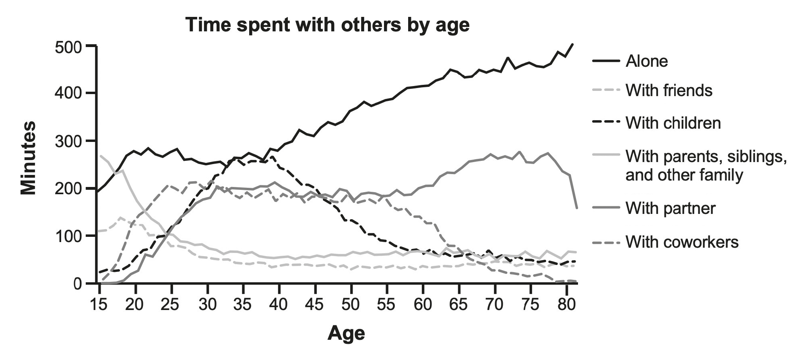
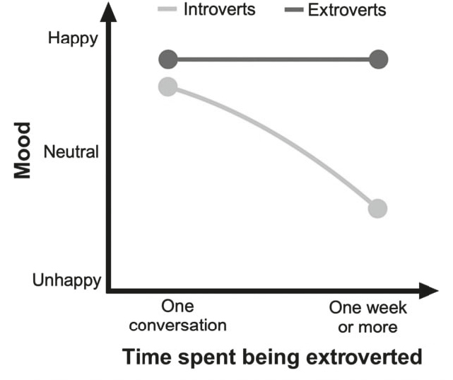
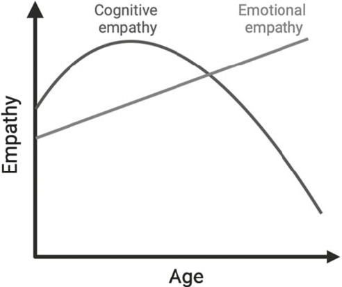
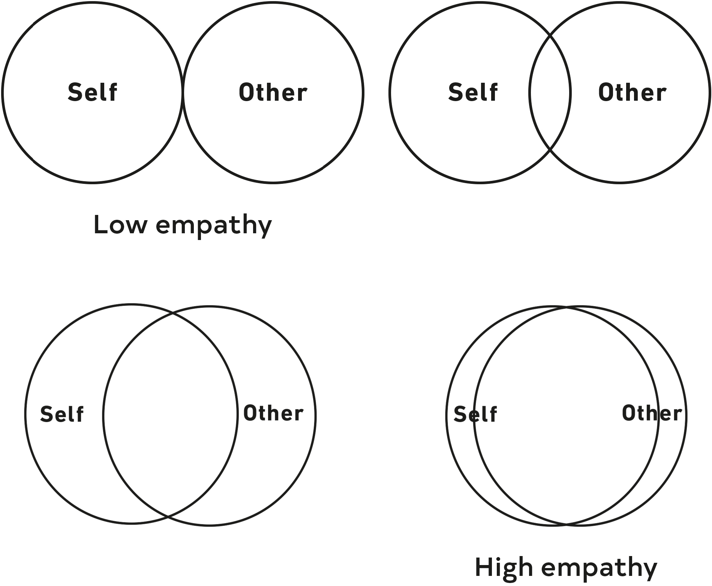
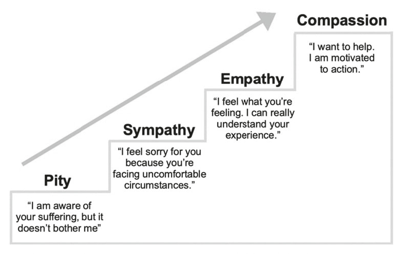
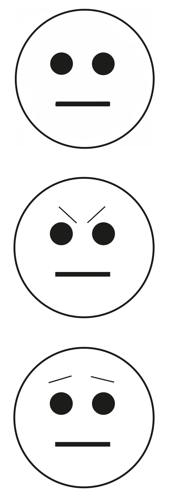
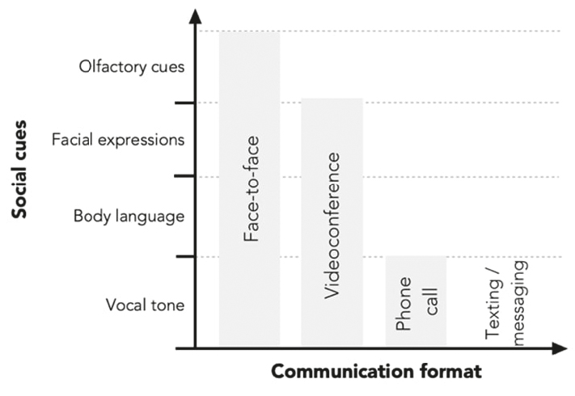

企鹅兰登书屋有限责任公司旗下品牌
纽约州纽约市百老汇大街1745号，邮编10019
版权所有 © 2025 Ben Rein
企鹅兰登书屋重视并支持版权。版权激发创造力，鼓励多元声音，促进言论自由，创造充满活力的文化。感谢您购买本书的授权版本，并遵守版权法，不以任何形式复制、扫描或分发本书的任何部分。您正在支持作家，并使企鹅兰登书屋能够继续为每一位读者出版图书。请注意，本书的任何部分不得以任何方式用于训练人工智能技术或系统。
带标志的Avery是企鹅兰登书屋有限责任公司的商标
封面设计：Caroline Johnson 和 Vivian Lopez Rowe
封面插图：Vivian Lopez Rowe
图书设计：Angie Boutin。电子书改编：Estelle Malmed
国会图书馆出版物编目数据
作者姓名：Rein, Ben, 作者。
书名：大脑为什么需要朋友：社交连接的神经科学 / Ben Rein, 博士。
描述：纽约：Avery，[2025] | 包含索引。
标识符：LCCN 2025002612 (印刷版) | LCCN 2025002613 (电子书) | ISBN 9780593850848 精装版 | ISBN 9780593850855 电子书
主题词：LCSH: 社交互动—心理学方面 | 社交互动—健康方面 | 大脑 | 幸福感
分类号：LCC HM1111 .R45 2025 (印刷版) | LCC HM1111 (电子书) | DDC 302—dc23/eng/20250627
印刷版记录可查阅：https://lccn.loc.gov/2025002612
电子书记录可查阅：https://lccn.loc.gov/2025002613
电子书 ISBN 9780593850855
欧盟产品安全与合规授权代表为企鹅兰登书屋爱尔兰分公司，Morrison Chambers, Nassau Street 32号，都柏林 D02 YH68，爱尔兰，https://eu-contact.penguin.ie。
prhid_prh_7.3_153494032_c0_r0
[献词]
[引言：关于我们社交生活的三个残酷真相]
[第一部分]
[互动和隔离如何塑造大脑健康]
[第1章 别害羞：社交互动的隐藏益处]
[第2章 唯一会孤独的器官：社交隔离如何瓦解大脑功能]
[第二部分]
[第3章 建立社交习惯：应对大脑的自然局限]
[第4章 共情与冷漠：关于视角的故事]
[第5章 你能做的，我能做得更好：动物互动及我们能从中学到什么]
[第6章 虚拟世界：我们从在线互动中获得什么？]
[第7章 缠结的神经线路：爱、触摸和深度连接如何触动大脑]
[第8章 成为更好的互动者：受欢迎的科学]
[第9章 受到影响：药物如何操纵社交大脑]
[第10章 人类最好的朋友：为什么爱狗对你的大脑有益]
[共同前行]
_153494032_
献给那些曾与孤独抗争的人，以及所有为他们指引出路的人。
当人们毫无理由地使用大词时，总是让我感到困扰。
更简单的词汇几乎总能更好地完成任务。为什么要”利用”或”运用”大词，而我们可以只是使用更小的词？当然，“展示”你”掌握”一个”庞大”的词汇量可能感觉不错，但用基础语言也可以成为一名优秀的作者。大词往往会”混淆”——我是说模糊——想法的含义。有时它们有助于表达观点，但也可能将读者拒之门外。
科学领域也发生着类似的事情。科学术语模糊了学术论文的含义，阻碍了公众的理解。我们必须更好地沟通。与其假设读者知道突触前囊泡(presynaptic vesicle)是什么，我们可以简单地称其为”装有神经递质的小袋子”，然后继续愉快地前行。找到简单的解释方式远比在句子中塞满术语并寄希望于最好的结果更有建设性。如果科学家想要对世界产生影响，我们必须敞开大门。在这本书中，欢迎所有人进来。别误会我的意思，我们会涵盖大量严肃的神经科学，但它将以所有读者都能理解的方式书写。正如医生宣誓遵守希波克拉底誓言不造成伤害一样，我宣誓不使用术语。
话虽如此，一些专业术语是不可避免的。某些术语就是需要使用。除了说GABA之外，没有其他方式来表达GABA（gamma-aminobutyric acid，γ-氨基丁酸的缩写）。但术语总是可以被解释的。在我写这本书的时候，我发现自己使用了一些科学术语，所以为了确保没有人被落下，我写了一个附录，可以在我的网站上找到（benrein.com/book）。在附录中，我解释了几个术语的真正含义，有时还提供了额外的主题评论。如果你看到一个词上有加号标记，+这意味着附录中有关于它的内容。希望在那里见到你。
想象一下：现在是周四下午四点，你正弯腰驼背地坐在电脑前，感到压力和焦虑。这周简直是噩梦；你正在为一个完全糟糕的大项目加班，而截止日期正在快速逼近。随着压力不断增加，你发现越来越难以集中注意力。你迫不及待地希望这个项目结束，但很难想象你将如何熬过去。
感到精疲力竭，你靠在椅背上，闭上眼睛，深吸一口气。你的身体在恳求你休息，但你说服自己，如果今晚再多工作几个小时，明天就会感觉好一些。你向前倾身，让疲惫的双眼重新聚焦在屏幕上。违背自己的直觉感觉不对，但你真的还有其他选择吗？
就在你做出这个决定时，你的手机开始在桌上震动并亮起。令你惊讶的是，这是一个多年未联系的老朋友打来的电话。这到底是为什么？你在手机和电脑之间来回瞥视，权衡着决定。你是继续埋头做项目，还是接电话？真正试着把自己放在这个位置上，诚实地回答：你会接电话吗？
这是一个棘手的情况。一方面，你迫切希望完成这个项目。分心可能是灾难性的。另一方面，你很好奇他们为什么打电话来。也许是好消息？或者……如果是坏消息呢？他们只是想求个帮助吗？如果谈话很尴尬，你必须想办法脱身怎么办？
尽管有这些顾虑，但某种东西告诉你要接电话。这种冲动占了上风，你接了电话。
“喂？”
“嘿！”
接下来是一场出人意料地富有成效和令人满意的对话。没有要求帮忙，没有坏消息要分享，交流也没有任何尴尬。你的老朋友只是想起了你，想问候一下。你们一起回忆熟悉的往事，欢笑着分享过去的故事。不久，你就转身离开了电脑，全神贯注地投入到通话中，把注意力倾注到电话那头的声音上。将近一个小时后，你们说了再见，并承诺很快再打电话。你是真心实意的。
回到电脑前，你感到出乎意料地精神焕发、充满活力。你的头脑清晰，准备好应对这个项目，它突然看起来不再那么令人难以承受或令人生畏了。你又舒适地工作了一两个小时，取得的进展远远超过了你的预期。
我们都经历过类似的事情，对吧？有时候，一次良好的对话是治疗坏心情的完美良方，特别是在你好几天没有进行令人满意的互动之后。这不仅仅是一个引起共鸣的轶事；它得到了科学的支持。研究表明，人们在对话后往往心情更好，压力更小。这些影响可以在长期内累积：更频繁互动的人报告更高的幸福感，而社交需求未得到满足的人得分较低。
是的，互动是天然的情绪助推器，但这不是它们能为我们做的全部。更多互动的人患痴呆症、心力衰竭、糖尿病、抑郁症和焦虑症的风险也更低。我们从社交系统获得的支持已被证明可以降低对压力的脆弱性，并增加疼痛耐受性。另一方面，社交隔离是已知的自杀最强预测因素之一。显然，我们的社交生活在塑造我们的健康和幸福方面发挥着重要作用。
但这还不是全部。研究表明，我们的社交生活可能还会影响我们的寿命。这听起来可能很荒谬，但你是倾向于接听那个电话还是让它震动到语音信箱，可能会影响你在地球上拥有的时间。一项研究跟踪了超过30万人平均7.5年，在此期间一些受试者自然去世了。值得注意的是，研究发现社交关系较弱的人在研究期间死亡的可能性高出50%。从这个角度来看，这使得被隔离对你的危害大约是肥胖的两倍，是生活在高污染地区的四倍。
现在，回到我们的接电话困境，在决定是否接听时，你在考虑自己的健康吗？可能没有，这是完全正常的。我们就是不这样思考我们的社交生活……但我们应该这样。作为一名研究社交行为生物学的神经科学家，我相信人际联系与运动、睡眠和营养等其他健康支柱一样重要。然而，我们没有像对待它们那样优先考虑人际联系。
这正是我们今天面临的挑战。我们的世界正面临着一个社会问题，我们越早承认这个现实，就能越早开始应对它。这让我想到第一个残酷真相：我们生活在一个分裂的世界中。我们可以指责许多替罪羊：社交媒体使用量的不断激增、COVID-19疫情、远程工作的兴起、政治极化，以及无数其他因素。无论该归咎于谁或什么,我们都必须认识到并理解我们的社交生活正在衰退,这是一个巨大的问题。
幸运的是,我确实认为这种认识正在发生。我很欣慰地看到,在过去几年里,公众对孤立问题的讨论有所推进。我们已经开始注意到关于我们社会问题的新闻标题,并听到相关播客。最好的部分是,有一个极其明显和简单的解决方案:多社交!但我们真的按照这个建议行动了吗?有什么改变吗?就我个人而言,我几乎没有看到任何社区建设和团结的迹象,只看到持续存在的分裂正在撕裂我们的社会。为什么我们没有做足够的事情来解决这个问题?一个猜测是,我们没有充分认识到不互动的后果,所以我在这里要传达一些你可能不想听到的坏消息。我们必须认真对待这个问题。这是因为第二个残酷真相：分裂是大脑健康的敌人。
人类大脑在进化过程中已经形成了对连接给予奖励、对孤立进行惩罚的机制。因此,我们从社交中可以获得很多好处,而失去社交可以说会带来更大的损失。我们都知道应该多接电话,为朋友和家人腾出时间,但我们似乎没有足够的动力去做些什么。我相信我们未能采取行动的部分原因是,目前关于孤立的讨论并不完整。我们听说互动对我们有益,孤立有害,但这在大脑和身体中到底是什么样的呢?那些文章和播客并没有真正纳入神经科学研究来向我们展示真正的利害关系,而这方面有很多内容可以分享。社交连接深入渗透到我们的内部运作中,触及我们体内无数的系统。当我们未能优先考虑连接时,我们的生物机能可能会以大多数人没有意识到的方式受到影响。我相信,如果我们真正理解面临的风险,我们可能会更有动力去行动。毕竟,如果你不知道为什么要做某事,你怎么能有动力去做呢?
现在,还有一个残酷的真相需要接受,这将是最难以下咽的苦药。虽然我们倾向于将COVID-19和远程工作等外部因素归咎于我们的社会问题,但我们也必须认识到自己的角色。现代人类的行为方式可能会把我们推向分裂,但这并不全是我们的错。人类大脑是在一个与我们今天所处的世界非常不同的环境中形成的,正因为如此,它并不总是做我们认为在当今社会正确或最好的事情。例如,我们有时会在互联网上与陌生人争论,我们倾向于对与我们不同的人减少共情,我们低估了给予赞美的价值。这些社交陷阱显然无助于建立连接,但它们只是大脑连接方式的结果。尽管大脑聪明而有能力,但它不是一个完美的器官。它有缺陷,可能会妨碍我们的连接。这引出了第三个残酷真相：大脑有内在的缺陷,可能会驱使我们分离。
如果我们希望构建一个真正选择和优先考虑连接的社会,我相信我们必须识别这些障碍并正面应对它们。在本书中,我们将概述大脑所做的许多可能导致分裂的奇怪行为,探讨为什么这些陷阱被嵌入我们的思维中,并讨论我们能做些什么。我的目标是,通过将我们的车灯照向社交大脑中的这些坑洼,我们可能能够通过深思熟虑和刻意的行动来转向并避开它们。
在当今世界,地球上的每个人都有一个共同的敌人:分裂。人类正在悄悄地与一个威胁我们大脑健康和物种未来的对手作战。只有一种方法可以击败这个对手,而且非常简单:团结起来。本书将揭开大量神经科学研究的帷幕,帮助你理解这场战斗的真正本质。我们将一起问:在生物层面上,互动为大脑提供了什么?当我们与他人共度时光,或者当我们独处太久时会发生什么?在线与人互动对大脑有作用吗?和你的狗一起玩算数吗?还有什么力量潜伏在表面之下,阴险地操纵我们的大脑来破坏我们的连接?有时,我们将涵盖的令人惊叹的科学会让你感到震惊和惊叹。你会开始质疑你曾经相信的事情,我希望你会在我们体内运作的不可思议的系统中发现惊奇。
最重要的是,如果我把工作做得足够好,我希望你会有动力与你的人类同胞携手,加入对抗我们共同敌人的战斗。
我从小就对社交互动着迷。我清楚地记得环顾小学食堂时的情景,被周围许多孩子在餐桌旁吃午餐的场面深深吸引。有些餐桌很安静,坐着最胆小的学生,他们聚在一起只是因为这样做是恰当的。他们会读书或盯着三明治看以避免交谈,而当偶尔发生互动时,这些互动往往笨拙而不愉快。作为一个经常读书的孩子,我常常坐在这些餐桌旁。然而,我感到社交匮乏。我在午餐时间四处张望,想象自己坐在那些更活跃、更受欢迎的同学中间。那些餐桌上的一切都更吵闹、更有趣。那是一个完全不同的社交环境——一个我迫切想要成为其中一部分的环境。
通过童年时期数年的观察,我认识到人们有各种不同的社交习惯。我开始想象社交能力(sociability)存在于一个连续体(continuum)上——从害羞的安静深处到外向的极端外限。每个人都存在于这个光谱的某处。你在哪里?
随着年龄增长,我发现自己一次又一次地回到这个想法,想要理解为什么我们都如此不同。幸运的是,我最终确实找到了与其他外向者一起的餐桌,但我从未停止四处观察。我从未停止观察所展现的社交行为的美丽多样性,思考是什么操作系统使我们每个人独一无二。
上大学时,我选择心理学作为专业,希望有朝一日能研究这些社交差异。然而,我的教育让我感觉有些不对劲。感觉有点不完整,就像我在研究错误的东西。它没有像我预期的那样让我兴奋。随着课程的深入,我慢慢意识到问题所在:我在学习行为以及人们为什么做事,但我真正更感兴趣的是大脑。回想起我童年时期关于社交连续体的想法,我意识到每个学生独特的表达方式反映了他们大脑功能的某些看不见的差异!我开始专注于找出这些差异。为什么有些学生的大脑在安静的餐桌旁感觉更舒适,而其他人更喜欢互动?我们能否将这些社交习惯追溯到特定的大脑系统?似乎我发现了自己研究大脑的真正激情,但有一个大问题……神经科学把我吓坏了。
我完全被这个学科吓倒了。将专业改为神经科学意味着要上生物化学、遗传学和分子生物学等课程,我根本不认为自己具备这些能力。由于早年一直在自信心上挣扎,我不相信自己。所以我没有追求自己的梦想,而是继续学习心理学,希望最终能有好结果。尽管我担心自己在犯错,但感觉这是我唯一的选择。我有一个不错的GPA,我不想冒险因为转到神经科学而毁掉它。我低着头,走向一个我不确定自己想要的未来。
然后,一切都改变了。就在毕业前三个学期,我经历了一个可怕的噩梦,它完全改变了我的生活。在梦中,我是一个成年人,有家庭和房子。表面上一切都很正常,只是我被一股看不见的邪恶力量困扰,但它控制着我的生活。如果我不服从这股力量,我就会开始以可怕的方式变形:我的胳膊和腿会向错误的方向弯曲,我的脸会因液体肿胀到皮肤几乎要破裂,我的皮肤上会出现溃疡。听起来就像实际那样可怕。在梦中的关键时刻,这股恶魔力量将我召唤到家里的地下室。虽然它对我来说一直是看不见的,但我突然意识到它即将现身。我感到一股难以置信的可怕力量包围着我,让我充满恐惧和敬畏。我的恐惧无法形容。就在我感到这股力量压倒我的时候,我醒了。
醒来时的感觉同样强烈。我从吱吱作响的单人床上猛然坐起,进入一个寂静的黑暗房间。虽然是半夜,但我的身体充满了肾上腺素。我躺回去试图平复自己,但无法摆脱噩梦的感觉。出于某种原因——在我醒来时可能有的所有想法中——我无法停止思考的一件事是:我的大脑到底是怎么做到这一点的?我惊讶于一个器官既能生成如此复杂的噩梦——包含生动的景观、不可预测的角色和引人入胜的故事情节——又能同时体验这个梦,与角色互动并做出决定。这一切是如何在我的大脑中发生的?
那份好奇心成了最后一根稻草。我正式被推过了边缘。很明显,我再也无法压抑自己研究神经科学的真正愿望。我整夜熬夜计划如何改变我的学术道路。第二天,我就与学术顾问交谈,加入了学生神经科学俱乐部,并开始联系神经科学实验室做志愿者。我计划继续研究社交行为,但现在是通过神经科学的视角。我希望,也许,只是也许,有一天我能弄清楚为什么有些学生的大脑更喜欢盯着三明治看,而其他人的大脑喜欢热闹地玩耍。
回顾我的噩梦，我总是想知道那个邪恶的”力量”是否代表着我的职业生涯。也许我的潜意识试图警告我，我正走向一个不舒服的未来，在那里我的职业将主宰我的生活。处在错误的职业中，我将不得不做我不想做的事情，并被转变成一个我无法认同的自己。也许它在梦中永远不会向我揭示真相。相反，也许它计划在现实生活中向我揭示真相，在那些我醒来后无法停止思考大脑的时刻。我也想知道，也许我在梦中几乎遇到的那个力量在某种程度上就是我的潜意识，它来吓唬我，让我注意到我正在犯的错误。
当然，这个故事有一个圆满的结局。我继续在纽约州立大学布法罗分校攻读神经科学博士学位，在那些我以为会不及格的、有着长长名字的可怕课程中，我表现得很好。博士毕业后，我被斯坦福大学聘用，继续从事神经科学家的工作。我很荣幸地说，我已经发表了二十多篇科学文章，研究社会性大脑的工作原理。我的研究探讨了我们的基因如何塑造我们的社会行为，像MDMA这样的药物如何增强共情(empathy)，社会动机如何受环境压力的影响，人们为什么在社交媒体上残忍地对待彼此，人际干预如何预防自杀，甚至如何测量小鼠的社交互动。我为年轻时的自己感到骄傲，因为我有勇气接受一个感觉可怕但必要的挑战。
通过在神经科学领域的工作，我学到了关于我们互动科学的惊人知识，我迫不及待地想在这本书中与你分享。如果你和我一样觉得神经科学令人生畏，不用担心。这本书就是为你而写的。除了在实验室的工作，我还很高兴能在社交媒体上教授神经科学，与任何愿意倾听的人分享大脑的美丽和奥秘。我挑战自己发展科学传播技能,因为我相信,如果信息以正确的方式呈现，任何人都能学习大脑知识。我们都有一个大脑，我们应该理解它。我相应地写了这本书，以便每个人都能获得这些知识。
我们有一个社会问题，这并不是什么新闻。我相信未来几年出版的许多书籍都会诊断我们变得多么孤立。但这本书不是其中之一。这本书不仅仅是告诉你已经知道的事情，关于我们有多孤独以及现代世界如何变化。我打算更深入地探讨，引导你了解大脑神秘的生物学机制，并解释这些变化对我们健康和幸福的意义。这些页面不仅会解释你需要连接，还会向你展示为什么。我们将回答关于你头脑中那个迫切渴望陪伴的粉红色软机器的无数问题。我们将涵盖几十年来在多个大陆进行的大量科学研究。虽然你可能以前没有听说过这些研究或亲自阅读过它们，但它们有可能真正改变你的生活。
社会连接对幸福至关重要。它不仅仅是锦上添花；它和运动、睡眠和营养一样重要。然而，我们往往忽视它作为健康关键组成部分的作用。
社会连接对健康有深远的益处。它与降低痴呆、心力衰竭、糖尿病、抑郁和焦虑的风险有关。它甚至与提高疼痛耐受性和延长寿命相关。
围绕孤立问题的公共讨论未能纳入潜在的神经科学知识。这本书将阐明真正的利害关系。
我们必须认识到关于社交互动的三个严酷真相：
我们生活在一个分裂的世界中。 社交媒体、疫情和政治两极化等外部因素扩大了我们的社会鸿沟。
分裂是大脑健康的敌人。 大脑的运作机制是奖励连接、惩罚孤立，这使得分裂成为幸福的严重威胁。
大脑有内在缺陷，可能会使我们分离。 我们的神经连接有缺陷和偏见，可能会阻碍连接。理解这些自然缺陷可以帮助我们建立更有效的社交生活。
要查看本章引用的参考文献，请访问 benrein.com/book。
你的大脑是一台预测机器。当它静静地待在你的眼睛后面时,它不知疲倦地从周围世界收集信息,并猜测接下来可能发生什么。这是件好事:它让你能够更快地做出决定并适应不断变化的环境。想想汤姆·汉克斯在电影《荒岛余生》中的表现。起初汉克斯用鱼叉捕鱼时一无所获,但随着时间推移他成功了。在花费足够时间从上方观察鱼群后,他的大脑学会了它们的游动模式,并更擅长预测它们的下一步动作,最终让他能够用鱼叉一击致命。这种情况发生在生活的各个领域;你的大脑不断适应周围不断变化的世界,并更新其预测以变得更准确。
通常这很有帮助,但在社交接触减少的世界中,我们的预测会发生什么变化?无论是否有意,人类似乎正在越来越深地陷入孤立。滑动社交媒体比拿起手机打电话给朋友变得更加普遍。我们通过应用程序配送杂货,而不是与熟食店店员聊天。我们可以在网上订外卖,而不是找张桌子坐下来向服务员询问今天的特色菜。即使是朝九晚五的工作日也可以在家里完成,躺在床上用电脑,完全没有社交接触。这些变化发生得缓慢、渐进,多年来几乎没有引起注意。
因此,我相信我们大脑对社交接触的预期已经逐渐下降。我不知道你怎么样,但当自动应答服务接听我的电话时,我不再感到震惊。事实上,当我遇到真人时我反而更惊讶。我的大脑已经适应了我们不断变化的世界,并相应地更新了预测:它现在预期与机器而不是人类交谈。这个例子是整个社会正在发生的事情的缩影。在没有真正注意到的情况下,我们的大脑正在适应一个我们与他人互动更少的世界。
更糟糕的是,2020年的另一次剧变导致我们的社交生活退缩和萎缩。COVID-19疫情可以说是人类历史上最孤立的事件之一,使数十亿人陷入孤立的黑暗深处。当我们被困在家里时,沉重的孤独乌云滚滚而来,给我们的幸福蒙上阴影,将我们困在一种无法逃脱的痛苦感觉中。我们逐渐重新回到心爱的世界,却发现它已经发生了巨大变化。社交互动现在笼罩在恐惧和忧虑中,带来我们可能暴露于一种奇怪新疾病的不祥可能性。坐在公共场所带来了一种陌生的焦虑层面。我们不想再和屠夫交谈,也许最好他们根本不要碰我们的食物。我们适应了在家工作、锻炼甚至购物。因此,我们的大脑适应了较少见到同事、健身伙伴和邻居的情况。对于一个拥有高度社交大脑的物种来说,这很糟糕。
这些众多的社会变化可能促使我们的大脑计算新的预测,预期越来越少的社交接触。但仅仅因为大脑降低了预期并不意味着它降低了需求。作为对比,想象一下如果类似的变化降临到我们的睡眠习惯上,让我们每晚只能睡三四个小时。接下来会发生什么?当然,我们会简单地适应这种新常态,调整我们的生活方式,可能会喝更多的咖啡。我们会习惯更疲倦,但仅仅因为我们在心理上适应了睡眠不足,并不意味着我们的大脑不再需要整整八小时才能最佳运作。我们会更不快乐,患阿尔茨海默病等疾病的风险更高——这一切都是因为我们大脑的需求没有得到满足。我相信类似的事情正在我们的社交生活中上演。一个分裂的世界正在驱使我们彼此退缩,剥夺了我们存在核心的社交刺激。人类大脑对共处有着深刻而原始的需求,在一个后互动世界中,大脑古老的社交系统陷入混乱。
可以肯定的是,我们之间的空间确实在增长。从2013年到2021年,美国人与朋友相处的时间每月减少了约15小时,而独处时间增加了36小时以上。根据2022年的一项调查,58%的美国成年人感到孤独。1990年,只有27%的美国人报告拥有三个或更少的密友;到2021年,这一数字跃升至49%。更不用说,美国卫生局局长已宣布我们陷入了孤独和孤立的流行病。是的,真的有那么糟糕。
但说实话,这真的重要吗?我们真的需要互动才能快乐和健康吗?社交对我们的幸福到底有多大影响?
答案是肯定的，肯定的，还有很多。大量科学研究表明，互动对我们的大脑有着巨大的影响。为了解释这一点，我们将走一条令人惊讶的路径，从互动的心理学开始，然后再转向潜在的神经科学。就像我的学术之旅先经历心理学，然后才转向神经科学一样，我们将走同样的路线,因为我发现这有助于看到全局。首先理解心理学建立了一个基础，然后可以用神经科学来支撑(和解释)。这将帮助你不仅从行为角度，而且从细胞层面的大脑内部来理解你的思想和倾向。心理学和神经科学之间的相互作用才是真正神奇的地方。当我们能够将行动与分子联系起来时，我们知识的深度就会超越表面，深入到肉眼看不见和未知的神经世界。
自从我们存在以来，人类一直在寻找”什么让我们快乐?“这个问题的答案。是金钱吗?名声?一辆快车?大块肌肉?在阳光明媚的日子里，一个面包碗装满龙虾浓汤?还是可能是像……人际关系这样简单的东西?
在这一点上，很明显我要告诉你社交互动对你有好处。但你可能会惊讶于它们在提升情绪和幸福感方面是多么强大。最近的研究表明，社交和表达感激是提升幸福感最有效的方法——甚至超过锻炼、冥想和亲近自然等事情。但这在实践中真正是什么样子呢?互动之后我们真的会立即感觉更好吗?
华盛顿大学圣路易斯分校的一项研究表明确实如此。研究人员要求大约250名大学生在校园里戴一个星期的窃听器……为了科学!当然它不是真正的窃听器。它是一个录音设备,研究人员称之为”电子激活记录器”,然后在整篇论文中巧妙地称之为”E.A.R.”。他们用它来录制学生的对话并收集有关他们互动的信息。好吧,我想它基本上就是一个窃听器。
在这一周里，学生们还每天四次记录他们有多快乐。目标是看看进行社交互动是否会影响他们的情绪。研究人员总共收集了超过150,000条录音,每条三十秒长。然后一组极其幸运的研究助理开始听这些录音并给它们打分。保佑他们的灵魂……那几乎是整整五十三天的音频。那么他们发现了什么?
总的来说，学生们在进行对话后的一小时内心情要好得多,而且他们说话的时间越长,他们就越快乐!最大的提升来自于与他们更喜欢和更熟悉的人互动——这并不令人惊讶。然而,更出乎意料的发现之一来自对录音的分析(谢天谢地,那五十三天没有白费)。学生们在对话中透露更多关于自己的信息时,情绪提升最明显。对我来说,这听起来像是一个很好的理由,欢迎在我们的互动中保持开放和透明。
似乎很明显,有机的互动——当我们选择社交时自然发生的互动——让人们更快乐。但是那些不是有机的互动呢?如果学生们被迫去与一个随机的人互动,他们会同样享受吗?这个问题很重要,因为如果我们希望解决我们的社交问题,我们可能需要在日常生活中创造新的互动。这些非有机的对话仍然可以提升我们的情绪吗,还是这只是一种徒劳的做法?
幸运的是,芝加哥大学教授Nicholas Epley博士比我们领先了许多步。Epley的实验室研究了当人们被迫与陌生人交谈时会发生什么,我非常喜欢他的研究,因为他在现实生活中进行研究。例如,他的团队曾经指示乘火车进入伦敦的英国通勤者在旅途中与某个随机的人聊天,看看这如何影响他们的情绪。当一切尘埃落定时,与陌生人聊天的火车乘客对他们的通勤评分比对照组高出两倍多,对照组则保持沉默。就像对大学生进行的研究一样,人们在对话中花费的时间越多,他们对通勤的评价就越好。他们交谈的陌生人的年龄、性别或种族都不重要。社交组总是更享受他们的旅程。
似乎即使是强制的互动也能有益于一个人的情绪,Epley的团队已经证明这在公共汽车、出租车和等候室中都是真的。无论人们在哪里,当他们与周围的陌生人交谈时,他们似乎都有更好的体验。
那么心理学领域的所有这些研究告诉我们什么呢？一句话概括：社交接触让人感觉良好。无论我们的互动是自然发生的（比如在商店偶遇朋友）还是更强制和”人为”的（比如在火车或公交车上接近陌生人），它们似乎总能提升情绪。当然，每次互动的心理价值会因互动质量和相处对象的不同而有所差异（例如，与朋友互动带来的提升最大）。然而，即使是短暂的互动——比如下车时对司机说声谢谢——也被证明能改善幸福感。当涉及到提升精神状态时，可能只需要简短的几句话就足够了。
从长远来看，优先培养这样的社交习惯可以累积成重大益处。科学表明，过着更社交化生活方式的人更快乐，甚至表现得更外向也能让人感觉更好。当大学生被要求在一周内表现得外向（即”健谈、自信和自发”）而在另一周表现得内向（“谨慎、安静和保守”）时，他们在表现外向时情绪大幅提升，而在像内向者那样生活时情绪明显下降(decline)。
记住这些发现，我鼓励你审视自己的生活，看看哪里可以扩展社交。鉴于硬道理第1条：我们生活在一个分裂的世界，每周可能有数十个错过的寻求联系的机会。不要让家人的电话进入语音信箱，而是接起来。当你想要爽约朋友的晚餐或饮品聚会时，考虑一下这个决定如何影响你的幸福感。如果我们希望最大化健康，就应该承诺优先考虑互动，就像我们承诺和决心正确饮食、多运动和充足睡眠一样。而且说真的——我不是在开玩笑——试着和陌生人交谈，看看感觉如何。我打赌你会感到惊讶。我们经常面对一个可爱的社交果实，等待被收获——这种果实具有罕见而宝贵的能力，可以提升你的大脑健康和情绪。所以我鼓励你通过思考以下问题来反思你的生活：
你多久见一次朋友和家人？与过去几年相比如何？
你是否做出孤立的决定，比如忽略电话、网上订购食品杂货，或者朋友邀请外出时选择待在家里？
你会感到自在地与陌生人开始对话吗？
你可以做出什么决定来扩展社交生活并花更多时间建立联系？
在我们继续之前，是时候注入一些重要的神经科学知识来更深入地解释这一点了。社交互动为什么首先让我们感觉良好？
首先，让我们建立一个基本原则：对于你经历的每一次心理体验，你的大脑中都有一个相应的事件在驱动这种体验。这正是我之前提到的心理学和神经科学之间神奇的相互作用。例如，当你在抚摸狗时体验到一种快乐感时，大脑的某些部分正在加速运转以创造那种快乐感（可能是处理奖励的区域）。如果狗转过身来朝你的方向大声放屁，这些奖励区域可能会降低活动，导致快乐感稍微减少。与此同时，其他区域可能会激活——比如那些涉及厌恶的区域。了解你内部运转的齿轮可能会加深你对所体验感觉的欣赏。如果你把人体想象成一辆汽车，大脑就是驱动我们的引擎。有时打开引擎盖看一看是有价值的。
现在让我们将这个原则应用到社交互动上。在本章的第一部分，我们确立了我们的心理现象：社交互动让人感觉良好。现在我们必须问：大脑中发生了什么？为了回答这个问题，我们将转向社会奖励(social reward)的神经科学——这个概念在人类的古老历史中有着深厚的根源……
通过多年的科学研究，我逐渐认识到身体的几乎每个特征都有一些很酷的进化起源。例如，你有鼻子这不是很奇怪吗？我知道，这是个奇怪的问题，但真的，那需要在那里吗？它并不是最有吸引力的东西。当然，你需要鼻孔以便在嘴巴被占用时（比如吃东西时）能够呼吸，但为什么需要整个鼻子？难道你不能像伏地魔那样只在脸上有两个鼻孔洞吗？鼻子实际上有很多用途。首先，它充当过滤器，是一个衬有毛发和粘液的陷阱，可以防止不需要的东西进入你的气道。其次，它确保你的鼻孔向下指向，以防止水和碎片不断滴入其中。尽管鼻子很笨重，但我们拥有它是因为它帮助我们生存。我们只能希望伏地魔有强大的免疫系统来保护他免受可能进入他脸部的所有东西的侵害。
同样，大脑的内部运作也有源于进化的目的性起源。就像我们有鼻子是有充分理由的一样，互动让大脑感到愉悦也是有充分理由的。这归结为一个简单的事实：在远古世界，群体生活让我们更好地生存。数千个世纪以前，独自一人会非常糟糕。想象一下在一对一的战斗中对抗一只剑齿虎。这听起来像是必死无疑（而且死得不愉快）。但如果有十五或二十个同伴，你可能还有机会。当涉及到”适者生存”时，最适应的人类往往是最善于社交的人类。我们可能不是地球上最强壮或最凶猛的野兽，但我们非常聪明，而且我们可以进行极其出色的沟通。这使得我们在团队合作时具有惊人的效率。因此，为了我们的生存，我们被设定为社交动物。
但”被设定为社交动物”到底意味着什么呢？好吧，一个小练习可能会有所帮助。让我们假设你生来就是为地球工作，服务于生活在这里的众多物种——这是一个崇高的命运。你的工作是确保所有动物都能存活，你通过选择有益的适应性来促进它们的生存。你的老板，大自然母亲本人，给了你一项新任务：人类。你必须通过必要的塑造来让他们存活下来。当你观察他们时，你注意到他们在共同工作时在狩猎和自卫方面表现出色。因此，为了让他们存活下来，你决定设计一个新特征，让他们想要存在于群体中。你可以随心所欲地调整他们的大脑或身体。你会选择什么特征？
这个问题有正确答案。至少，在现实中确实出现了一种特定的适应性（而且不是那个不太好看的鼻子）。这是一个简单但巧妙的解决方案：社交奖励(social reward)。我们大脑的化学系统被塑造成使与他人互动感到愉快。得益于此，人类自然倾向于团结在一起。虽然这种适应性可能发生在许多千年前，但这些社交奖励系统至今仍留在我们的大脑中，并继续在塑造当今社会中发挥关键作用。
我的意思是，想想看。在现代生活中，人们通常如何度过周末？除了赶上家务和在沙发上”摆烂”之外，许多人努力将这宝贵的空闲时间用于与他人在一起。我们拜访家人或朋友，聚集在公共场所。在宝贵的周五和周六晚上，我们挤进拥挤的房间，喝酒来放松我们的互动。我们本可以用这些宝贵的时间做任何事情，但我们往往想在这种奇怪的社交混合中度过。有趣，不是吗？对我来说，这清楚而美好地表达了我们天生的团结驱动力——这是我们为生存而团结在一起的进化需求的副产品。
然而，在当今世界，这些社交本能可能会受到挑战，这要归功于许多新形式的社交奖励，它们挑战了我们天生的团结驱动力。例如，你可以随时在社交媒体上上传照片，并开始从其他用户那里收集点赞。这是社交奖励的明显游戏化——试图利用你大脑天生渴望获得社区认可的欲望。你大脑的社交系统被他人通过轻触按钮向你倾注积极关注所刺激，使得这些应用程序难以放下。当你打开电视时，你可以观看角色坠入爱河、获得高社会地位或击败共同敌人的节目或电影——所有这些都吸引着大脑的社交奖励系统。也许之所以如此容易放弃外出夜晚而选择看电视或刷社交媒体，是因为我们仍然可以通过我们的设备获得一点社交奖励。也许我们已经满足于用这些合成的社交奖励代替真实的交往，因此不太倾向于面对面地联系。
我们不应该把我们的社交天性视为理所当然。毕竟，并非所有动物都像我们一样生来就善于社交。例如，像老虎这样的独居动物更喜欢独自生活。为什么？嗯，老虎完全有能力独自捕杀猎物，所以组队只会意味着更多的嘴要分食晚餐。由于没有存在于群体中的进化压力，它们的大脑不会因为在一起而奖励它们。另一方面，还有很多其他物种确实与我们有着共同的社交驱动力，因为它们在群体中生存得最好。猴子成群结队旅行，鱼成群游泳，狗成群狩猎，甚至老鼠也群居生活。由于这种与我们大脑的相似性，许多关于社交行为的神经科学研究都是用老鼠进行的。我自己的一些研究清楚地展示了老鼠的社交奖励例子。
在我攻读博士学位的第一年，我有很多很酷的想法（可能是因为那时我的大脑工作得更好）。我发现自己在思考人们有时会因为社交原因做一些愚蠢的事情。例如，你是否有过为了给约会对象留下深刻印象而在晚餐上花太多钱的经历？你和你的朋友在寒冷潮湿的天气里参加音乐会后是否生病了？在酒吧待到深夜怎么样？我做过这三件事，可能还有更糟的。人类经常愿意为了与他人在一起而让自己经历不舒服的事情，这大概是因为我们大脑中的社交奖励系统。由于老鼠像我们一样有社交动机，我想知道它们是否也会做这类事情。
有一天在实验室里，我转动办公椅面向我的同事Zijun Wang博士，开始讨论这个问题。研究人员如何测试小鼠是否愿意因为社交原因做出愚蠢的事情？小鼠不会约会、不需要按时睡觉，也不会举办音乐会（但如果它们会，我绝对想看一场）。多亏了我年轻、新鲜的大脑（以及Wang博士的帮助），一个想法浮现了出来。
想象一个加号形状的平台，距离地面几英尺高。四条臂中有两条被墙壁遮蔽，而另外两条完全暴露在外。这个装置被称为高架十字迷宫，科学家用它来测试小鼠的焦虑程度（是的，我们可以做到这一点）。那些开阔无遮蔽的臂对小鼠来说非常可怕，而封闭的臂则是阴暗、受保护的避难所——小鼠的梦想之地。因此，小鼠几乎所有时间都待在封闭臂中，只在少数勇敢的时刻才冒险进入开放臂。它们探索那些可怕开放臂的时间越少，我们就认为它们越焦虑。Wang博士和我认为这是测量社交动机的完美场所。如果我们在其中一条开放臂中放置第二只小鼠会怎么样？普通小鼠是否愿意冒险（字面意义上的）只是为了拜访一个伙伴？啊哈！我们找到了小鼠版的寒冷雨天音乐会。现在，是时候看看小鼠是否愿意为了社交而感到不适了……
令人惊讶的是，这个实验成功了。当我们在一条开放臂的末端放置一只小鼠时，自由活动的小鼠在那里待的时间大约是原来的四倍。如果这意味着它们可以进行社交互动，它们愿意勇敢面对可怕环境的程度是原来的四倍。相比之下，我们发现携带自闭症相关基因突变的小鼠没有表现出这种社交动机——它们几乎不愿意为了社交互动而进入开放臂。（顺便说一句，我确实在一份科学期刊上发表了上面的图，包括那个可爱的椭圆形小鼠。我私下给它取名为托尼。）
显然，互动对小鼠来说是有奖励性的。事实上，它们会按压杠杆多达二十次，只是为了和另一只小鼠待十五秒。由于与人类的这种相似性，我们可以研究它们的大脑来弄清楚社交奖励如何运作——这正是神经科学家所做的。这就是我们回答重要问题的地方：大脑中发生了什么来创造社交奖励？
事实证明，并没有单一的大脑化学物质控制社交奖励。相反，它涉及三个关键角色：催产素(oxytocin)、血清素(serotonin)和多巴胺(dopamine)。你可能认识这三种化学物质，因为它们是较受欢迎的神经递质(neurotransmitters)，即脑细胞相互传递以进行交流的化学信号。（悄悄话：如果你想深入了解大脑信号如何工作，请查看附录中的相应条目。）
但说实话，谁在乎呢？知道让互动感觉良好的三种化学物质的名称真的能帮助你理解自己吗？我不这么认为。至少在我们进一步解释这些化学信号的作用以及它们在大脑中的哪些部位起作用之前不行。
让我们从催产素开始，它经常被称为”爱情激素”，因为它在社交联结和依恋中发挥作用。大脑中的大部分催产素是在室旁核(paraventricular nucleus)产生的。这是一簇神经元，因其位于大脑充满液体的腔体（称为脑室(ventricles)）旁边而得名。你可以把这个大脑区域想象成一个坐落在美丽的脑脊液池塘旁边的催产素工厂。这个工厂生产和包装催产素，然后将其运送到其他大脑区域。
研究表明，当催产素被输送到一个特定的大脑区域——伏隔核(nucleus accumbens)时，它会产生社交奖励感。伏隔核是一个需要记住的重要大脑区域，因为它将在本书中多次出现（所以要注意！）。它由包裹在内核周围的外壳组成，有点像M&M巧克力豆。巧合的是，它的大小也几乎正好是一颗M&M豆，但形状更拉长，顶部扁平。它位于大脑两侧，嵌在眼睛后面几英寸处（这样就有两颗M&M豆，每侧一颗）。这些M&M豆连接得非常好，接收来自许多其他区域的线状投射，有点像大城市的中央火车站。这说明了伏隔核有多重要；就像一位在处理一系列商业交易时电话响个不停的CEO一样,伏隔核是大脑的主要操作员之一。具体来说，它从多个大脑系统收集信息来塑造我们的动机(motivations)，主要目标是追求奖励。例如，当你试图决定”我应该再咬一口这个披萨吗？“之类的事情时，你的伏隔核可能会插话说：”是的，它很好吃……而且看看那个饼边！“或者当你进入赌场时，你的伏隔核可能会说：”去21点牌桌——记得你上次赢了多少钱吗？“在这两种情况下，它都通过驱使你获得奖励来塑造你的下一步行动。考虑到这就是伏隔核所做的，将它想象成一颗甜蜜的巧克力M&M豆是非常合适的。当你感到想再拿一把松脆甜蜜的糖果时，很可能是你的伏隔核在激发这种行为。
鉴于伏隔核(nucleus accumbens)与处理奖励机制密切相关，它同样处理社交奖励就显得非常合理了。研究表明，大脑通过向伏隔核输送催产素来实现这一点，但催产素并非单独作用。当催产素涌入时，它会导致更多血清素释放，而这种血清素也至关重要。当你与朋友愉快交谈或与配偶依偎时，很可能催产素和血清素正在你的伏隔核中流动。通过在这个奖励驱动的脑区协同工作，这两种神经递质帮助大脑体会社交连接的愉悦。
现在，我们不能忘记这场盛宴的第三位成员：多巴胺。你肯定听说过它，这种因在奖励和动机中的作用而闻名的神经递质。然而，多巴胺常常被误解。人们倾向于将多巴胺视为”快乐激素”，但它远不止是一种愉悦化学物质。多巴胺是一种学习分子。当你经历愉快或对你有益的事情时——比如洗个热水澡、享用美味佳肴或钻进柔软如黄油般的毯子里——它就会释放，帮助你的大脑记住这些体验是愉快的。结果，你会更有动力再次洗热水澡、再次享用同样的美食，或者下次有机会时使用同样的毯子。因此，多巴胺负责追踪奖励的价值，并相应地激励你的行为。换句话说，它是大脑内置的强化系统。这就是为什么老鼠会不懈地按压杠杆来获取可卡因(而人类会做得更多)：因为可卡因直接刺激多巴胺信号传导。这使得这种药物具有强烈的强化作用，因为它在你的大脑中发出强有力的信号，让你”回去获取更多”。多巴胺的强化作用如此之强，以至于老鼠会不断按压杠杆，只是为了让它们大脑的多巴胺中枢直接受到刺激。当你可以直接在多巴胺工厂获得刺激时，就不需要药物了!
那么多巴胺如何与社交奖励联系起来呢?研究表明,催产素可以刺激多巴胺的释放。这大概使社交互动具有强化作用，让我们不断回来。这可能是人类冒雨参加音乐会与朋友相聚的原因，也是为什么老鼠会进入可怕的环境去嗅另一只老鼠的原因：因为这种多巴胺使我们的大脑天生就有寻求社交接触的动力。
底线是社交互动使大脑释放奖励性化学物质。催产素——它本身具有一些奖励特性——当我们与他人建立联系时开始流动。这会驱动血清素和多巴胺的释放，这是另外两种与愉悦和奖励相关的神经递质。这有点像一组三个多米诺骨牌，其中一个大骨牌(催产素)的倒下触发了另外两个骨牌(血清素和多巴胺)的倒下。这三种神经递质同时释放，创造出一种迷人的神经化学物质混合物，让我们感觉非常好。事实上，血清素和多巴胺的组合可能特别强大，因为唯一在大脑中产生相同效果的药物之一就是MDMA。该药物也被称为摇头丸或迷幻药，以产生强烈的欣快感和社交连接感而闻名。催产素影响完全相同的大脑系统这一事实说明了很多问题。
看来我们已经找到了一直在寻找的问题的答案，并解释了为什么互动让我们感觉良好：大脑中社交互动的化学特征是以愉悦和奖励为特征的!如果我们回顾我们的进化历史，这完全说得通。我们的大脑构造使得社交连接感觉良好并且具有内在的强化作用。这让我们保持在一起——因此让我们保持生存。这就是”为连接而生”的含义。
早些时候，我提到小鼠在社会神经科学中被普遍使用，因为就像我们一样，它们有动力生活在群体中。事实上，我刚才描述的几乎所有内容最初都是在啮齿动物的大脑中发现的，而不是人类。然而，这三种神经递质也与我们大脑中的社交奖励有关(我假设你是人类，而不是老鼠)。当人们将催产素喷入鼻子——一种令人惊讶的常见催产素输送方式——他们在与奖励相关的大脑区域显示出增加的活动，并发现人类触摸更令人愉快。至于血清素，在大脑的血清素被耗尽后，人们在社交奖励学习任务中表现更差。多巴胺通过外向性与社交奖励联系起来：拥有某些多巴胺受体基因变体的人更容易外向。多巴胺与外向性之间的关系非常合理。如果某些人的大脑在社交时释放更多多巴胺，这些人就会更有动力再次追求社交互动，就像多巴胺激励你再次洗热水澡或钻进那条柔软如黄油般的毯子一样。结果，这些人会更外向。事实证明，我童年时对社交连续体的预测确实有道理：每个人独特的社交偏好确实反映了他们大脑功能的差异。
我们的大脑内置了社交奖励系统这一事实说明了一切：我们天生就是要在一起的。这个系统正是我们在火车上与陌生人交谈后感觉良好的原因。这就是为什么我们经常选择在周末拜访朋友和家人。这就是为什么我们应该在手机在桌上震动时拿起它。因为当我们参与社交活动时，我们激活了驱动奖励感和满足感的神经系统。
这让我回到严峻事实第一条：我们生活在一个分裂的世界中。尽管我们作为一个物种可能正在偏离轨道(也就是说，彼此疏远)，但有个好消息：大脑永远会欣赏陪伴。今天活着的我们每个人都站在数十万年社交先例的肩膀上……甚至可能是数百万年。早在历史被记录之前，我们的祖先就过着社交生活。这意味着我们不仅仅是为了共处而连接在一起；我们是硬连接的。就像你的大脑需要一整晚的睡眠一样，它也需要足够的社交互动。即使我们的文化未能优先考虑连接，我们的大脑总是会这样做。因为在很久以前的某个时刻——远在社交媒体和远程工作等事物出现之前——它根本别无选择。没有社交连接，我们可能已经灭绝了。
另一方面，当我们允许分裂获胜时会发生什么？在一个在我们之间创造越来越多空间的现代世界中，如果我们未能团结在一起会发生什么？为了全面了解社交互动，我们必须翻转这个问题，凝视孤立的肮脏底面。最终，当我们剥夺大脑的连接时，你可能会对面临的风险感到惊讶。
随着社会变化驱使我们走向隔离，我们的预测性大脑开始预期更少的互动。然而，预期的转变并不等同于需求的转变。
社交是提升幸福感最有效的方法之一。即使是与陌生人的简短对话也能提升你的心情并改善你的体验。
在古代，人类需要团结在一起才能生存。因此，我们的大脑奖励我们群体生活。这种社交奖励系统(social reward system)至今仍保留在我们的大脑中，让我们能够从社交中获得快乐。
大脑的社交奖励系统由催产素(oxytocin)、多巴胺(dopamine)和血清素(serotonin)驱动。这些神经化学物质使社交具有强化作用，让我们感觉良好并想要继续社交。
要查看本章引用的参考文献，请访问benrein.com/book。
想象一个你完全与世隔绝的现实。假设你当前生活中的一切都保持不变——你的家、你的工作、你的床——但你没有社交接触。你是地球上仅存的最后一个人类，而地球依然在转动。
每天早上你在一个寂静、荒无人烟的家中醒来。你走在空无一人的道路上去工作，没有交通拥堵需要应对。你的车程完全安静，因为收音机里没有声音可听，也没有音乐可以跟唱。没有乘客的火车从你身边驶过。你到达一个空荡荡的工作场所，坐在办公桌前，准备独自工作一天。你的午休时间在空荡荡的走廊里漫步。晚上，你为一个人做晚餐。周末也一样，充满了独自完成的杂务或孤独地在公园散步。
最初，你的孤独可能感觉像无聊。也许你会注意到，没有他人的输入，你的思想是多么乏味和重复。随着时间的推移，你可能会逐渐陷入一个阴暗的孤独深坑——不愉快，但目前还可以忍受。但在接下来的几个月里，这些感觉会加深，直到无法忽视。深坑脆弱的底部会侵蚀，暴露出一个深深的不适和精神错乱的坑洞，因为你渴望社交连接。在孤立的压力下，你的身心健康会逐渐崩溃。
这个现实感觉如何？我猜感觉很糟糕。我个人觉得它令人紧张；一想到如此孤独的存在，我的胸口就会收紧。然而，这个想象中的世界对某些人来说并非如此想象。被单独监禁的囚犯每天都在经历它。对于丧偶的老年人或被排斥的学生来说，这个景象离现实并不远。这不仅是一个可怕的悲剧，而且是一个严重的公共健康问题。
人类很久以前就意识到孤立是痛苦的。早在1700年代，有争议的单独监禁做法就已经被用来惩罚囚犯。这是人类可能经历的最糟糕的命运之一，并且是故意造成痛苦的。一些最早的美国尝试产生了可怕、令人毛骨悚然的结果。在1820年代初期，纽约州通过立法，允许奥本州立监狱(Auburn State Prison)试验单独监禁。监狱的典狱长讲述了这个实验如何影响囚犯：“一个人如此绝望，以至于他从牢房里冲出来……从走廊上跳到人行道上……另一个人用头撞击牢房的墙壁，直到他弄瞎了一只眼睛。”这些囚犯的行为描绘出一幅纯粹绝望的画面。令人不寒而栗的是，他们似乎认为死亡比没有社交接触的生活更可取。
最近的报告显示，长期的单独监禁可以引发生动的多感官幻觉、对噪音的过度敏感以及无目的的暴力行为。一项对超过二十万名囚犯的研究发现，那些在服刑期间被隔离过任何时间长度的人，在释放后一年内死亡的可能性高出24%。他们死于自杀的可能性高出78%。
为什么单独监禁会带来如此可怕的后果?也许是因为我们在进化上被设定为要在一起。社交连接(social connection),就像睡眠或营养一样,是人类大脑的基本需求。被单独监禁违背了我们与他人相处的最深层和最原始的本能。它在我们内心埋下了一颗原始痛苦的种子,如果任其生长和扎根,可能会膨胀成疯狂。我们是精妙的生物——从头到脚都装满了令人印象深刻的机器——但与我们体内的许多其他器官不同,大脑会感到孤独。这是一个独特的属性。日日夜夜,你的心脏将营养物质输送到饥饿的组织,你的肠道沿着漫长蜿蜒的路径搅动食物,你的横膈膜不知疲倦地工作以让你的肺部充满空气。这些器官只是简单地工作,毫无疑问地无休止地发挥作用。然而,大脑是不同的。它的需求超越了简单的营养需求,如氧气和葡萄糖。与我们其他器官不同,这个承载着我们每一个思想、感觉和秘密的柔软皱褶的团块需要陪伴。它渴望他人的陪伴。没有这些,它就会失败。
或者,至少,它会挣扎。社会纽带是大脑健康的重要组成部分,而我们可能忽视的是,大脑健康本质上支撑着我们体验的每一个方面。“拥有健康的大脑”不仅仅意味着快速解决谜题或专注于任务;它还关乎你如何管理情绪、在工作中感觉有多困倦、能承受多少运动量、有多饿,以及更多。人们通常认为增强大脑功能的关键是吃特殊饮食、服用某种补充剂或做填字游戏,但这些元素只是整体图景的一部分。要培育我们的大脑,我们应该首先确保满足它们最基本的需求,而社交接触就是其中之一。
单独监禁可能是孤独最极端的例子,但它揭示了我们许多人已经知道的真相:独处是痛苦的。对于普通人来说,隔离以断断续续的波浪或短暂的时期出现:一两天没有好好交谈,或者对于独居者来说在家待几天。它看起来像一个在单人公寓工作的远程工作者,让一个工作周溜走而没有亲自见到任何人。它看起来像一个在毕业舞会那天因流感被困在家的学生。它看起来像一个在沙发上手术后恢复的病人,而他们的伴侣去办公室上班。这些相对短暂的时期远不足以让人发疯(虽然有时会有这种感觉),但这并不意味着它们可以忽略不计。即使时间较短,独处也会严重影响幸福感。
关于住院患者康复的研究提供了一个清晰的例子,说明短期隔离如何消耗我们。当患者在住院期间被隔离时(通常是为了防止传染病传播),他们会遭受更严重的抑郁和焦虑,并且有更高的风险经历不良事件。如果隔离在之后继续,情况可能会变得更糟。当患者在心脏病发作后从医院出院时,那些独居的人在接下来三年内死亡的可能性是其他人的两倍多。相比之下,那些在中风后获得最强社会支持的人显示出最大的康复。
2020年大流行封锁提供了另一个视角,这是对孤独结果的令人心碎但引人入胜的观察。研究表明,社交限制与更高水平的抑郁、压力和孤独相关,独自隔离的美国人比与家人困在一起的人更挣扎。同时,人们被隔离的时间越长,他们的抑郁就越严重。
尽管隔离会带来后果,但我们似乎未能在现代生活中优先考虑连接。我们继续生活在一个分裂的世界中,虽然我们未能做出改变,但风险仍然非常真实:追踪数百万人的研究表明,隔离与因任何原因死亡的风险增加32%相关。我们如何前进并将自己从这个危险的陷阱中解救出来?
我想知道也许我们没有掌握正确的信息——试图在知识缺陷中导航这个令人困惑和可怕的现实。如果我们完全理解真正面临的风险,也许我们会更努力地摆脱困境走向安全。隔离对大脑有什么影响?为什么独处真的会增加死亡风险?是时候找出为什么大脑需要朋友了。
2015年,阿尔茨海默病和中风研究员Joshua Crapser博士发表了一篇关于隔离如何影响大脑健康的科学论文。论文挑衅性的标题说明了一切:“一是最致命的数字”。
在研究大脑衰老(aging)的过程中，Crapser博士和他的同事们发现了一些令人震惊的事情。他们当时正在研究中风，这是一种大脑某些部位停止供血，导致神经元因缺氧而死亡的疾病。实验室通过暂时阻断向大脑供血的动脉来人工诱导小鼠中风。他们最初的目标是弄清楚大脑如何从这种毁灭性事件中恢复，但当他们注意到结果中的一个令人惊讶的趋势时，研究偏离了原定方向。不知为何，独居的小鼠中风症状严重得多！不知怎么的，完全相同的中风在它们大脑中造成了更多损伤，留下了更大面积的缺氧死亡细胞区域。更重要的是，被隔离的小鼠表现出更严重的症状，需要更长时间才能恢复，而且更容易死亡。
这似乎有些牵强。我们如何确定它们的社交条件确实是罪魁祸首？事实上，其他研究发现，当小鼠只是部分隔离——用透明屏障隔开，它们可以看到彼此但无法进行身体接触——它们的中风情况介于两者之间。它们表现出的损伤比群居小鼠多，但比完全隔离的小鼠少。
我觉得这完全令人震惊。我是说，这怎么可能？这意味着社交活动在某种程度上保护神经元免受窒息(suffocation)的伤害。如果两个人遭受了完全相同的中风(假设他们的大脑缺血时间正好都是五分钟)，理论上社交生活不太活跃的人会有更严重的脑损伤。这怎么可能呢？
回想一下本章开头的练习。想到没有社交接触的生活会让你感到压力(stressed)吗？想到再也见不到你所爱的人，或者长时间被单独监禁，你的胸口会感到紧绷吗？如果是这样，那完全正常。因为社交隔离实际上是一种压力形式，身体会这样对待它。考虑到我们的进化史，这完全说得通。也许在我们的远古世界里，这种痛苦信号通过激励我们寻求群体来提高我们的生存机会。现在，数千年后,你胸口感受到的那种紧绷感可能是这个史前生存系统的遗留物。然而，这并不意味着它在今天仍然对我们有益。通过大脑中的特定机制，这种压力可能导致在被隔离的小鼠身上观察到的加重的中风症状。
人体以特定的、可预测的方式对压力做出反应。例如，HPA轴——一个涉及许多部分和组件的复杂系统——是大脑的主要压力反应系统之一。当你感到压力时，一种名为去甲肾上腺素(norepinephrine)的神经递质和激素会被释放，以驱动我们都非常熟悉的战斗或逃跑反应。这唤醒了一个叫做下丘脑(hypothalamus)的脑区,它通常负责平衡身体和维持体内平衡；比如调节体温和心率之类的事情。当下丘脑注意到这些警钟响起时，它会释放一种叫做促肾上腺皮质激素释放因子(corticotropin-releasing factor)的激素，通知垂体(pituitary gland)向血液中释放另一种叫做促肾上腺皮质激素(adrenocorticotropic hormone)的激素。最后，这导致肾上腺(adrenal glands)释放糖皮质激素(glucocorticoids)。如果你想知道HPA轴代表什么，它是下丘脑-垂体-肾上腺皮质轴(hypothalamic-pituitary-adrenocortical axis)。现在你可以看到这个名字的由来了——以及压力反应是多么复杂。
不用担心——不需要记住所有这些。我想关注的部分是最后一点，关于糖皮质激素。这些是作用于身体许多组织以启动压力反应的激素。在人类中，主要的糖皮质激素有一个熟悉的名字：皮质醇(cortisol)——通常被称为”压力荷尔蒙”。皮质醇让身体做好准备，应对引起压力的任何威胁。身体认为一场战斗即将来临，正在准备军队。这意味着提高心率，抑制消化等非必需的身体功能，并增加血糖以供给肌肉和组织。重要的是，皮质醇所做的另一件事是减少炎症。这是因为当你面临像被捕食者追赶这样的压力事件时，炎症对你没有好处。顺便说一句，如果你想知道为什么糖皮质激素(glucocorticoid)这个词听起来很熟悉，你可能因为同样的原因被开过这种药（比如泼尼松）：减少体内的炎症。
等一下……如果皮质醇是抗炎的，压力不应该是件好事吗？
从理论上讲，听起来可能是这样。但有一个问题。当压力从短期（通常称为急性(acute)压力）转变为长期（慢性(chronic)压力）时，坏事就会发生。慢性压力导致皮质醇水平长时间保持升高，这可能导致你的身体对它变得不敏感。就像我们不能永远处于战斗或逃跑模式一样，我们不能期望身体的组织无限期地保持在这种压力反应状态。最终它们停止对皮质醇做出反应，不再让它减少它们的炎症。结果，当身体处于慢性压力下时，这种激素可能会失去其抗炎特性。这是一个问题。由于主要的抗炎系统之一失灵，身体变得容易受到慢性炎症的影响。而这，我的朋友，是健康和幸福的祸根。慢性炎症会对身体的健康组织造成损害，并与心脏病、糖尿病和癌症等疾病有关。
这似乎就是社会隔离中发生的情况。由于它是一种压力形式，被隔离的人表现出更高的皮质醇水平，而亲密关系较少的人皮质醇分泌更多。美国宇航局休斯顿约翰逊航天中心进行的一项研究让受试者在650平方英尺的封闭空间内隔离三十天。仅仅一周后，他们的皮质醇水平平均增加了56%。这或许有助于解释为什么被隔离的住院患者遭受更严重的焦虑和抑郁，以及为什么一周不间断的远程工作会让人感到不安。受试者的皮质醇水平在整整三十天内保持高位,只有在他们回归正常生活几天后才恢复。让我再说一遍。皮质醇水平在隔离期间上升，在恢复社交后下降。考虑到几乎每个人都想保护自己的健康和幸福，我们是否忽视了一个显而易见的英雄？社会接触是免费的、愉快的、有效的。与此同时，市面上有成千上万的时尚饮食、补充剂和其他昂贵的灵丹妙药声称能治愈我们的皮质醇水平。也许我们可以简单地转向一个更直接（也更便宜）的解决方案：彼此。
慢性炎症是真正的罪魁祸首吗？这是否是被隔离的人更有可能死于任何原因的原因，以及为什么克拉普瑟博士被隔离的老鼠中风更严重的原因？他与德克萨斯大学休斯顿健康科学中心教授路易丝·麦卡洛博士共同领导的研究表明确实如此。当他们抑制被隔离老鼠的炎症时，它保护了它们——它们的中风并不比社交老鼠更严重。似乎当隔离引起炎症时，大脑对中风等损伤的抵抗力就会降低。
另一个例子不是来自大脑，而是来自心脏。孤独与心脏病风险增加有关，独居的人在心脏病发作后更容易死亡。然而，当给老鼠注射催产素——在互动过程中释放的关键神经递质——它似乎保护它们免受隔离对心脏健康的负面影响。这大概是因为催产素不仅驱动社会奖赏和联结，还具有抗炎特性。这一点的重要性怎么强调都不为过。它表明互动不仅让我们感觉良好，而且通过对抗我们体内危险的炎症，真正保护我们免受多种形式的疾病和死亡。认识到这一点，我们可以开始欣赏社会联系对我们健康的真正影响。我们开始看到硬真相第2条：分裂是大脑健康的敌人的现实（更不用说我们身体其他部分的健康了）。
被剥夺任何你需要的东西都是令人痛苦的，社会滋养也不例外。人类是社会性动物；互动是我们大脑功能的固有部分。如果我们不是社会性的，隔离可能就不会产生这些负面影响。事实上，那些喜欢独居的独居动物（如老虎或狐猴）在被隔离时不会表现出皮质醇增加。相反，当它们被迫与其他动物生活在一起时，它们会表现出皮质醇增加！它们的社会需求与我们相反，所以它们的压力系统也相应地连接。
2024年初，我的母亲在应对逐渐失去患有阿尔茨海默病的母亲时，遭受了毁灭性的抑郁症。她的情绪连续几周都很低落，随着她进一步陷入绝望，她发现自己失去了社交的欲望。离开家或见朋友似乎不值得；然而，这种自我隔离正在悄悄地使她的抑郁症恶化。当一位终身好友邀请她共进晚餐时，我妈妈拒绝了。幸运的是，她的朋友能看出我妈妈很抑郁，比以往任何时候都更需要友谊。“我不在乎，你必须来！”她告诉她。不想让朋友失望，我妈妈决定去。她简直不敢相信自己身体的反应。那天晚上她睡得非常好，第二天醒来时有了全新的态度。仅仅与朋友相处几个小时后，她发现自己的情绪得到了提升。如果她的朋友没有坚持一起度过时间，谁知道这种持续的隔离会如何影响我妈妈的健康。
我们不仅在与他人在一起时体验到巨大的快乐和奖赏，而且在分离时体验到痛苦和健康后果。这是一种强大的生物本能，我们应该注意它。即使我们不想社交，我们的大脑和身体也会从中受益。
作为一个警告，如果我仅仅将隔离等同于大脑中的”压力”然后就不说了，那就错了。事实是隔离是复杂的。孤独的大脑内部除了炎症之外还发生着许多其他事情。当人们孤独时，他们的大脑开始以一种新的、无益的方式处理社会信息。他们似乎更关注互动中的坏的一面。当看到负面的社交图像（如一个男人打一个女人）时，他们在视觉皮层中表现出更大的大脑反应。孤独的人也难以信任，在与信任相关的大脑区域（如前岛叶、伏隔核和杏仁核）表现出较弱的活动。不幸的是，孤独的人也被他人评为不太值得信赖。
在我们这个分裂的现代世界中，我不禁思考，我们所允许滋生的孤独感是否正在将我们推得更远。也许我们的孤立正在让我们更加不信任彼此，增强我们对政治极化、文化战争以及其他扩大我们分歧的因素的脆弱性。对于一个在2010年代末期因政治强度上升和其他文化因素而已经陷入不信任螺旋的社会来说，COVID-19大流行可能是最糟糕的事情。
更糟糕的是,被孤立会使社交变得不那么愉快,这可能使人难以摆脱孤独状态。孤独的人体验到较少的社交奖励,并且在观看积极的社交图像时,大脑奖励回路的一部分——腹侧纹状体(ventral striatum)——显示出活动减少。因此,孤独的人在愉快的互动后情绪提升较弱,催产素水平也较低。这一切都带来了一个重要的教训:当你感到孤独和孤立时,可能需要几次互动才能让你走出自己的壳,重新回到你的日常生活中。我妈妈很幸运,一个晚上的外出就对她产生了如此大的影响,但效果可能并不总是那么立竿见影。如果第一次与朋友或家人见面没有奏效,或者你感觉不像自己,请给它一些时间。你的孤独可能确实在改变你的大脑功能,使你难以找到有意义的联系。
还有一件事我们必须解决:孤立的影响可能因年龄而异,何时遭受孤立很重要。在这方面,有两个群体我们应该特别关注:儿童和老年人。这些群体似乎以独特的方式容易受到孤立的影响,理解这一点很重要。让我们从一切开始的地方说起:童年。
1957年,一个名叫苏珊·威利(Susan Wiley)的小女孩出生在加利福尼亚……但十三年后,世界将以一个不同的名字认识她:精灵(Genie)。
精灵遭受了一个任何人都不应经历的童年诅咒。在她早期生活的大部分时间里,她是严重父母忽视和虐待的受害者。她几乎所有的时间都被单独锁在一个房间里,营养不良,被一个临时的背带束缚住无法动弹。她的生活缺乏社交经验。她几乎没有接触过任何语言,因为她唯一的互动来自她施虐的父亲的扭曲形式。报告称,如果精灵发出任何声音,她父亲就会像狗一样对她吠叫和咆哮,殴打和抓挠她以让她保持安静。1970年末,当她和母亲进入福利办公室时,幸运地被加利福尼亚当局发现。社会工作者仅从看她就能看出有问题,并启动了调查。很快她的生活状况曝光,新闻报道开始传播。
精灵被描述为”野性的”。她的行为是缺乏典型健康人类接触的生活的症状。她几乎没有语言技能,只认识大约二十个单词。她只能非语言地表达自己,而且她的沟通不是很有效,没有任何面部表情或肢体语言。精灵对他人的存在漠不关心,经常在人们与她说话时走开。在被加利福尼亚州接管照顾后,她继续在语言方面挣扎,从未完全获得通过言语交流的能力。不幸的是,她早期生活造成的大部分损害是永久性的。
尽管精灵的故事很悲惨,但它已成为心理学的标志性案例,提供了一个罕见的视角来了解没有接触任何社交刺激的人类生物学会是什么样子。精灵的案例窥视了一个黑暗、禁忌的角落,并照亮了这个问题:没有任何社交互动,一个孩子会发展成什么样?我们在那里发现的东西令人震惊和不安。
没有社交接触,精灵根本没有获得互动技能。我们倾向于参与的举止——比如看着说话的人,通过面部表情表达情感,或在故事的适当时候笑——似乎是学来的。从未练习过社交交流,精灵缺乏这些基本要素。这表明这些行为并没有根植于我们的基因中;它们必须通过经验来训练和学习。
幸运的是,大脑是为此而建的,因为它具有高水平的可塑性(plasticity),这指的是它随时间变化和适应的能力。我的意思不是说它可以生长新的区域或在你学习东西时改变形状;相反,这种可塑性指的是在突触(synapses)处发生的微小变化。突触是两个脑细胞之间的微观连接点,它们可以通过发送和接收神经递质来相互作用。(如果这对你来说是新信息,我鼓励你去查看附录中的”大脑信号传递”部分!)你大脑中大约860亿个神经元中的每一个都有数千个突触,总计达到数万亿个突触连接点。正如神经科学家大卫·伊格曼(David Eagleman)博士曾经说过的,“如果你只取大脑的一立方厘米,那里的连接比银河系中的恒星还要多。”
更令人印象深刻的是，每一个突触都可以改变。当两个脑细胞频繁互动时，它们之间的突触可能会变得更强。如果长期不活跃，突触可能会减弱或完全消失。在许多方面，每个突触就像一块小肌肉，通过反复使用而增长，如果被忽视则会萎缩。当你每天做二头肌弯举时，你的手臂会变大，因为它们堆积肌肉使下次这个动作更容易。同样，如果你每天练习背诵诗歌，你会锻炼控制这些语言技能的大脑系统，导致那里的突触变得更强。因此，你会更擅长背诵诗歌——就像你增强的二头肌举起杠铃时不那么费力一样。这种可塑性(plasticity)使我们能够学习、成长并适应不断变化的环境。
所有这些变化都不是免费的。大脑需要大量能量来跟上这一切。想想看，如果建筑队伍不断部署在大城市的每条道路上，成本会有多高。在早期生活中，大脑具有令人难以置信的可塑性，因为孩子们能够像海绵吸水一样毫不费力地吸收信息是很重要的。然而，这种学习和适应能力会随着年龄的增长而下降——主要是因为它的成本太高。当我们七八十岁时,我们的大脑可塑性要低得多。到这个时候，大脑已经有了七八十年的经验，使其成为一台训练有素的预测机器。它不需要那么适应学习新事物，而且身体最好把那些能量用在其他地方，比如为我们老化的肌肉提供动力。这并不是说当我们见到孙辈时所有的可塑性都消失了。当然，大脑仍然可以学习和适应；只是不像以前那么灵活了。认为在晚年改变我们的习惯是徒劳的是错误的。大脑仍然能够接受变化，即使是老年人也能对新习惯做出强有力的反应。
我们在早期生活中经历的极端大脑可塑性旨在帮助我们了解周围的世界。在发育的最初几年中，大脑会经历特定的高度可塑性阶段，称为敏感期(sensitive periods)，在此期间可以非常容易地获得某些技能。在敏感期，特定的大脑回路在短时间内变得高度灵活，使它们能够被经验深刻塑造。例如，你有没有注意到孩子们学习语言有多容易？这是因为在童年时期存在语言习得的敏感期：指导语言的大脑区域变得超级可塑，扩展了大脑吸收新信息的能力。
但这还不是全部。大脑在生命的前五到十年似乎还有一个社交敏感期，在此期间它对通过互动学习社交技能特别敏感。如果孩子在这个时期像吉尼那样被隔离，他们的社交技能可能会受到影响。不幸的是，吉尼可能只是因为她的隔离而错过了这个可塑性窗口。“她很聪明，”加州大学洛杉矶分校语言学前教授苏珊·柯蒂斯博士回忆道，她曾广泛研究吉尼。“她有其他智力迹象。”但在社交方面，吉尼很挣扎。当她被救出时，为时已晚：社交可塑性增强的时期已经过去了。
吉尼的故事极其罕见和独特。它揭示了一个完全没有社交接触的发育中大脑会发生什么。然而，还有大量其他证据表明社交经验在早期生活中有多重要。在孤儿院中长大、社交接触极少的儿童表现出发育障碍。在新冠疫情期间出生并在隔离中度过第一年的婴儿，其沟通技能比疫情前出生的婴儿差，语言、认知和运动技能也有所下降。动物研究也表明了同样的结果。在早期生活中被隔离六个月或更长时间的猴子，其社交互动会受到不可逆转的损害，通常无法发展出适当的玩耍行为。当大鼠幼崽被隔离时，它们成年后可能难以识别其他大鼠。即使是狗也显示出社交敏感期的证据：当小狗在生命的前十四周与人类隔离时，它们之后很难与我们建立正常的关系。在小鼠中，生命最初几周的隔离也会导致社交障碍；而在成年期隔离相同时长的小鼠则不会出现这种影响。这再次表明了早期生活中社交互动对塑造和引导大脑发育的关键价值。
您可能想知道，这种发育在大脑的哪里发生？某些区域是否更依赖于社会经验来被塑造和成熟？的确，研究指出一个叫做内侧前额叶皮层(medial prefrontal cortex, mPFC)的大脑区域是发生这种塑造的一个关键枢纽。位于你前额中心的正后方，mPFC在社会认知中起着核心作用：处理和解释社会信息。它是大脑中较为智能的区域之一，负责一些相当高级的社会思维，比如心智化(mentalizing)：从他人的视角看世界。例如，我最近走进一家园艺店，很快看到了一位工作人员的名牌。“嗨，Sandi，”我说，“我在哪里能找到草坪袋？”Sandi疑惑地看着我。我能看出她在想：这家伙是谁？我认识他吗？意识到她的困惑，我解释道：“我看到了你的名牌。”她露出理解的微笑，证实了我的猜测：“啊，谢谢。我想我们不认识彼此！”在那一刻，我的大脑进行了心智化，设身处地地意识到她没有看到我读她的名牌。如果我当时在脑部扫描仪里，它可能会检测到我的mPFC活动增加。
mPFC还负责人物知觉(person perception)：基于我们对他人的了解形成对他人印象的行为。当Sandi带我去30号通道的草坪袋那里时，她的大脑可能已经开始把我归入某些类别框架。外向，考虑到我如此开放地接近她。注重时间效率，考虑到我向她求助而不是自己搜索通道。也许还有点令人毛骨悚然，考虑到我不知从哪里冒出来并且知道她的名字。现在，当她给我分配这些特质时，轮到她的mPFC在脑部扫描仪中亮起来了。
还有另一个特质使mPFC独特：它比大脑的其他部分发育得晚得多。大脑的大多数部分在童年时期就稳定下来，但mPFC保持灵活性并继续重组到我们的成年生活。因此，它对我们的经历更加敏感，可以被我们所处的境遇所塑造。考虑到mPFC在社会认知中的作用，这非常合理。并非每个人都出生在相同的社会环境中，因此每个大脑都必须保持灵活性，以学习并适应它所存在的任何社会文化。
当我们成长并进入这个世界时，我们通过社会经验学习。我们在课间休息时发现，把小Johnny推下滑梯会让他哭并让我们受到惩罚；与忘记带午餐的同学分享我们的午餐会为我们赢得社会赞赏；在别人说话时打断他们会遭到轻蔑的眼神。通过这些亲身经历，我们建立了世界的社会模型。mPFC似乎包含这些模型，并用它们来指导关于什么是或不是可接受行为的决策。支持这一点的是，一份病例报告详细描述了两名在出生后前十六个月内前额叶皮层受损的成年人。作为成年人，两人都表现出”严重受损”的社交技能。他们几乎没有表现出同理心，并且容易说谎和偷窃——也许是因为他们无法正确学习社会惯例并意识到这些行为侵犯了他人的权利。与此同时，在成年期前额叶皮层受损的人表现出这些破坏性、不体贴行为的可能性要小得多。
这些数据显示了早期儿童社会化的重要性，表明早期生活中的PFC发育可能帮助我们学习道德规则。我们最早的一些人际经历教会我们关于社会交换的惯例，建立了成为大脑未来行动模板的规则。没错：你（和你的mPFC）今天的行为方式可能是你甚至不记得的一些早期互动的产物……
但是一个没有这种社会塑造的大脑会发生什么呢？不幸的是，研究表明，早期生活中被隔离的儿童表现出较小的PFC。如果没有这些社会经历来锻炼和塑造PFC，那些突触可能错过了成长和成熟的机会，导致该区域发育不良。同样，早期生活中被隔离的小鼠在成年期表现出mPFC中突触发育不良。这些突触看起来真的更小，当研究人员使用一种叫做切片电生理学(slice electrophysiology)的技术测量它们的功能时，他们发现这些突触的活性也低得多。在Genie的案例中，也许她的mPFC就像一块永远空白的石板，没有被社会经验的印记所塑造。就像一块黏土需要陶艺师手的轻柔压力才能成为花瓶一样，mPFC需要早期生活中的社会经历才能成长和学习。孤独旋转的一块黏土不会形成这样的形状。
在一个充满手机、电视、电子游戏和——公平地说——甚至书籍的世界里，提醒我们让儿童接触频繁和多样的社交环境是很好的。回顾我自己的童年，我非常感激我去到了更健谈的餐桌。我同情那些我留在更内向餐桌后面的人，因为他们可能错过了一些关键的社会经历。我希望他们在其他形式中找到了社交刺激，也许是在他们感到更舒适的地方，比如与家人在一起。那些早期互动是如此宝贵，以其他经历无法做到的方式促进大脑发育。而且可塑性的窗口不会永远保持开放。我们应该利用这一点，尽最大努力让儿童参与社交活动，为了他们的发育。
不要让比喻意义上的黏土独自在转轮上旋转。
生命的弧线遵循着可预测的模式，至少当你观察我们与谁共度时光时是这样。研究表明，随着年龄增长，我们经历着可靠的社交波动，在生命的不同阶段与不同的人共度时光。
在童年时期，我们不断被父母和兄弟姐妹包围。大多数人在那些早年里与家人共度的时光是一生中最多的。然后当我们进入青春期时，与朋友共度的时间达到峰值。在十几岁后期和二十出头的年纪，我们经历了一次重大的社交转变，其特征是与家人和朋友共度的时间急剧下降。遗憾的是，我们再也回不到那些峰值了。与此同时,与同事和伴侣共度的时间急剧上升，开启了新的成人生活方式。孩子们接着到来，我们与他们共度的时间在三十多岁时达到峰值——另一个黄金时代。生活是美好的，因为我们经常与伴侣和孩子在一起。

在四十多岁和五十多岁时，事情开始发生变化。随着孩子们长大并搬出去，我们与他们共度的时间减少了，独处的时间增加了。在六十五岁左右退休时，另一个重大的孤立转变到来，与同事共度的时间降至最低。在其缺席的情况下，独处时间继续上升。当我们到了七十多岁时，普通人每天独处时间超过七小时。我们的父母甚至一些朋友可能已经不在了。同事是早已被遗忘的事情。即使是我们的孩子也不像以前那样有那么多时间陪我们了。看看数据，你可以看到孤立是逐渐到来的。它从四十多岁开始，逐步累积到八十多岁时的危险顶峰。
这是一个严重的问题。事实上，我认为这可能是我们这个时代最大的未被言说的健康危机。孤立的最大和最具威胁性的峰值直接与老年期重合，这绝对是一个悲剧——在这个时期，我们已经更容易受到痴呆症、糖尿病和慢性阻塞性肺病等健康并发症的影响。正如阿尔茨海默病研究员Joshua Crapser博士所说，“当你把孤立加进去时，它只是在加剧所有其他健康问题。”考虑到孤独的人患中风、心脏病发作和其他健康问题的风险更高，老年期几乎肯定是孤立袭击的最糟糕和最脆弱的时期。研究表明，在六十五岁以上的人群中，社交孤立使男性死亡风险增加了惊人的78%，女性增加了57%。数据不会撒谎。
如果你希望避免痴呆症和阿尔茨海默病，孤立也不是好事。研究表明，被孤立的老年人患痴呆症的风险更高，他们的记忆力下降速度是社交联系更紧密的人的两倍。晚年的孤立还与皮质层(大脑外层)的变薄和海马体(大脑的主要记忆中心)的萎缩有关。但是，孤立怎么会真的在缩小大脑并增加痴呆症的风险呢?
原因可能是前面提到的一个熟悉的原因：HPA轴(下丘脑-垂体-肾上腺轴)的失调。回想一下，慢性孤立会增加皮质醇水平，这可能会导致炎症等有害影响。那么，具有更高皮质醇水平的痴呆症患者随着时间的推移显示出症状更快速的加速。更高的皮质醇水平也与轻度认知障碍患者海马体更快的退化有关——这是阿尔茨海默病的早期阶段。那么这一切意味着什么呢?在我看来，晚年的孤立可能会推高皮质醇和炎症，从而加速我们随着年龄增长通常面临的健康衰退。
这不能被忽视。证据大声而清晰地表明——社交联系具有不可替代的价值。它做出了一个有力的声明：老年人需要联系，而且，所有人都应该现在就优先考虑社交——无论我们处于生命的哪个阶段——因为建立社交习惯和日常安排将在长期内带来巨大的回报。特别是考虑到大脑可塑性(brain plasticity)随着年龄增长变得更加受限和宝贵，我们越早在生活中建立社交习惯并抵制孤立的伤害，效果就越好。
优先考虑互动还可以因为其他原因使你受益。研究表明，由于所谓的认知储备(cognitive reserve)，社交可以在晚年提供保护，防止认知衰退。它的工作原理是这样的：
暂时想一想与另一个人面对面交谈时的感觉。你的眼睛扫视他们，寻找嵌入在他们的姿势、面部表情、皮肤和头发外观中的信息。当他们说话时，你从他们的话语中拼凑出意义，考虑他们的语气。那个陈述是真诚的还是讽刺的?你试图保持适当的眼神接触——不要太多，也不要太少。你在给他们留出足够的时间说完话后轮流回答。你打断他们了吗?你根据与他们的关系制定适当的回应——是专业的还是随意的?当对话逐渐结束时，你疯狂地寻找一个话题以避免尴尬的停顿。另一个人走近加入对话，这个过程又开始了——增加了他们行为的复杂性。你们互相认识吗?他们互相认识吗?我们应该开始一个新话题还是继续?光是想想我就累了!
在每一次互动中,两个(或更多)大脑一起完成这种复杂而美妙的歌舞。然而我们几乎没有将这些体验视为大脑的一种繁重工作。社交互动是复杂的,需要大脑判断数十种信息流。这需要大量的处理能力。
正因如此,社交互动就像大脑的锻炼。社交活动调动并挑战许多脑区,这有助于加强和构建相应的神经回路,就像举重可以增强肌肉一样。因此,参与更多社交互动的人实际上拥有更大的大脑和更多的灰质(gray matter)。这极其宝贵,因为在我们所有人的大脑中,随着年龄增长,突触(synapses)会萎缩和死亡。我们注定会随着衰老失去无数突触——这只是生活的一部分。但如果我们有额外的大脑容量——得益于一生的社交互动——它可能保护我们免受衰老和神经退行性变的影响。这种额外储备的脑组织可能起到缓冲作用,帮助我们抵抗认知衰退,这就是为什么神经科学家称之为认知储备(cognitive reserve)。这就像一支一万人的军队能够比一千人的营更好地承受失去一百名士兵的损失。同样,一个更大、更社交化的大脑即使在某些突触被修剪和丢失时,仍能继续高水平运作。事实上,一项对六千多名老年人的研究发现,那些拥有更大社交网络和更多社交参与的人,随着年龄增长表现出更强的认知功能和更慢的认知衰退。
保持社交参与是一个明智的选择,而且永远不会太晚。我真的把它看作大脑的锻炼方案。是的,虽然那些多年坚持锻炼的健身爱好者通常在衰老过程中表现良好,但这并不意味着一个八十五岁第一次开始举重的人不会看到效果。同样,后期的社交干预也可能有效。例如,参加三到六个月社交激活项目的老年人,与对照组相比显示出各种健康益处,包括较低的糖化血红蛋白(A1c)水平(糖尿病标志物)以及睾酮和雌二醇等激素的上升。大脑成像显示,晚年生活中的社交干预可以加强一组被称为背侧注意网络(dorsal attention network)的脑区之间的连接,这些脑区共同协作引导注意力。对我来说,这是社交互动如何像大脑锻炼的一个很好的例子。当你与某人交谈时,你必须非常专注和投入——比你做其他活动如看电视时要多得多。因此,有更多互动会加强参与注意力的大脑网络,这完全说得通,因为你在锻炼那些注意力的大脑肌肉。
老年是一个敏感而重要的时期,我们应该特别慎重地分配我们的时间。我强烈认为,我们应该尽可能少地独处。通过与老年人共度时光,我们可能实际上在延长他们的生命。当西班牙研究人员让年老的小鼠每天仅与年轻小鼠互动十五分钟时,年老的小鼠活得明显更长,平均存活120周,而未社交的小鼠只有90周。让我重复一遍以示强调:小鼠仅仅通过每天与另一只小鼠互动十五分钟,就活了33%更长时间!如果我们在人类身上看到这种效果的哪怕1%,难道不值得投入更多时间与老年人相处吗?在另一项研究中,年老的小鼠在与年轻小鼠一起生活两个月后,炎症和氧化应激水平降低。它们也更有活力,更擅长走钢丝,并且活得明显更长。简直令人难以置信。
所以请去探望你的祖父母、父母、兄弟姐妹或朋友。
把它当作是帮他们的大脑一个忙。
当我与Crapser博士谈论隔离时,他指出了两个绝对值得一提的重要观点。首先,隔离是分等级的。“这是一个连续体,而不是二元尺度。”换句话说,没有一个阈值让我们突然变得不健康地隔离。相反,健康影响的风险随着严重程度和持续时间而递增。如果你有一个每月见一次的好朋友,你可能不是完全隔离,但客观上你比拥有十几个朋友并每周见面的人更加隔离。
其次，孤立（isolated）——独自一人的客观状态——与孤独（lonely）——感觉自己的社交需求没有得到满足——之间存在重大差异。正如Crapser博士所说：“你可以在拥挤的地方感到孤独，也可以在孤立中感到满足。”这是一个重要的区别。独处并不总是坏事；有时它是一种解脱。如果你曾经进行过长时间的家庭度假，你就会清楚地知道我的意思。当你回到家时，你可能只想独自安静地坐着。在这段平静的时光里，你是孤立的，但你并不孤独。在这种情况下，独处是愉快的。另一方面，如果你的朋友爽约，让你独自去参加音乐会，即使身处大量人群中，你也可能感到孤独。这种孤独对你的健康不利。即使考虑到一个人独处时间的真实数量，更高程度的孤独感也与死亡风险增加相关。从理论上讲，这意味着某人可能一生中每晚都参加繁忙的音乐会，但如果他们从不与周围的人互动，他们仍可能遭受健康后果。
这是一个重要的理由，让你退后一步，反思你当前的社交生活状态。2018年的一项调查发现，43%的美国人感到与他人隔绝，只有53%的人每天都有有意义的面对面社交互动。在这些问题上你处于什么位置？你对自己的社交参与程度满意吗？你感到孤立吗？你每周有多少天进行有意义的互动？当朋友邀请你出去时，你多久会找个借口待在家里？你每天都在办公室工作，还是部分或全部时间在家工作？
我们的世界正在以使我们更加孤独的方式发生变化，我认为我们需要根据孤立的科学仔细审视这些变化的影响。当我们过日常生活并做出社交决定时，我们应该意识到不互动的后果。所以下次手机在你桌上响起时，在按下拒接之前要仔细思考。
孤立是一种压力形式，大脑和身体会这样对待它。孤立与抑郁、焦虑、自杀倾向以及因任何原因导致的死亡风险增加相关。
长期孤立可能通过皮质醇（cortisol）水平升高导致慢性炎症。
由于大脑在早期生活中具有高度可塑性（plastic），童年时期的社交对于训练社交技能和塑造参与社会认知的大脑区域至关重要。儿童应该接触充足的社交互动以帮助他们的发展。
随着人类年龄的增长，我们往往会花越来越多的时间独处。这种孤立是危险的；它会增加痴呆和死亡的风险。过着社会融合的生活可能由于认知储备（cognitive reserve）而延缓痴呆。社交对老年人至关重要。
社会孤立是一个连续体，而不是二元尺度。
孤独和孤立是不同的，但两者都不健康。
要查看本章引用的参考文献，请访问 benrein.com/book。
通过前几章，我们已经奠定了一些关键的基础，帮助你从神经科学和生物学的角度理解社交的好处和孤立的坏处。研究清楚地表明，我们的社交习惯对我们的思想、大脑、身体和健康具有强大的控制力。第一部分开始回答本书的标题问题：为什么大脑需要朋友？
如果我做得足够好，你可能会以一种新的方式思考你的社交生活。也许你已经反思了最近的习惯，并意识到有改善社交实践的空间。鉴于这些严峻的事实：（1）我们生活在一个分裂的世界和（2）分裂是大脑健康的敌人，也许你正在考虑扩展你的社交生活并建立新的习惯。
我当然希望你这样做。事实上，我会直接说出来：我真的认为你应该花更多时间社交。 这可以是与你的父母、兄弟姐妹、朋友、同事、表亲、邻居、同学，甚至完全陌生的人。我有一个挑战给你。下次你坐在公共汽车、火车、出租车、候车室、餐厅或任何其他你可能坐着等待的地方时，与附近的人开始交谈。无论是谁都没关系。随意一点。如果周围没有人，打电话给朋友或家人。只是看看会发生什么。根据第1章讨论的发现，我的猜测是你会经历情绪的提升。这是我们都可以运用的简单生物学窍门，而且它一直隐藏在众目睽睽之下。
考虑到你可能会开始更多社交，记住硬道理3：大脑有内在缺陷会让我们疏远彼此是很重要的。不仅仅是社交媒体这样的外部因素在分裂我们，我们天生的社交陷阱也是如此。在许多社交场合中，大脑的表现坦率地说很糟糕。它做出错误的预测，遭受计算错误，这些都可能剥夺我们必要的联系。我相信，如果我们意识到这些缺陷，就能成为更有效的互动者。在本章中，你将了解一些在互动中可能阻碍你的局限性，以及最大化社交回报的方法。我希望通过掌握这些知识，你能够建立最有效的社交习惯，并学会在后互动世界中茁壮成长。
我刚刚挑战你与陌生人互动，并做出了一个大胆的预测：这会提升你的心情。现在，我不自称是读心者，但我要对你的想法做另一个预测。当你读到这些时，我猜你可能会想，这是个好主意，但我不认为它适合我。
如果是这样，我在个人层面上完全理解。我也经历过，读一本提供某些指导性建议的书时，心里想着多好的主意啊！，却心知肚明我绝对不会尝试建议的活动。但我请你换个角度考虑这个问题。
预期你在对话后不会感觉更好是正常的。说真的，科学表明你有这种感觉是统计学上概率很高的。这就是错误预测1：我们倾向于低估我们会有多享受对话。
还记得第一章中Epley博士的研究吗？受试者必须在火车或公交车上与一个陌生人交谈。在描述这些研究时，我遗漏了一个重要细节。在每个人登车之前，他们被要求预测他们的通勤会有多愉快。出于某种原因，参与者持续低估了与陌生人交谈会有多享受。当他们到达目的地时，他们比预期的要快乐得多。似乎一次简单的对话不可能影响你的心情，但结果可能会让你惊讶。
我经常想到这一点——通常是当朋友在周末邀请我出去而我感觉懒惰的时候。在我脑海中，见面有时感觉像是大量工作却收获甚微。与此同时，躺在沙发上似乎要令人满意得多。但在那些时刻，我试着想起Epley研究中的那些人，怀疑地等待着一次他们即将意外享受的火车或公交车程。我记得社交互动通常超出我们的预期。当我加入朋友时，我从不后悔。如果我们让错误预测1占上风，我们可能会阻止自己进行有价值的互动。不幸的是，这不是唯一限制我们的东西。这让我们想到错误预测2：我们预期被拒绝。
与陌生人开始对话可能令人生畏。我的意思是，真的，想想成为Epley博士研究中的火车乘客之一。你会对与陌生人开始对话感到不确定吗？他们当然会。事实上，他们预测超过一半的人会拒绝他们的对话尝试。然而，这些预期完全错误。实际结果非常不同：拒绝率为0%。没有一个陌生人拒绝了交谈的邀请——记住，这些是真实火车上的真实的人。
这对我来说实际上是有道理的。如果一个陌生人为了友好聊天而接近你，你会拒绝他们吗？假设他们以正常、社交上可接受且礼貌的方式这样做，我当然不会。事实上，我认为我会很高兴在他们的陪伴下打发时间，而不是不耐烦地盯着窗外或在手机上漫无目的地滚动。我们不应该让对拒绝的恐惧阻碍我们，因为这些恐惧可能被夸大了。
现在，假设你克服了错误预测1和2，并说服自己与某人互动。恭喜！然而，大脑的错误计算并没有到此结束。一旦我们进入对话，我们就会成为一大堆其他错误预测的受害者，比如错误预测3：人们倾向于错误判断对话的享乐轨迹(hedonic trajectory)。换句话说，我们错误地假设随着对话的继续会变得更糟。
这方面的证据来自一项研究，其中两百名陌生人被配对聊天，创建了一百次对话。在配对花了几分钟相互了解后，互动被突然停止。然后事情变得有趣起来。一半的对话到此结束：不再允许聊天。这些受试者被要求预测如果对话再持续四个环节，他们会有多享受，因此被称为预测者。遗憾的是，他们对对话假设未来持悲观看法，预测随着对话的拖延，它会变得越来越不令人愉快。与此同时，另一半参与者——被称为体验者——得以看到这个现实的展开。他们被允许继续再进行四个环节的交谈，每个环节持续几分钟，并在整个过程中持续评价他们的享受程度。事实证明，那些悲观的预测者大错特错。实际上，体验者在所有四次互动中报告了稳定的享受水平。
虽然你能愉快地进行对话的时间肯定有上限,但对对话快乐轨迹的误判可能会导致你过早地离开对话,这是由错误的预测驱动的。结果,你可能剥夺了自己宝贵的联系机会。
最后,我们来到错误预测4号:人们往往低估自己的对话技能。在2023年的一项揭示性研究中,人们被要求对自己的能力与同龄人进行排名。总体而言,人们相当自信。他们认为自己在阅读、工作、保持卫生等许多方面都比大多数人强。在被问及的二十项技能中,唯一一项人们认为自己低于平均水平(低于50%标记)的是,你猜对了,发起和维持对话。所以如果你认为自己不擅长与人交谈,你并不孤单。
如果(当)我们决定改变现状并优先考虑社交联系,我们必须意识到这些天然的陷阱。虽然大量外部因素可能挑战我们的联系能力,但我们也在进行内心的斗争。通过认识到这些障碍并意识到它们可能如何阻碍我们,也许我们可以更自信地投入到互动中并获得最大的好处。
如果你仍然不确定,让我给你抛出最后一个激励。我们已经确定,与陌生人交谈可能会让你的一天变得更好。但它也可能让他们的一天变得更好。在Epley关于火车的研究中,接受自发对话的陌生人也从这种体验中获得了快乐。尽管他们没有自己发起对话,但他们仍然享受它。当我们利用互动来改善我们的心情时,我们不仅仅是为自己的幸福做好事;我们也在向我们接触的人传播财富。
在公交车或候诊室的那些沉默时刻,虽然我们中的许多人只是在打发时间,但我们可能在不必要地阻碍自己。我们是高度社交的生物,但我们由于可能是错误的期望而压抑这些冲动。你对面的人可能和你一样有兴趣开始对话,而只有一种方法可以找到答案。
假设你在公交车上,你无意中听到附近有人称赞另一位乘客。他们说,“嘿,我真的很喜欢你的毛衣。”你认为收到这个赞美的人会有什么感觉?这会改善他们的心情吗?你认为他们会感到恼火、被打扰或不舒服吗?
现在想象一个稍微不同的场景:你是给出同样赞美的人。你向对面的人倾身并说同样的话:“嘿,我真的很喜欢你的毛衣。”你认为那个人会有什么感觉?
如果你对第二种场景感到更加怀疑或不确定,你并不孤单。研究表明,人们误判他们赞美的影响,但可以准确判断他人赞美的效果。出于某种原因,我们认为赞美某人很奇怪,但发现其他人这样做很正常。抱歉,我让它听起来好像我们已经完成了错误预测,但这实际上是错误预测5号:我们低估赞美对他人的积极影响,并高估它们对他们的负面影响。多么不幸的心理陷阱!
事实是,人们真的很喜欢收到赞美。大多数时候他们几乎不会被打扰或感到不舒服——除非你让它变得奇怪。归根结底,赞美就是赞美,它让人们感觉良好。你应该试试。人们在做过一次后也更有可能赞美他人,所以也许我们只需要克服一个尴尬的门槛。一旦我们做到这一点,我们就会意识到它并不像听起来那么可怕。
哦,顺便说一句:赞美他人不仅因为这是一件好事而富有成效——它实际上对你有益。
是的,尽管这可能是违反直觉的,但这是真的。虽然善举通常是为了使他人受益,但研究表明,执行善举的人在幸福和福祉方面获得了改善。此外,人们执行的善举越多,他们就越快乐。接受善举的人是陌生人还是亲密朋友似乎无关紧要。在这两种情况下,做一件善事对心情的影响是相似的。这表明了一个意外的结论:在为某人做好事时,你受益。换句话说,无私的行为可以出于自私的动机。我称之为自私的无私。
感恩也是一样的。向他人表达感恩可以对你的幸福产生积极影响,但可悲的是,人们同样误判感恩的后果。他们往往低估表达感恩会让他人感觉有多好,并高估它会让他们感觉有多尴尬,因此不太愿意表达感恩。似乎我们可能在阻碍自己,被我们甚至没有意识到的人性缺陷绊倒。
前几天，我想起了一位老朋友，我们已经有一段时间没有联系了。我对过去做的一些决定感到懊悔，那时我让生意妨碍了我们的关系。我想让他知道，尽管我们的关系遇到了一些波折，但我仍然珍惜他的友谊。因此，尽管心存犹豫和恐惧，我还是录制了一段三分钟的视频，坦诚地表达了这些感受。我深深地感谢我们共享的友谊以及他一直以来对我的支持。发送不久后，我收到了一段回复视频。“Ben，这让我整周都很开心，”他说。“那段视频真是太好了。”我的喜悦溢于言表。这是一次感恩练习，我会推荐给任何人。
所以请记住，称赞别人并不是什么过错。表达感恩也是加深联系和提升情绪的绝佳方式。有时候，你能为别人做的最好的事就是简单地友善待人，而作为额外的好处，这对你的帮助可能和对他们的一样大。说真的，试试看。把明天定个目标，要么称赞某人，要么表达你的感激之情，看看这会让你有什么感受。你不会后悔的。
我有一个（不好的）习惯，就是试图读懂别人的心思，而我又要做出一个预测了。当你在第一章读到社交的好处时，你是否皱起眉头，心想：那内向的人呢？
社交似乎不太可能给内向者带来快乐；毕竟，这不正是他们成为内向者的原因吗？内向的人往往喜欢独处；他们可能在聚会和社交场合中感到疲惫和过度刺激。相比之下，外向者在这些活动中感到愉悦。他们被社交聚会激励和振奋。内向者往往更安静、更矜持，而外向者更健谈、更外向、在社交上更自信。但这是否意味着内向者完全不享受互动呢？这不可能。
还记得那项学生们在校园里佩戴窃听器的研究吗——我是说”E.A.R.”——他们追踪了对话如何影响情绪？你可能会觉得惊讶，但内向和外向的学生在对话后都表现出同等程度的幸福感提升。内向者在某些情况下甚至表现出更大的效果——例如，他们在深度对话后报告感到更强的社交联结感。这表明自然发生的对话对内向者和外向者可能同样有益，这对我来说是有道理的。即使对于内向者来说，我们刻意寻求或选择的社交接触也可能是愉快的——否则我们根本不会参与。但在强制性互动中，内向者表现如何呢，比如当Epley博士让人们在火车上接近陌生人时？
有趣的是，内向者和外向者在与陌生人交谈时都更享受他们的通勤。显然，即使是内向者也能享受强制性互动！然而，有一个关键区别：这种效果对外向者来说更大。对于那些天生更外向和健谈的受试者来说，与陌生人交谈带来了更大的好处。总的来说，虽然两组之间存在一些差异，但单次对话都能提升内向者和外向者的情绪。与此一致的是，另一项研究发现，当极度内向的人在十分钟的小组讨论中不得不表现得外向时，他们的情绪出人意料地出现了强烈的正向提升。因此，我们可以这样总结单次对话的效果：
| 内向者 | 外向者 | |
| 自然对话 | [] [{.height_1em1}] |
| 强制对话 | [] [{.height_1em1}] |
但当我们延长时间尺度时会发生什么？例如，如果内向者不得不在整整一周内表现得像外向者，那会怎样？这仍然有帮助，还是基本上就是折磨？
基本上就是折磨。当害羞、矜持的人连续一整周假装外向时，他们的情绪实际上会下降。对于最内向的人来说，一周的外向表现会让他们感到精疲力竭和不自在。与此同时，当天生外向的社交蝴蝶度过一个高度互动的一周时，他们最终会感到更快乐、更不疲倦。
看来，即使对于那些外向性得分很低的人来说，短暂的社交爆发也能让人振奋。但随着时间的推移，这个过程会消磨内向者，让他们状态更差。这几乎就像表现得外向是一种药物，单剂量可以让所有人受益，但长期使用时内向者会遭受更多副作用。
这表明，如果一个内向者和一个外向者一起出去吃午餐，他们离开时可能都会心情更好。但如果他们一起度过为期一周的假期——住在同一个酒店房间里，从未有独处时间——外向者会精神焕发地回家，而内向者可能会筋疲力尽且烦躁不安。换句话说，特质外向性(trait extroversion)——一个人社交性的稳定测量指标——对于决定他们从社交活动中获益多少至关重要。你越外向，就越有可能从长时间的社交中受益。特别是在你开始建立更多社交习惯之前，了解什么程度的社交能给你带来快乐是很重要的，包括你的上限在哪里。

在许多方面，外向性就像我在小学时想象的社交连续体。人类可以从极度内向到极度外向，我们每个人都处于这个光谱的某个位置。为了弄清楚你的位置——从而确定多少社交参与最适合你以最大化情绪收益——我在下面列出了一份用于确定外向性的问卷。这个量表是从一个名为大五人格特质量表(Big Five Aspects Scale)的人格评估中稍作改编的。不要想太多，只需跟随你的直觉：
请标出下列最能描述你自己的数字：
| 非常不同意 | 1 |
| 有点不同意 | 2 |
| 既不同意也不反对 | 3 |
| 有点同意 | 4 |
| 非常同意 | 5 |
我很容易交到朋友。[__________]
我能很快对他人产生好感。[__________]
当我快乐时会表露我的感受。[__________]
我有很多乐趣。[__________]
我经常大笑。[__________]
我会主动掌控局面。[__________]
我性格很强势。[__________]
我知道如何吸引人们。[__________]
我认为自己是一个好领导者。[__________]
我能说服别人做事情。[__________]
我是第一个行动的人。[__________]
我很容易被人了解。[__________]
我不会与他人保持距离。[__________]
我会透露很多关于自己的信息。[__________]
我经常被兴奋的情绪所感染。[__________]
我是一个非常热情的人。[__________]
我有影响他人的天赋。[__________]
我不会等待别人来引领方向。[__________]
我不会隐藏我的观点。[__________]
我有果断的个性。[__________]
总分 [__________]
将你所有的分数相加。最高可得分是100分，代表最高程度的外向性，或我们连续体的最右端。最低可能分数是20分，代表最低程度的外向性——连续体的最左端。虽然没有真正的科学基准来定义平均水平，但如果你对每个问题都回答中立(3)，你的最终得分将是60分，我们可以将其视为社交连续体的中心。基于此，我们可以这样分类分数：
20到40分 = 强内向性
41到60分 = 中度内向性
61到70分 = 轻度外向性
71到80分 = 中度外向性
81分及以上 = 强外向性
请记住，你的分数越高，就越有可能从在生活中建立常规社交习惯中受益。对于得分较低的人，你可能更适合以舒适的节奏偶尔进行社交互动。记住，即使是内向的人也能从单次对话中获得情绪提升。关键是找到适合你的正确节奏和平衡。此外，请注意，与多样化的人群互动与对幸福感的最大影响相关，因此你可能通过与几个不同的人交往而不是把所有时间都花在一个人身上会更受益。
在我们继续之前，我想承认这个话题中隐藏的一些重要内容。事实上，这正是最初激发我研究这个领域的问题——我在童年时期一直怀有的好奇心，也是我在那场改变人生的噩梦后清醒时刻思考的问题。为什么我们每个人在这个量表上的位置都不同？
为什么你的分数和我的不同？你大脑中发生了什么使它与我的不同？事实证明，这些社交特质的差异确实映射到大脑的差异。内向者和外向者在某些大脑结构上表现出实际差异，比如壳核(putamen)，一个参与社交奖励处理的大脑区域。外向者对奖励表现出不同的大脑反应，一些证据表明他们的多巴胺系统功能不同(例如，他们可能携带某些多巴胺相关基因的变异体)。底线是：外向者和内向者的大脑在外观和功能上确实不同，这可能是每个人的遗传和生活经历的结果。我们之所以成为现在的我们，是因为我们来自哪里以及我们经历了什么。你独特的先天和后天(nature and nurture)组合可能决定了你的大脑从与他人相处中体验到多少快乐，但归根结底，每个人都需要社会联系。
考虑到我们所有人都存在于这个社交连续体上，社交需求和偏好在不同人之间可能存在很大差异。我认为这个细节可能在关于我们”孤独流行病”的公共讨论中有所缺失。一刀切地建议社交对每个人来说并不完全有用。在生物学尺度上存在更多细微差别。那些处于连续体较高端的人——得分接近100——可能需要更频繁的社交接触，而那些处于较低端的人可能对较少的接触感到舒适。外向者偏好的互动量对于更内向的人来说可能完全令人精疲力竭，而内向者的社交习惯可能会让外向者感到沮丧。
相比之下，想想你的身体如何对某些食物作出反应。在极端层面上，当你吃了让你生病的东西时，大脑肯定会记住它。许多人都有一种特定的酒是他们根本无法喝的，因为光是想到它就会让他们恶心。如果你有这样的酒，我几乎可以保证你曾经喝那种酒喝得非常难受。我说得对吗？当你被这样的物质毒害时，大脑基本上会禁止它进入你的身体，在内部记录下它是有毒的，你永远不应该再碰它。因此，仅仅是那种酒的气味或味道就足以触发呕吐反应。那是你的大脑在保护你不吃它认为危险的东西。
通过多年的经验，你已经制定了适合你身体需求的定制饮食。但社交互动呢？这也是大脑的营养来源。就像我们吃的食物一样，社交互动支持我们的健康和幸福……而你不会给自己喂垃圾，对吧？
不幸的是，大脑在定制我们的社交饮食——我们每个人选择参与的各种互动——方面并不那么擅长。当我们与不喜欢的人互动时，我们不会呕吐或放屁。打造你理想的社交饮食是一个可能需要主动思考和关注的过程。某些原因可能会让互动让你感觉更糟，识别这些重要影响因素可能有助于你利用互动来获益。打造你的社交饮食意味着学会识别什么对你来说代表愉快和不愉快的社交体验，而不是盲目行事。这就像找出哪些食物会让你胀气——但针对的是你的社交生活。
为此，我推荐一个我称为社交日记的简单实践，这是一种内省练习，你在其中记录互动如何影响你。在本书的末尾，我分享了一个你可以使用的模板，该模板也可以在我的网站上免费获取(benrein.com/book)。这旨在帮助你消化你的经历（双关语），试图塑造你理想的社交饮食。通过在社交活动后写日记，你可以掌握互动的不同特征如何影响你的体验。目标最终是微调你的社交生活，以最大化你在社交环境中的享受。也许你讨厌在拥挤的酒吧里大声喧哗的音乐，或者你在一对一的环境中感到不舒服。通过跟踪一周或一个月内的互动，你可能会注意到趋势。努力识别似乎在不良互动中不断出现的因素，以及在良好互动中反复出现的因素。当然，你也可以随意自定义这个日记练习，根据你认为合适的方式添加或删除提示。
在我们建立连接的旅程中——在增加我们幸福感的更大追求中——我们必须理解为什么服用我们需要的药物会很困难：共度时光。我们的大脑，尽管技能娴熟，却有一些无益的社交倾向，这些倾向可能会妨碍我们寻求的繁荣，从低估互动的价值到误判我们自己的社交技能和需求。通过了解为什么我们有时难以优先考虑连接，我们可以更好地解决如何更多地参与——以及以适合我们独特偏好的方式。在本书的其余部分，我们将继续回答为什么和如何，探讨核心问题，比如虚拟互动与面对面互动的比较，药物如何影响和调整我们的社交大脑，如何成为更好的互动者，甚至与狗的结合如何支持我们的大脑健康。但首先，我们必须深入研究塑造我们纽带的社交互动中不可或缺的元素：共情。
人类容易出现社交误判，这可能危及我们形成有意义连接的能力。我们低估互动的好处，错误地预测拒绝，错误计算在对话中停留的时间，低估我们的对话技巧，并误判赞美和感激的影响。
善意和慷慨的行为可以为行为者带来回报。因此，自私的无私是不仅为了他人的利益而且为了自己的利益而善良的行为。
内向者和外向者都从互动中受益；然而，长时间的社交对内向者来说可能会令人疲惫，并导致更多副作用。
你的特质外向性水平可以表明你从建立社交习惯中获益多少。
社交日记可以帮助你将社交饮食建立成支持你幸福的定制社交体验清单。
要查看本章引用的参考文献，请访问benrein.com/book。
当我作为一名焦虑、雄心勃勃且天真的大学新生踏上西弗吉尼亚大学的校园时，我只有十七岁。仍然追随着我童年对社会连续体的兴趣，我在寻找机会在校园里的某个研究实验室工作。我不太确定在实验室工作会遇到什么，也许你也不知道。但无论你认为这个故事会如何发展，你可能都错了……除非你预料到它以我用牙钻吓唬无辜的人而告终。
在我的第一学期，我遇到了一位名叫丹尼尔·麦克尼尔博士的心理学教授，他后来成为了我的重要导师。灰白的头发,圆框眼镜,蓝色牛津衬衫配黄色领带,一手拿着沾满咖啡渍的马克杯,另一手拿着塞得满满的文件夹匆匆赶往办公室,麦克尼尔博士是一位真正的老派学术学者。他的实验室研究牙科恐惧症——是的,就是对牙医的恐惧。当我遇到麦克尼尔博士时,我意识到我可以在他的实验室做志愿者,以了解更多关于研究的知识。幸运的是,他非常热心且慷慨地愿意指导我。
我承认,牙科恐惧症并不是我特别感兴趣的话题(抱歉,麦克尼尔博士),但我愿意学习。事实上,我加入实验室主要是为了了解科学是否适合我的职业发展。我不知道的是,我即将学到一个改变人生的关于完全不同主题的课程:共情(empathy)。
麦克尼尔博士的实验室正在测试一种通过暴露疗法(exposure therapy)治疗牙科恐惧症的新方法。研究人员要求害怕牙医的人每天花十一分钟观看一段常规牙科就诊的视频。对于那些有强烈恐惧症的人来说,在安全的环境中反复接触他们的恐惧可以帮助他们克服它。想想看——如果你完全回避你害怕的东西,你与它互动的唯一方式就是通过在你脑海中上演的充满恐怖的遭遇。另一方面,如果你仔细安排围绕恐惧症的愉快或中性的现实生活体验,你可能会教会你的大脑它并不那么可怕。实验室希望观看这次非威胁性的牙医就诊可能会帮助受试者减轻他们的恐惧。
当涉及到测量某人对牙医的恐惧时,麦克尼尔博士可不是在开玩笑。他把实验室的整个房间变成了一个假的(但非常逼真的)牙医诊所,配有牙科椅和所有相关工具——但却在一栋旧学术大楼的铺有地毯的房间中间。对于那些有牙科恐惧症的人来说,这几乎就是地狱。研究中的每个参与者都被带来进行假的牙科检查,在此期间他们被连接到传感器上,测量他们的心率和皮肤电导——皮肤上的汗液水平。如果他们害怕,实验室的传感器会检测到它。
有一天我在实验室帮忙时,发生了一件我永远不会忘记的事情。一位受试者要来进行假的牙科检查,实验室需要有人扮演牙医。我恰好在那里。猜猜他们选了谁?
当我回想起这段记忆时,它实际上很搞笑。想象一个紧张的青少年男孩穿着宽松的白大褂,凌乱地拿着一把用品走进你的牙医诊所,并宣布自己是你的医生。我非常紧张。尽管”病人”知道这不是真正的牙科检查,但这对我来说仍然很重要。我不想搞砸这项研究。
我走进去,介绍自己是牙医,然后从剪贴板上念着问了几个关于他们口腔健康的问题。我感到很愚蠢,还说错了一些台词,但幸运的是他们似乎认真对待我。然后我从白色纸包装中剥下一根木质压舌板,让他们”说啊啊啊”。我轻轻地把它按在他们的舌头上,在脑海中数到十,看着唾液在凹痕周围聚集。我试着不去想他们有多难受,但我能感觉到房间里的紧张气氛随着他们的不适而上升。与此同时,代表患者心率和皮肤电导上升的信号正在广播到隔壁房间,那里有一组研究人员坐着倾听,观察数据流入。
我取出压舌板,紧张地把它扔进脚边的一个小垃圾桶里。不幸的是,我知道患者的恐惧即将达到痛苦的顶峰。在我左边,一个小桌子上放着一个牙钻。我小心翼翼地伸手去拿,慢慢地把它举到我们之间,直到它与眼睛齐平。我在那里举了几秒钟。然后我扣动了扳机。牙钻发出响亮的呼呼声,用它可怕的机械尖叫声充满了小房间。隔壁电脑屏幕上的指标急剧上升,患者的心率急剧攀升,他们的皮肤渗出汗水。这足以让他们几乎陷入恐慌。我继续在我们之间举着尖叫的牙钻,看着受试者的眼睛充满惊恐和绝望。突然,我感到一阵恐惧刺入我体内,一种令人心寒的刺痛感从我胃的深处升起,进入我的胸腔。我不怕牙医。我不是研究对象。然而我在这里,忘记了这是一个实验室实验,而我是实验者。我的心率飙升,就像我的病人一样。我感到他们的恐惧涌过我,好像它以某种方式具有传染性。
然后我松开了扳机，钻头慢慢停了下来。我颤抖着放下钻头，悄悄地走出了房间，完全忘记了我的表演紧张感。我太专注于这种新的恐慌感了，我似乎像感染病毒一样感染了这种情绪。我收拾好书本，前往下一节课，带着一种不安的感觉，这种感觉在接下来的一个小时里才逐渐消退。这将是我最后一次自愿扮演实验室里的牙医。
当时我还不知道，但我那天经历的事情叫做情绪传染(emotional contagion)。是的，情绪是会传染的——可以快速地从一个人传给另一个人——而我不知怎么”感染”了实验对象的恐慌。在我的意识之下，我的大脑正在察觉警报信号，并引导我感受到同样强烈的恐惧。
但这到底是怎么发生的？情绪能神奇地从一个人跳到另一个人身上吗？这似乎不可能。或者可能吗？
当然不可能。人类生物学不是魔法，尽管看起来像。情绪传染可以用科学来解释，事实证明，驱动它的关键系统之一是面部模仿(facial mimicry)。这正如字面意思：当你看到其他人做出面部表情时，你的脸会自然地模仿它们。研究表明，当有人看到快乐的面部表情时，他们的颧大肌(提起嘴角的肌肉)可能会轻微激活，轻柔地模仿微笑的动作。同时，看到愤怒等负面表情会激活眼睛上方一块叫做皱眉肌(corrugator supercilii)的肌肉，将眉毛降低成皱眉。这种模仿是自动发生的，很大程度上是在我们的意识之下。这是我们互动方式的基础。
这可能很难相信；我的意思是，你以前怎么从来没注意到这一点？事实是，你可能注意到了：如果你曾经是”传染性哈欠”的受害者，那么你就有意识地体验过面部模仿。没错；共情研究人员提出，我们会传染他人的哈欠是因为我们的面部肌肉会自动模仿张大下巴的动作。
但为什么首先会发生这种情况？我们从模仿他人的面部表情中获得了什么？
事实证明，匹配某人的面部表情有助于我们理解他们的情绪。虽然你可能认为信息只从大脑流向面部(即，面部微笑是因为大脑感到快乐)，但它也会朝另一个方向传播。有意义的信号可以从面部的神经反馈，帮助大脑估计你的心情(即，大脑快乐是因为面部在微笑)。也许你听说过那个经典研究，人们在看卡通片时嘴里叼着一支笔，这迫使他们的脸做出人工微笑。令人惊讶的是，这些人认为卡通片更有趣，这表明他们脸上的笑容说服了他们的大脑认为他们更享受这些卡通片。其他研究也表明，操纵某人的脸做出微笑或皱眉可以推动他们的情绪朝同样的方向发展。
这就是面部模仿如何驱动情绪传染。当你自动模仿朋友的面部表情时，你开始感受到他们的感受。你面部的反馈让你的大脑认为你正在经历同样的心情，接下来你就会发现，瞧，你吸收了他们的情绪。因此，情绪传染分三个步骤发生：模仿、反馈和传染。
碰巧的是，这个过程对于帮助我们感知人们的情绪非常重要。当我们无法复制某人的脸时，我们会发现更难理解他们。例如，当高度共情的人在嘴唇之间夹着一根筷子以限制他们使用某些面部肌肉时(用你的手指或铅笔试试)，他们需要更长的时间来弄清楚其他人在表达什么情绪。同样，接受肉毒杆菌注射(会麻痹面部肌肉)的人很难从面部表情中识别情绪。阻止面部模仿会阻碍我们相互理解，突显了它对共情的重要性。一些证据表明镜像神经元(mirror neurons)可能参与其中，但确切的机制还没有完全弄清楚。
这一切告诉我们什么？首先，我们的身体配备了强大而狡猾的系统，在我们的意识之下引导我们的情绪。你脸上的肌肉不仅仅帮助你表达情绪。它们还帮助你理解和接受他人的情绪。这可能解释了为什么面部表情在对话中如此重要：它们通过帮助我们体现情绪，让我们能够感受他人的故事。
其次，这揭示了关于人类体验的一个重大问题，这在我的牙医故事中得到了清楚的展示：你周围的人可以对你的情绪产生强大而潜意识的影响。当隔壁大脑中产生情绪时，它们很可能在你不知道的情况下渗透到你的思想中并改变你的感知。有时候，当你审视自己的内心并试图弄清楚你当前的情绪从何而来时，你可能会发现这些情绪根本不是你自己的。
第三，我们可能要三思而后行，不要过度使用肉毒杆菌。
回顾我作为假牙医的经历，我确信面部模仿起了很大作用。当我吸收他们的恐惧时，我的脸可能正在扭曲成类似的表情，为我的恐慌播下了种子。当信号从我的脸反馈到我的大脑时，我的情绪也随之而来。回想起来，我可能不是扮演牙医角色的最佳选择。
但情绪传染不仅仅是面部表情的问题。我们的身体还会模仿其他东西，比如姿势和语调。想想这个场景：与一个舒适地坐在沙发上、说话缓慢而轻声的人交谈，你会有什么感觉?相比之下,想象一下与一个站得笔直、惊恐地尖叫的人交谈。这两种身体反应之间的差异可能归结为模仿(mimicry)——当我们体现他们的表情时,就会开始感受到与他们相同的情绪。
如果你看到有人做危险的事情,同样的情况也可能发生。例如,一项研究观察了火上行走仪式的观众,看他们是否经历了情绪传染,结果确实如此。每年六月的夏至日,西班牙一个小村庄的居民会赤脚踏过热炭,而人群围绕着他们欢呼和演奏音乐。当火上行走者佩戴上心率监测器时,不出所料地发现他们在踏过热炭时心率飙升。但人群中的人呢?令人惊讶的是,亲属的心率往往会同步上升,与火上行走者建立了某种同步性。尽管他们只是站在那里观看——这与在热炭上行走是截然不同的行为——他们的心脏开始加速跳动。这再次证明了情绪传染。
顺便说一下,如果你一直想知道我们研究的结果,牙科暴露疗法是有效的。那些每天观看11分钟视频的人在模拟牙科检查中感到不那么焦虑,心率也更低。我从实验室的经历中学到了很多,主要是关于做研究和设计研究。我还了解到我可能不想成为一名牙医。但最重要的是,我了解到他人的情绪如何影响我们。当我紧张地走向下一节课时,我毫不怀疑情绪是会传染的。我心中产生了好奇心。这是那些让我希望自己学习的是神经科学而不是心理学的时刻之一。我感到深深的敬畏,忍不住想知道大脑中发生了什么。不久之后,我经历了那场噩梦,巩固了我向神经科学的转变。
共情(Empathy)如今已经成为一个流行词,我实际上认为这很好。我很高兴人们如此关心,因为共情是我们关系的基础。没有它,我认为人类今天不会存在于此(你很快就会明白为什么)。但共情到底是什么?
我们可以将共情定义为”采取一种更适合他人处境而非自己处境的状态”。换句话说,共情就是当你理解或接纳另一个人的情绪时。听起来像情绪传染,对吧?嗯,有一个关键区别。情绪传染是潜意识地发生的,而共情是你意识到的东西。事实上,这是一些研究人员用来定义共情的关键因素之一。在我灾难性的牙医事件中,我不知道我的紧张来自哪里——这一特征将其归类为情绪传染。如果我意识到我的感受是由牙科椅上的受试者驱动的,那就是共情的案例了。
前几天我看到有人在网上发帖问:“共情是优势还是劣势?”这很容易回答:它是一种巨大的优势。我之前提到,没有共情,人类可能今天就不存在了。我真的相信这一点。共情让我们在不说一句话的情况下理解和分享他人的情绪。它帮助我们从他们的经历中学习,而无需自己参与。这实际上是读心术(mind reading),而且大多数人类大脑都标配了这项功能。因此,共情是人类在群体中生存得更好的核心原因之一。也许最重要的是,当你接纳他人的痛苦时,你会更有动力介入并帮助他们,因为你感到难过。当然,共情可能会带来伤害,但没有它我们会是什么样子?如果我们进化成彼此毫无感觉,人类将是一场悲剧。
由于这些对群体工作的诸多好处,共情受到了进化的青睐。不用思考,我们就能立即理解他人正在经历什么,这可以挽救生命。例如,想象你是一个尼安德特人,和几个朋友穿过茂密的丛林。突然有人发出尖叫。你转身看到他们的脸扭曲成痛苦的表情,伸手去摸他们的脚。几乎立刻,你就意识到发生了什么:他们踩到了什么痛苦的东西。你立即停下来,检查周围的地面是否有荆棘或其他危险。然后你冲过去帮助倒下的同伴。
这就是共情的价值。通过自动感知同伴的不幸,你增加了自己生存的机会。如果你没有认识到他们的痛苦,你可能会不假思索地走到他们身边,遭遇同样的命运。你的共情也驱使你帮助他们,这是另一个主要好处。最令人印象深刻的是,你只用了几毫秒就收集到了这些信息,而且没有说一句话。
共情有两种类型:认知共情(cognitive empathy)和情绪共情(emotional empathy)。在许多情况下,两者像美味的巧克力和香草软冰淇淋一样混合在一起。当我们体验共情时,我们通常可以将其分解为这两个组成部分,并隔离出单独的体验,就像单独舔巧克力或香草冰淇淋一样。
认知共情涉及理解他人的想法和情绪。它是一种能够理解某人正在经历和感受什么的能力，这种理解基于他们的社交信号。在我们的丛林例子中,认知共情让你能够理解你的同伴脚部感到疼痛。你看到了他们的行为(大声尖叫、痛苦的表情、伸手抓脚),并认识到他们脑海中正在发生什么(哎呀,我的脚!)。
另一方面,情绪共情是感受他人情绪的过程。看到你痛苦不堪的朋友痛苦地呻吟,你可能会体验到一种间接的不适感。这就是情绪共情,因为你在一定程度上承担了他们的情绪体验。你并没有感受到真实的疼痛,但看到他们痛苦地哀号、抓着血肉模糊的脚时,你会感到一种令人不安的反应。
这两种共情形式是不同的。认知共情只涉及思想(没有情绪),而情绪共情只涉及情绪(没有思想)。然而,它们经常同时存在。这就是为什么我喜欢把它们想象成软冰淇淋漩涡。它们各自都很棒,但结合在一起效果最好。通常,一种会引向另一种。如果我们首先感受到某人的情绪(情绪共情),那么我们就能立即理解他们在想什么(认知共情)。如果我们首先理解他们在想什么(认知共情),那么我们可能就能感受到他们的情绪(情绪共情)。
一个常见的误解是,共情只适用于痛苦、悲伤或尴尬等负面情绪。然而,共情也会发生在积极情绪上。想象一下,你在小学毕业典礼的人群中,校长正在宣布奖项。她讲述了Liam的故事,一个从去年所有课程都不及格到以班级前5%成绩毕业的学生。她热情地宣布Liam获得了年度学生奖。他跳上舞台接受奖牌,脸上洋溢着自豪。看到他纯粹的兴奋和喜悦,你被一种幸福感所淹没。你露出灿烂的笑容并大声鼓掌,甚至流下眼泪。在这一刻,你正在进入Liam的体验,并为他感受到他的一些积极情绪。这也是共情。
我发现认识到认知共情和情绪共情之间的差异非常有用。一旦你理解了这些原则,你就会注意到互动中的差异。你会识别出只体验到一种共情形式或另一种,或者两者兼有的时刻。你会认识到互动中一直存在但从未进入你意识的情绪细微差别。将此与情绪传染的知识相结合,你将能够比大多数人更好地理解你在社交场合中的情绪。如果你问我,这些都是很棒的超能力。我希望你能好好利用它们。
尽管共情可能对我们的生存至关重要,但令人惊讶的是,它不是我们与生俱来的;它是我们学习到的。令人惊讶的是,这个过程从婴儿期就开始了。研究表明,情绪镜像(当父母模仿婴儿的面部表情时)是一个重要的早期步骤。患有抑郁症母亲的婴儿较少参与这种镜像,表现出较低水平的共情。随着我们童年的进展,我们的共情能力继续发展,而我们的生活经历教会我们他人如何表达情绪——这是为什么早期生活中的社交如此重要的另一个有力理由。如果我们的父母善于感知和回应我们的情绪,我们就会通过这种第一手经验学习到共情的价值。父母对孩子情绪信号的敏感性和反应性被称为同步性(synchrony),研究表明,早期生活中更强的父母同步性与青春期更强的共情能力相关。这是练习用心育儿、注意和回应孩子情绪的一个很好的理由。
这可能会让你想知道,成年后共情能力是否就固定了。你是否永远被困在童年时期积累的那点共情能力中?幸运的是,不是——共情能力仍然是灵活的。事实上,研究表明,特定的训练不仅可以提高共情能力,还可以驱动大脑的结构性变化!在经历了一个为期九个月的项目,包括冥想和其他训练(这些训练在附录中有描述,如果你有兴趣练习的话)以增强共情、视角转换(perspective-taking)和同理心(compassion)之后,受试者在同理心和视角转换方面表现出显著改善。此外,这些训练驱动了与共情相关的大脑区域(如脑岛(insula),你很快就会了解更多)的突触可塑性,甚至导致额叶皮层和颞叶皮层的某些部分变得更厚。如果你(像我一样)是一个希望世界更有共情能力的人,这是一个极好且充满希望的消息。
然而,我们在成年期的经历也可能让我们的共情能力(empathy)朝相反的方向大幅下降。例如,创伤后应激障碍(PTSD)与共情能力的降低有关,不幸的是,成为一名医生也是如此。学生在医学院学习期间往往会变得越来越缺乏共情能力,这很可能是一种保护他们身心健康的适应性反应。由于持续接触痛苦和创伤,他们的大脑可能会有意让他们对他人的痛苦脱敏,并限制他们承担他人的情绪,从而导致共情能力逐渐下降。如果没有这种转变,这个职业可能在情感上过于沉重。
随着我们的成长,我们的认知共情(cognitive empathy)和情感共情(emotional empathy)也会以特定的方式发生变化。对大多数人来说,情感共情会随着年龄的增长而增强。也许这是智慧的标志:随着我们经历更多的人生,我们对他人观点有了更深刻的理解,也更有可能承担他人的情绪。然而,认知共情在一生中呈现出不同的模式:倒U形曲线。在认知共情任务(如”从眼神中读懂心思测试”,你只通过看别人的眼睛来猜测他们的情绪)中的表现在二十岁出头时上升,在三十五或四十岁左右达到顶峰,然后逐渐下降。有趣的是,受过大学教育的人在认知共情测量中得分更高,并且在老年时认知共情的下降幅度较小。
虽然听起来共情能力似乎只基于我们的经历——全是后天培养而非先天因素——但基因确实会起作用。拥有某些版本的催产素受体基因(oxytocin receptor gene)或血清素转运体基因(serotonin transporter gene)的人比其他人表现出更强的共情能力。与此同时,其他基因变化可能会降低共情能力。例如,携带一种叫做MAOA的基因变体(该基因分解血清素和多巴胺等神经递质)的人患精神病态(psychopathy)的风险更高,这是一种以共情能力降低为特征的疾病。这些各种基因变化可能正在改变共情能力背后的大脑系统,要么增强它们,要么抑制它们。
我可能在童年时期的自助餐厅里意识到,每个人都存在于社交能力(sociability)的某个光谱上。从那以后,我意识到所有特质都存在于一个光谱上。如果你召集一群五十或一百人,你会发现智力和运动能力等方面存在大量差异。我们每个人都存在于从”极低”到”极高”水平的这些特质的某个滑块上,而这个位置是由我们的遗传背景和经历决定的。我相信共情能力也是如此。我们都处于从无共情能力到共情能力强到难以承受的光谱上的某个位置,而且这个光谱内部肯定还有更多的光谱。例如,有一个光谱代表你对父母、最好的朋友、不同种族背景的人、不同宗教信仰的人、各个年龄段的人等感受到的共情程度。这一切都取决于你的大脑共情系统如何被你的基因和经历所塑造。再一次,我们之所以成为现在的自己,是因为我们来自哪里以及我们经历过什么。

说到你大脑的共情系统,我相信你一定在想共情到底是如何运作的。当你感受到别人的情绪时,你的大脑中发生了什么?如果你问我,这是所有科学中最迷人的话题之一。更重要的是,它揭示了大脑另一个天然的社交陷阱——一个深藏于我们神经化学中的共情关键障碍。让我们深入探讨。
此刻,我想让你重新回顾一下之前的场景,当时你正和你的尼安德特人朋友一起穿越丛林。这一次,我想让你真正想象自己就在那里。这是一片热带丛林——炎热潮湿——你能感受到空气中的湿气。高大的多叶树木在你上方耸立。没有小径可循。你正穿过茂密的灌木丛,几乎看不到脚下的地面。你和一群人在一起,每个人都赤脚。几分钟前,你注意到一片色彩鲜艳的灌木丛,上面长着厚重的叶子和你见过的最大的荆棘:大约有一根手指那么大,尖端像仙人掌刺一样锋利。
你和谁在一起?我想让你组建这个团队。可以是你的一些家庭成员或一群亲密的朋友。总共选择三到四个人。把自己和那群人放在这片丛林中。现在选择其中一个人。
你选择的那个人踩到了一根荆棘。当他们的脸扭曲成痛苦和惊恐的可怕表情时,一声可怕的痛苦尖叫从他们口中逃出。他们猛地把脚从地上抽起,显示出一根荆棘完全穿透了他们的脚,从脚背上冒了出来。深红色的血液在伤口边缘积聚。当他们哭泣着倒在地上,小心翼翼地伸手去碰那根荆棘时,一串血滴溅到了他们下方的森林地面上。我知道这可能让人不舒服,但请真正尝试想象自己处在这一刻。想象它就像是真的一样。
你有什么感受?
我猜这段文字读起来很费劲。也许你感到一种厌恶或反感，想要从这个念头中逃离。如果你和我一样，你甚至可能在一只或两只脚上感到某种敏感，想象着刺穿透的感觉。如果你体验到了这种令人反感的感觉,我非常抱歉——但这是我故意为之的。事实上,这种糟糕的感觉正是我想要表达的观点。这种感觉就是共情(empathy)。
共情让我们设身处地为他人着想,让我们感受他们的情绪,在这种情况下,这些情绪非常糟糕。你同伴痛苦的经历通过这种厌恶感反映到你身上。为什么?同样,这又回到了进化。那种令人不适的感觉帮助你学到两件至关重要的事情:(1)不要踩到刺,因为那太糟糕了,以及(2)这个人真的需要帮助。这两个认知都促进了你的生存和你所在群体的成功。
通过数十年的研究,研究人员已经揭示了这一现象背后的神经科学,它相当引人注目。事实证明,当我们看到某人处于痛苦中时,我们的大脑会以一种类似痛苦本身的方式激活。这大概就是为什么阅读那段文字会让人如此不舒服:因为它激活了一些告诉你某处疼痛的大脑区域。
这方面的证据来自三位多产的共情研究者发表的一篇论文:Claus Lamm博士、Jean Decety博士和Tania Singer博士。这三人研究了当人们看到痛苦经历的图片时,他们的大脑会发生什么,比如一只手被针扎或一根手指被剪刀夹住。这些图像并不血腥;它们只是为了代表痛苦的情况。他们发现,在多项研究中,两个关键的大脑区域一直被激活:扣带皮层(cingulate cortex)和岛叶皮层(insular cortex)。
这完全说得通,因为这两个区域都包含一种独特类型的脑细胞,称为冯·埃科诺莫神经元(von Economo neurons),它们被认为在共情和社交行为中发挥特殊作用。当人们遭受冯·埃科诺莫神经元退化时,他们会表现出共情和社会意识的丧失。因此Lamm、Decety和Singer推断,扣带皮层和岛叶皮层可能是驱动痛苦共情的大脑核心机制。然而,他们意识到这里发生了更深层的事情。这两个区域不仅仅是随机的脑组织。相反,它们是一些直接被痛苦激活的主要系统。不知何故,观察别人的痛苦就足以激活一些处理痛苦本身的大脑区域!这表明对痛苦的共情确实涉及部分分享这种体验,这可以解释那种”请让我现在就离开这里”的感觉。
现在,真实痛苦和痛苦共情之间在大脑中并非100%完全重叠。真实的痛苦涉及几个在共情期间不会激活的大脑区域,这可能是件好事。毕竟,如果我们感受到他人痛苦的全部程度,那将是无益的,最终可能适得其反。在痛苦的人身边会让人太不舒服而无法提供帮助。没有人会想成为医生或护士——那会太痛苦了。世界各地的足球和曲棍球联赛都会破产,因为没有人会花钱坐在看台上感受每次碰撞的完整感觉。在按次付费上订购拳击比赛或UFC格斗将是荒谬的自虐行为。而且我可以向你保证,0%的丈夫会在妻子分娩时待在医院病房里。整个社会结构可能会崩溃。是的,没错,我相信如果我们没有共情或共情太多,人类都会崩溃。我们似乎处于恰到好处的区域:正好在我们需要的位置。
相反,大脑只代表痛苦的情绪部分。如果你想一想,身体疼痛伴随着一种情绪,可能被描述为”痛苦”或”不愉快”或”天哪,请让这停下来”。痛苦体验的这一部分与两个大脑区域有关——扣带皮层和岛叶。巧合的是,这些正是我们观察痛苦时激活的相同两个区域。这意味着当你阅读那段糟糕的文字时感到的令人不安的不适感,可能就是你的扣带皮层和岛叶激活的感觉。
如果看到某人受伤真的会激活大脑的一些疼痛系统,那么服用止痛药不就会阻断这种共情吗?这是一组研究人员在2016年的一项研究中提出的巧妙问题,他们让人们在阅读有关痛苦经历的内容(比如有人把手指夹在车门里)之前服用标准的1000毫克剂量的对乙酰氨基酚或安慰剂。令人惊讶的是,那些服用对乙酰氨基酚的人在阅读这些故事时感到的痛苦更少,这表明与某人的痛苦产生共情确实会激活你大脑自己的疼痛系统,而阻断这些系统会限制这种共情。同时,当被要求评估故事中角色的经历有多痛苦时,他们的猜测与安慰剂组相同。这意味着什么?嗯,这表明止痛药不会阻断认知共情;它们只会减少我们作为回应所感受到的痛苦程度。换句话说,如果你在阅读本章之前服用了一些对乙酰氨基酚,你在阅读刺伤事件时会感到不那么不舒服,但你仍然会理解这对你的同伴来说有多痛苦。
有趣的是，对于止痛药和社交痛苦(social pain)来说，情况似乎也是如此(如果你曾经听到有人说你坏话，或者在体育课上最后一个被选中，这就是我所说的社交痛苦)。这一证据来自一项实验，受试者玩一个名为Cyberball的电脑游戏，游戏内容是与其他玩家一起抛接虚拟球。Cyberball常用于神经科学研究，因为它可以在躺在脑扫描仪中时在屏幕上进行，使研究人员能够研究大脑在社交互动期间的活动(在MRI机器的管道中玩接球游戏会相当困难)。
总之，当受试者玩虚拟接球游戏时，有一个玩家慢慢地不再接到球——这是一个相当尴尬的事件。其他玩家继续抛球，但被排斥的玩家站在一旁等待一个永远不会到来的传球。正如你可能从经验中知道的那样，被社交排斥可能是痛苦和羞辱的。后来，其他玩家被问及看到这种情况发生时的感受，大多数人报告说感到非常不舒服。然而，那些服用对乙酰氨基酚的人报告的痛苦要少得多。这是有道理的，考虑到社交痛苦和身体疼痛在大脑中也显示出显著的重叠(稍后会详细介绍)。
总的来说，共情的神经科学恰恰反映了它的感觉：我们确实通过进入类似的大脑活动模式来接受人们的情绪。但有一个问题：大脑并不总是使用这种能力。
我们在某些情况下感受到更多的共情，在其他情况下则较少。有时我们可能根本感受不到任何共情。为什么会这样？嗯，这让我们回到了残酷真相3：大脑有内在缺陷，可能使我们疏远。正如你即将了解的，大脑对共情可能相当有选择性，只为某些人保留共情。如果我们渴望成为一个建立在相互关怀基础上的文明，我们必须掌握那些增强或关闭大脑共情系统的影响因素。你可能会惊讶地发现，在许多情况下，你的控制力比你想象的要少。
事实证明，大脑可能是一个相当小气的器官。共情并不像我们希望的那样稳定和可靠。相反，它往往非常依赖于情境，我们对某人的感受可能因情况而异。这取决于一系列因素。
其中一些因素是显而易见的，比如对方的情绪有多强烈。与微微皱眉的人相比，你可能会对剧烈抽泣的人感到更多的共情。他们的体验越强烈，你的体验就越强烈。当人们曾经处于展示者的处境时，他们也往往会感受到更多的共情。例如，如果你曾经被车门夹过手指，当想到这种事情发生在别人身上时，你可能会更加难受。相反，男性可能难以理解分娩的感觉，因为他们自己从未经历过。作为一个极端的例子，天生完全无法感受疼痛的人(一种非常罕见的疾病，称为先天性疼痛不敏感症(congenital insensitivity to pain))往往会误判他人的疼痛，低估其严重程度。
其他影响共情的因素更加微妙，比如情境的背景。如果你的朋友告诉你他们今天早些时候被一百根针扎了，你可能会对他们感到极大的共情。但如果他们随后解释说那是针灸，而且让他们感觉好多了，你就不再共情了。背景很重要。
同样，你可能不会对那些不公平对待你的人产生那么多的共情。Tania Singer博士——她在本章早些时候与Lamm和Decety合作——让受试者与一个秘密演员玩金融游戏。有时演员在游戏中合作，而其他时候演员完全欺骗受试者并拿走了他们所有的钱。后来，受试者被放入脑扫描仪中，观看这位演员的手受到痛苦的电击(我知道，很硬核)。值得注意的是，如果演员不公平地对待他们，人们在与共情相关的大脑区域显示出较少的活动。与此同时，男性(但不是女性)在奖励相关的大脑区域显示出活动——这表明他们从这种报复中获得了一些快乐。故事的寓意是：你的大脑会记录别人如何对待你，并相应地保留共情(而且男性可能比女性更扭曲一点)。
正如你开始看到的，大脑非常关心你在对谁产生共情。你可能对一个人感到极度共情，而对另一个人几乎没有共情。几页之前，我让你想象一群特定的人和你一起在丛林中：亲密的朋友或家人。很抱歉，我这样做也是故意的……因为我真的想让你感受到他们的痛苦。
人们往往对与自己关系更亲密的人感到更多的共情(empathy)，研究表明我们可以将这些差异追溯到大脑活动。当人们观看自己最好的朋友在Cyberball游戏中被排除在传球轮转之外时，他们会在前面提到的那些驱动疼痛情绪成分的大脑区域显示出更强的活动:前扣带回皮层(anterior cingulate cortex)和岛叶皮层(insular cortex)。但当他们观看一个陌生人被排除时,不同的大脑区域会被激活,比如前额叶皮层(prefrontal cortex),它更多地参与认知共情(cognitive empathy)。这表明当我们看到朋友受苦时,我们可能更倾向于感受他们的痛苦;但当是陌生人时,大脑更专注于理解那个人的体验,情感依附较少。
在许多方面,这似乎是直观的。我是说,废话,你当然更关心最好朋友的感受而不是陌生人的。但在这个看似显而易见的结论下面还埋藏着其他东西:大脑的共情系统偏爱那些与我们相似的人。当人们将朋友视为与自己更相似并报告更高水平的自我-他人重叠(self-other overlap)时,他们在大脑中表现出更强的共情反应。
自我-他人重叠就像你和另一个人之间的维恩图。想想你生活中的某个人(也许从父母或兄弟姐妹开始),把自己想象成维恩图中的一个圆圈,把他们想象成另一个圆圈。你们的圆圈重叠多少?考虑你们的性格、教育背景、兴趣、种族、职业、政治意识形态、幽默感、宗教、性取向,所有一切。如果你们在各个方面都完全相同,圆圈可能完全重叠。但如果你们完全相反,你们可能只共享一小块。自我-他人重叠可以作为一个简单的衡量标准,用来衡量你对某人产生共情的可能性:重叠越大,你的大脑就越有可能为这个人启动共情回路。理论上,这可以应用于任何人——你后面鲁莽驾驶的陌生人、街上要零钱的人,或电视节目中的角色。只需片刻思考,你就可以想象这个维恩图来更好地理解你大脑的共情系统。
为什么自我-他人重叠对共情有如此强的影响?想想这个。在古代文明中,对你部落内的人体验更强的共情,而对其他部落的人体验较少的共情,这会很有帮助。如果你的战友在与捕食者的战斗中陷入困境,你自然而然地被激发去帮助他们是有益的,因为这促进了你群体的生存。通过承担他们的痛苦和绝望,你更有可能进行干预。然而,如果是敌对部落的成员,你最好让他们自生自灭。当你看着他们灭亡时不感到任何情绪,这对你实际上是有利的,因为它可以防止你冒着生命危险去帮助一个最终只会背叛你的人。因此,大脑已经变得非常擅长清楚地划分我们和他们,并对我们感到更多共情。

这对我们的祖先可能很有效,但在今天的世界并不那么美好。现代人类是多样化和文化融合的;我们不断地被与我们不同的人包围着。在这样的世界里,我们大脑过时的共情软件变得相当有问题。当某人看起来不同时,我们的大脑不希望他们的情绪渗透到我们的情绪中。不幸的是,我们天生对今天发现自己被包围的许多人感到冷漠(apathy)。
这个令人沮丧的主题从本章开始就一直悄悄地潜伏在幕后。记得那个火行者(firewalkers)的研究吗,当他们的亲属走过热煤时,人群中的旁观者显示出心率同步?好吧,我遗漏了一些东西:这种同步在与火行者无关的旁观者身上没有被观察到。这些中立的旁观者舒适地坐着,以稳定的心率观看。由于他们与火行者的自我-他人重叠较小,他们的情绪保持不参与状态。
你的大脑将你的家人和朋友视为你的”部落”。他们属于你的内群体(in-group),这就是为什么我让你在本章早些时候和他们一起穿越丛林。相反,某人可能因为多种原因被归类为外群体(out-group)成员。例如,种族。当黑人或白人被展示手被针刺的视频时,当他们看到与自己种族相匹配的手时,他们在岛叶皮层中显示出更强的活动。记住,你和另一个人在维恩图中重叠越少,你对他们体验到的共情就越少。
宗教身份是自我-他人重叠方程中另一个可以影响共情的变量。在一项类似的研究中,神经科学家David Eagleman博士让受试者观看手被针刺的照片,其中手旁边有一个文本标签指示宗教(如印度教、基督教或犹太教)。前扣带回皮层和岛叶皮层的活动——那些代表疼痛情绪体验的大脑区域——在观看带有他们自己宗教身份的手的人中最高。对于那些属于我们宗教内群体的人,大脑的共情系统确实被更强烈地招募,而对于不同信仰的人则较少。
还有什么能让一个人变得不同？不幸的是，可能会想到很多事情。这是我在现代社会中有些担忧的事情。近年来，我们似乎变得非常擅长识别外群体成员。我们会注意到某人的身份与我们的不一致：他们投票方式不同、穿着不同、信仰不同，甚至饮食习惯不同。对于这些类别中的每一个（以及许多其他类别），都可以建立内群体和外群体，而你的大脑很可能会偏爱那些与你共享群体身份的人。事实上，人们报告说对那些与自己性取向或政治意识形态相同的人有更多共情，甚至毫无意义的身份也能影响我们的共情系统。当Eagleman博士随机将参与者分配为”Justinian”或”Augustinian”——两个完全任意的群体——时，他们的大脑表现出同样的部落主义模式，对自己团队成员的共情回路激活更强。
在一个日益多元化和异质化的世界里——人与人之间的差异已经变得情绪化和两极化——我担心我们可能正在失去共情能力，或者至少是在缩小共情范围。随着越来越多排斥他人的理由，我们可能正变得彼此不那么支持。这是一条黑暗的道路，我相信它会导致一个功能失调的社会。
例如，想象你开车经过一个在偏远地区站在抛锚汽车旁的人。在1到10的量表上，你有多大可能停车并提供帮助？真的，选一个数字，听从你的直觉。现在想象他们的肤色与你不同，他们有一个支持你讨厌的政客的保险杠贴纸，并且他们戴着一条带有你不认同的宗教标志的项链。再一次，在1到10的量表上，你有多大可能提供帮助？
如果你对自己完全诚实，你的第二个数字会低于第一个。这并不意味着你是个恶魔。这不意味着你是种族主义者、仇外者或充满仇恨；它只是意味着你是一个拥有正常运作大脑的人类。你的第二个数字更低仅仅反映了你大脑的本能冲动，即基于现在已不相关的进化根源来保护与你最亲近的人。这是自然的社交陷阱使我们分离的又一个例子。虽然这种对外群体共情较少的倾向可能是自动的，但我相信你接下来做什么才是决定你是谁的关键。你可以认识到这种直觉冲动，在内心记下它，但仍然停车提供帮助。正是这样的决定让我们的社区更加强大，并展示了成为人类的真正意义。
我相信我们可以通过有意识的行动和思考来掌控我们的共情能力。事实上，可能有一个简单的方法来做到这一点。下次当你看到某人处于困境时，花一点时间去理解他们的经历。运用认知共情(cognitive empathy)来理解他们必定在想什么，并想象伴随那种心态的情绪。一旦你对这些情绪有了坚实的认知理解，试着让自己沉浸其中。在那种情况下你会有什么感受？想象你自己在那里，处于他们的位置。
如果你遇到困难，想想自我-他人重叠(self-other overlap)。你的圈子与他们的圈子重叠程度有多大？如果重叠很少，寻找可能让它们更靠近的东西。也许他们是父母，就像你一样。也许他们看你喜欢的同样的电视节目，或者养着同样种类的狗。如果这还不够，想象把他们换成你身边的某个人，比如最好的朋友、兄弟姐妹或孩子。现在你能体会那些情绪了吗？
对我来说，拥有一个有共情的世界很重要。共情就像一团在我们座位上燃烧的火焰，迫使我们起身帮助他人。我们真的应该仅仅因为大脑进化决定的倾向就对人们少一些人性吗？我认为不应该。
在一个后互动(post-interaction)的世界里，让我们不要允许大脑古老的部落本能进一步分裂我们。毫无疑问，当我们向彼此伸出援手时，世界会变得更好，但我们现代文化的变化速度远远快于进化可能跟上的速度，这让我们在一个日益融合的世界中拥有一个过时的系统。今天我恳请你问问自己想成为什么样的人。是一个允许早已消逝的世界的陈旧习俗误导你走向孤立的人？还是一个能够超越进化、智胜你被赋予的神经硬件的人，即使这意味着要认识到你大脑的内在缺陷？如果你希望通过社会联结来改善你的幸福感，选择应该是清楚的。
情绪可以”传染”，通过观察和模仿社交线索在人与人之间传递。
认知共情(cognitive empathy)涉及理解他人的情绪和内在状态，而情绪共情(emotional empathy)涉及分享他们的情绪状态。
共情是一种巨大的力量。它受到进化的青睐，因为它使我们能够立即理解他人的想法和感受。
共情在很大程度上是通过早期生活经历塑造的，但它也可以受到遗传学的影响。话虽如此，它在成年期并非固定不变——它对经历仍然保持灵活性。
共情通常涉及模拟他人的大脑状态，例如对疼痛的共情。
你感受到的共情程度对许多社会和环境因素敏感。人们往往对那些更像自己的人感到最强的共情。
要查看本章引用的参考文献，请访问 benrein.com/book。
在她的博士研究期间，神经科学家莫妮克·史密斯博士做出了一个惊人的发现，这完全改变了她的职业生涯方向。当时她正在研究小鼠的酒精戒断反应，其中一个实验产生了意外结果，揭示了一些令人震惊的事情。
酒精戒断是指某人在一段时间的大量饮酒后停止使用酒精时发生的现象。这绝非愉快的体验；事实上，由于一种叫做痛觉过敏(hyperalgesia)的现象，它可能会非常痛苦——这是一种对疼痛的敏感性增加的现象，有时会急剧增加。因此，通常不会引起疼痛的身体感觉可能会变得不舒服，并造成极大的痛苦。史密斯博士试图通过研究经历酒精戒断的小鼠的大脑来弄清楚这在生物学层面上的原因。但要做到这一点，她首先需要让它们对酒精上瘾。
幸运的是，这并不困难。当她在它们的笼子里放置一瓶含有3%到10%酒精的瓶子(类似于啤酒的浓度)时，小鼠们就开始狂饮。在典型的一天里，它们每只都摄入了相当于一个150磅人类喝46杯酒的量。显然它们很享受。然后史密斯博士会拿走它们心爱的”饮料”来诱发戒断反应，从而让它们进入那种过敏的状态。
在小鼠身上测量这种敏感性的一个简单方法叫做冯弗雷机械敏感性测试(Von Frey mechanical sensitivity test)。想象一下：一只小鼠站在金属网格上，这样你就可以从下面看到并触摸它们的爪子。你拿起一个看起来像牙刷但只有一根细毛的小工具——虽然不适合保持卫生，但非常适合这个实验。你轻轻地用刷毛戳小鼠的左后爪。如果小鼠畏缩、抬起爪子、甩动或舔舐它，那就是它在说：“嘿，我感觉到了，我不太喜欢。”如果小鼠没有反应，你就换一根更粗、更重的刷毛。最终小鼠会有反应，让你能够精确判断它们的爪子有多敏感。史密斯博士可以判断她的小鼠患有痛觉过敏，因为它们对最小、最轻的刷毛都有反应。然而，有一个大问题：她的对照组小鼠——没有接触过一滴酒精——也表现出了过敏。到底发生了什么？它们怎么也会有痛觉过敏？
“起初我以为我犯了错误，”史密斯博士告诉我。“也许我不小心给了它们酒精。”但她没有把这个令人困惑的发现简单地当作一个错误或技术问题而不予理会，而是专注于它。她开始思考这个结果是否是真实的。如果对照组小鼠过敏是因为它们经历了某种形式的情绪传染呢？它们是否正在接受同伴小鼠的过敏状态，就像我在假牙科检查期间吸收了病人的恐慌一样？
这是一个打破常规的假设。当然，这似乎有点荒谬，但更疯狂的事情也发生过。对照组小鼠确实与那些正在经历酒精戒断的小鼠生活在同一个房间里，在开放的笼子里，气味和声音可以自由传播。也许对照组小鼠正在感知附近动物的一些疼痛迹象，并接受了它们的不适。
她必须进行测试。史密斯博士再次进行了实验，但这次她把对照组小鼠放在一个单独的房间里，以防止它们感知任何可能从戒断小鼠那里散发出来的气味、声音或社交线索。令人惊讶的是，这解决了她的问题：她的对照组小鼠不再表现出同样的过敏。这个离奇的假设似乎被证明是正确的。小鼠们不知怎么地接受了附近同伴的不舒服体验。她解决了实验中的问题，但她怎么能简单地回去研究酒精戒断呢？她所发现的东西太有趣了，不能忽视。
如果小鼠真的在接受彼此的状态，那么这就是类似于共情(empathy)的东西。这有点像上一章的例子，你的伴侣踩到了刺，你也产生了相应的不适感。小鼠身上是否也在发生这种情况？它们是否在接受彼此的一些痛苦？
为了确定是否如此,她再次进行了实验，但这次用的是经历真正疼痛而不是酒精戒断的小鼠：其中一只爪子患有严重的关节炎和炎症。当她把这些患关节炎的小鼠和健康的对照组小鼠放在同一个房间时，效果很明显。几天之内，健康的小鼠开始表现得好像它们也患有关节炎。它们在细刷毛的轻触下甩动或舔舐爪子。这里正在发生一些非凡的事情。
史密斯博士的发现告诉我们一些深刻的东西：小鼠可以感知和分享彼此的情绪。不知何故，这些小而简单的生物——大多数人类认为它们是令人厌恶的害虫，与我们非常遥远——也能像我们一样体验共情。
她将这一现象命名为”痛苦的社会传递”(social transfer of pain)，并将研究重点转向了这一领域。完成博士学位后，她前往斯坦福大学探索这些具有共情能力的小鼠大脑中正在发生什么。她的发现证实了她的猜想:痛苦的社会传递需要与人类共情相关的大脑区域参与。当健康小鼠与关节炎小鼠互动时，它们的前扣带皮层(anterior cingulate cortex)活动是与健康小鼠互动时的两倍多(是的，这与人类共情研究中发现的大脑区域相同)。当她使用一种叫做光遗传学(optogenetics)的工具抑制前扣带皮层时，小鼠停止了相互承担痛苦的行为，这表明该区域对于它们的类共情行为是必需的。然而，结果显示前扣带皮层并非独自运作。它向伏隔核(nucleus accumbens)——那个像M&M豆一样参与动机和奖励的大脑区域——发送关键信号。史密斯博士似乎发现了这两个大脑系统之间的一种重要新关系，表明它们共同驱动共情。此外，越来越多的证据表明她确实在小鼠身上发现了一种共情形式，这挑战了人类是唯一拥有这种宝贵能力的物种这一观念。
我记得在距离斯坦福近三千英里远的纽约布法罗，坐在办公桌前惊叹地阅读史密斯博士的研究论文。这是我见过的最酷、最令人难以置信的研究之一。我当时并不知道，我很快就会前往斯坦福的罗布·马伦卡(Rob Malenka)博士实验室工作——正是史密斯博士领导这些研究的地方。正是在那里，她和我相遇并意外地合作开创了另一项关于共情的研究……然而，这是第9章的故事。
你当然可以说人类的共情比史密斯博士在小鼠身上发现的更深刻、更复杂。我的意思是，我们不仅仅是从他人的角度看世界并理解那可能是什么感觉;我们还会站出来并采取行动。我们常常有动力提供帮助或安慰我们陷入困境的同伴。这不是超越了共情吗?
事实上，这就是研究人员所说的同情心(compassion)。同情心比共情更进一步，因为它包含了帮助的愿望。如果我们把关心他人想象成一个楼梯，同情心就是最高的一级。

在这样的楼梯最底层应该是怜悯(pity):意识到他人的不幸，但情感上是分离的。怜悯是指你认识到某人或某物正在遭受痛苦，但你并不感到难过。当一只黄蜂被困在你的房子里，不停地在窗户上嗡嗡作响时，你知道它正面临着不愉快的处境，但你并不真正为它感到难过。你在情感上与结果无关。你怜悯这个东西。
往上一级是同情(sympathy)。同情是指你理解某人的处境并确实为他们感到难过。这种遗憾的感觉就是同情与怜悯的区别。然而，同情并不像共情那样涉及分享他们确切的情感。
共情(Empathy)，正如我们已经广泛讨论过的，是分享他人的体验。它是指我们理解并承担他人的情感。
最后，同情心(compassion)是最高的一级，也是唯一涉及行动意愿的一级。它的特征是有动机去减轻某人的痛苦。我们人类对此非常自豪。我们拯救生病的动物并把它们照顾康复，为有需要的人提供热餐，冲进燃烧的房屋去救我们的邻居。当我们展现同情心时，我们自豪地展示了我们的人性。你可能会说，这就是小鼠所缺乏的。
但同情心真的是一种人类特质吗?还是动物也能拥有它?史密斯博士的小鼠有可能超越共情更进一步吗?还是它们已经达到了社交能力的上限?
尽管我们人类可能喜欢认为自己是同情心的唯一拥有者，但我们只是地球上众多拥有这种能力的物种之一。有许多记录在案的动物表现出同情心的案例，许多已发表的科学论文报告了斑马鱼、灵长类动物、大象等的同情行为。
是的，你没看错——我在同一句话中使用了同情心(compassion)和斑马鱼(zebra fish)。斑马鱼是来自鲤科的微小生物，它们确实表现出类似同情心的行为。当一条斑马鱼受到惊吓时，附近的其他斑马鱼往往会在它身边停留更长时间。这被认为是斑马鱼版本的安慰(consolation)——这是我们人类一直在做的事情。例如，当有人在你面前痛哭时，你可能会通过拥抱或握住他们来安慰他们。提供这种身体接触可以帮助缓解他们的情绪痛苦，而在附近游动可能是斑马鱼的等效方式。想想是有道理的，因为鱼类为了安全喜欢成群游动。聚集在一条痛苦的鱼周围可能会让它感到安全和受保护，从而缓解它的不适。
现在，如果你还不信服，我也不怪你——但关键来了。当研究人员通过基因工程手段去除斑马鱼的催产素基因或催产素受体基因时，它们就不再靠近那些惊恐的同伴了。看来即使是像小鱼这样基础的生物也具有同情心，而且它们使用的分子与人脑用于建立联系的分子相同。
如果斑马鱼能做到这一点，那么啮齿动物也被证明会相互安慰就不足为奇了。草原田鼠是一种独特的啮齿动物，它们会形成单配偶制的配对关系。当雄性和雌性草原田鼠结成象征性的伴侣关系时，它们就是终身伴侣。甚至有报道称，当雌性伴侣死亡后，雄性不会寻找新伴侣。是谁在切洋葱？
正如你对这样一种温馨生物的期待，草原田鼠被证明会在压力经历后安慰它们的伴侣。当一只田鼠经历压力体验后，它们的伴侣会温柔地舔舐它们以缓解痛苦。田鼠也会对兄弟姐妹做同样的事——但有趣的是，不会对陌生者这样做。看来就像人类一样，它们可能将同理心和同情心保留给最亲近的个体。更重要的是，阻断催产素信号会阻止田鼠相互安慰，而仅在前扣带皮层(同一个与共情相关的区域)阻断就足以抑制它们的同情心。
也许我们期待史密斯博士的小鼠表现出同情心并没有错。确实，小鼠和大鼠已被发现会做出令人难以置信的善良和利他行为。例如，当大鼠被吊带不舒服地悬在空中时，它们的伙伴会按下杠杆将它们降到安全地带。另一项研究让大鼠做出艰难选择——打开容器1解救一只被困的大鼠，或者打开容器2获取一些巧克力。你认为它们会怎么做？你会怎么做？
大鼠做了最善良的事。它们两个容器都打开了，然后分享了巧克力。开什么玩笑？这些大鼠是在哪里学到礼貌的？
让我们对自己诚实一点：这些行为是人类应该追求的光辉榜样。如果你的幼儿园孩子选择释放同学并分享巧克力，你会是一个非常自豪的家长。但我们谈论的不是幼儿园孩子；它们是大鼠。
察觉另一只动物的痛苦并提供帮助是一回事；无缘无故分享巧克力则是另一回事。这似乎超越了同情心，达到了纯粹的慷慨，信不信由你，其他研究也表明小鼠具有慷慨的能力。在一项研究中，小鼠被给予两个选择：(a)给自己拿一份零食，或者(b)得到一份零食并给另一只小鼠一份。令人震惊的是，大多数小鼠更喜欢做出慷慨的决定。即使当研究人员让慷慨变得更昂贵——分享零食需要比自己获得零食更多的工作——大多数小鼠仍然选择慷慨。
我相信这些研究揭示了地球生物的真实本质：它们彼此共情和关心。这在科学界算是一个新发现；直到1900年代，人们普遍认为大多数动物甚至感觉不到疼痛。现在我们看到它们不仅能感受自己的痛苦，还能察觉彼此的痛苦。这确实让你想知道，今天还存在哪些未受质疑的观念，会在一个世纪后被我们嘲笑。
我也不禁想知道，如果从陷阱中解救彼此和分享零食是地球上许多生物的标准行为，为什么我们人类似乎失去了这么多。虽然这些动物在智力能力上可能不如我们，但它们是否在善良和陪伴方面超越了我们？我们的高级能力是否妨碍了我们？在我们作为一个物种不断建设、成长和达到新高度的旅程中，我们是否在朝错误的方向发展，失去了一些甚至最基本生命形式都具有的基本社会属性？考虑到分裂是大脑健康的敌人，我们到底在做什么？我们为什么如此坚持分裂？除了更糟糕的情绪、受损的健康和一个缺少养育的世界之外，我们从所拥抱的分裂中得到了什么？
在法国南泰尔——巴黎西北几英里处——一组科学家让六只宽吻海豚进行了一项与小鼠类似的慷慨测试。海豚被给予三个选择：(a)自私(为自己拿奖励)，(b)慷慨(给另一只海豚奖励，同时自己也得到一份)，或者(c)选择暴力(没有人得到奖励！)。就像小鼠一样，海豚倾向于选择慷慨的选项。更重要的是，研究人员注意到了另一件有趣的事。当与异性海豚分享时，海豚要慷慨得多。当有机会调情时，海豚近70%的时间选择选项b。与此同时，它们只在大约四分之一的时间里与同性接受者分享奖励。显然，骑士精神在海豚文化中并未消亡。这反映了一些人类趋势。例如，男性在女性面前更愿意向慈善机构捐款。就像我们一样，海豚似乎认为它们可以用善良赢得潜在配偶。
也许更有趣的是，当它们的后代在场时，海豚的善意会急剧增加。当幼崽在附近时，海豚选择分享食物的比例超过了90%！相比之下，当有另一只成年海豚观察时，它们的慷慨度骤降至约20%。在动物研究中，最好保持谨慎，避免拟人化(anthropomorphizing)（将人类特征归于动物）。然而，在这种情况下很难不这样做。为什么海豚在幼崽面前会对其他海豚变得更慷慨？对我来说，只有一个答案，而且这无疑是人性化的：为了示范和教导良好行为。
这再次让我停下来反思人性。我们多久会为我们的孩子示范良好行为？当我们带着孩子排队结账时，我们是否会让只买了几件商品的购物者插队到我们前面？我们是否会把公交座位让给老人，以此教导孩子懂得同情心？海豚的社会动态可能比人类文化简单得多，但出于某种原因，当它们的孩子在看时，它们会展现出最好的一面。它们能获得什么我们没有的东西？我们是否已经偏离了生物本能，成为现代生活压力所强加的自私冲动的牺牲品？
大象也表现出惊人的同理心(empathy)迹象。它们是少数几种（包括人类）大脑中拥有那些与同理心相关的冯·埃科诺莫神经元(von Economo neurons)的物种之一。在肯尼亚南部，一个超过2200头大象的种群被研究了35年，期间记录了许多同理心事件。超过125份报告详细记录了大象相互提供安慰的行为，比如母象通过身体接触安慰幼象。大象经常被观察到保护那些太年幼或太受伤而无法自卫免受捕食者伤害的同类。当幼象摔倒时，成年象会用象鼻帮助它站起来。在15次不同的场合中，幼象掉进河里或沟里。作为回应，成年象会用象牙在岸边挖掘并创造一条通道，让幼象能自己爬出来。
这些行为都需要同理心。母象要安慰幼象，她必须感知它的情绪状态并认识到它需要安慰。一只动物要保护另一只免受危险，它必须理解对方太弱小而无法保护自己。成年象要挖出一条幼象能通过的通道，它必须站在较小动物的角度，通过它们的眼睛看世界。这需要心智理论(theory of mind)：理解他人有自己不同于你的想法的能力。还记得我在园艺店让桑迪困惑的那次吗，因为她没看到我读了她的名牌？在那次互动中，心智理论让我能从她的角度看问题。在大象的案例中，成年象必须从幼象的角度想象世界，以弄清楚地形需要如何改变才能让幼象逃脱。尽管这看起来很简单，但这是一种相当高级的能力。事实上，人类直到学龄前才发展出心智理论，并且会持续发展到六到八岁。想到大象可能有能力做到一个人类儿童尚未掌握的事情，这是很了不起的。
最后我们来到动物王国的最高层级：灵长类。猴子和猿类是我们关系最密切的物种，因此它们表现出类人的社交行为并不令人惊讶。黑猩猩在争吵后会相互亲吻和拥抱以和解，而恒河猴会避免奖励自己一份食物，如果这意味着另一只猴子会受到电击。猴子也展示出心智理论，这是通过一项巧妙的研究发现的，研究人员将两只黑猩猩安排在相邻的房间里，房间之间用透明玻璃隔板隔开，隔板上有一个它们可以伸手通过的洞。一只猴子得到了一些果汁，但很无礼的是，它们没有得到吸管。在玻璃隔板的另一边，另一只黑猩猩得到了一个装有7件工具的盒子，其中当然包括一根吸管。令人难以置信的是，帮助猴子能够挑出吸管并递过去，这样它们的伙伴就能啜饮并享用果汁。这是心智理论的明确展示：猴子能够弄清楚伙伴的挑战并确定合适的工具。如果你有孩子，可以在家里设置这个实验，看看他们表现如何。如果他们在四五岁以下，他们可能会感到困难。
另一份报告讲述了一个关于猴子同情心的难忘故事。在巴西东南部的一个灵长类自然保护区，研究人员自2003年以来一直在观察一个受保护的黑额伶猴种群。多年来，科学家们记录到猴子存在于多个不和睦的派系中。用研究人员的话说，“只观察到很低程度的群体间容忍度”——有点像对立体育队的球迷。
2011年，这些猴群开始争夺资源，导致两个派系之间的紧张局势升级。打斗不断爆发，其中一只雄性猴子因为骚扰另一群的一只雌性而特别引人注目，那只雌性则反击了他。在一次打斗后不久的一个早晨,研究人员注意到这只雄性猴子表现异常，似乎受伤了。他走路姿势奇怪，花很多时间躺着，爬树也很困难。在他的不适中，这只受伤的猴子游荡到了对手群体附近。通常这会引发对抗——大量的叫喊和战斗行为——但那天，对手群体没有理会他。这只受伤的猴子继续跟随着另一个派系到处游荡，令人惊讶的是，他们允许他这样做。有几次当他停下来躺在森林地面上时——明显受了伤——对手群体甚至停下来等他。
夜幕降临时，这个派系安顿下来休息。然后这只跛行的雄性大胆地进入了他们的营地，一些非凡的事情发生了。他走近那只伤害过他的雌性，靠在她身上，并把自己的尾巴和她的缠绕在一起。她开始给他梳理毛发，即使她的雄性伴侣在一旁看着也没有抱怨。然后这对分开了，群体渐渐入睡。在这之后，再也没有人见过这只受伤的猴子。推测他在夜间死去了。
这个故事既感人又悲伤。在需要帮助的时刻，对手派系摆脱了部落本能，向敌人提供了援助和安慰。通过他们的同理心(empathy)和慈悲心(compassion)，他在一个群体的陪伴中度过了生命的最后时光。他们尊重他的界限，欢迎他进入他们的营地，也许这是他一生中第一次得到这样的待遇。我发现读这个故事时不可能不相信动物会体验同理心和慈悲心。像我们一样，它们是复杂的生物。它们能够理解他人的情绪，并在变化的环境中调整自己的信念。慈悲心显然不是我们人类可以声称独有的东西；相反，它很可能早于我们物种的出现。换句话说，慈悲心在我们出现之前就已经在其他动物身上进化了。我们只是继承了它。
在我们过分假设每一种活着的动物都有同理心能力之前，这里有一个警告。同理心和慈悲心可能不是动物王国中普遍存在的；可能有一些例外。
例如，鸡。一项研究通过让鸡观察彼此经历不愉快的事情——向它们的方向喷射气流——来测试鸡的同理心。当一只鸡被这样喷射时，它们会表现出明显的痛苦迹象，如心率增加。然而，当一只鸡看着另一只鸡被喷气时，它们会无动于衷地坐在一旁，摆弄着自己的爪子。显然，成年鸡对其他成年鸡不表现出任何可见的同理心迹象。然而，它们确实对自己的小鸡表现出同理心。当成年母鸡看着它们的小雏鸡受到气流喷射时（顺便说一下，这是无害的），它们表现出同理心的迹象，如心率增加和眼睛温度下降——这是鸡压力的标志。
理解为什么鸡会对它们的后代表现出比对同类成年鸡更大的同理心是很容易的；毕竟，照顾自己的幼崽是至关重要的。我们人类对孩子的状态也异常敏感。但与人类不同的是，鸡似乎不会对其他成年鸡产生同理心。
我分享这个是为了指出，不同物种之间的同理心可能存在差异。毕竟，它是一种进化特征，部分是为了促进照料行为而进化的。不同的动物经历不同的进化压力，这可能导致同理心在不同物种中表现不同。
我们人类可能是最有同理心的物种之一。这是一份巨大的礼物，我们应该珍视它。同理心是一种力量；事实上，我甚至可以称之为超能力。我希望我们作为一个物种会选择维持同理心的进化传统，并珍惜这份来自过去的礼物——以免我们都变成鸡。
虽然这一章的目的似乎是贬低人类或让你感到难过，但那不是我的目标。我写这一章是为了指出我觉得非常有意义的一点：当生物力量交织在一起在地球上创造生命时——无论是斑马鱼、老鼠还是伶猴(titi monkey)——这种生命往往以善良、慈悲甚至慷慨的方式表现出来。我发现令人惊叹的是，这许多物种，尽管智力水平差异巨大，都能够产生同理心和慈悲心。你可以说这种团结的驱动力甚至存在于生命最基本的层面：单个细胞。当科学家把心脏细胞放在一个培养皿中时，它们会自我组织成簇，并开始同步跳动。在适当的条件下，脑细胞会聚集成群，形成微小的类脑结构。如果生物学的默认状态是团结，我们为什么变得如此分裂？我们多久没能向同类表现出斑马鱼对同类斑马鱼那样的尊重？我们的智力在多大程度上阻碍了这种基本的生物学特性，使我们无法达到同理心和慈悲心的更高层次？
我认为这是一个很好的提醒，让你问问自己的立场。你会不会特意去拯救一个陌生人免受伤害，或者去安慰一个对立政党受伤的成员?当把钱或食物留给自己更省事时，你会不会与他人分享?我们在本章开头问动物是否具有像共情(empathy)和同情心(compassion)这样的人类行为能力，但也许我们现在应该问问自己，我们的人性处于什么位置。作为一个文明，我们是否仍然体现着我们如此自豪地认为是人类特质的利他主义和亲社会倾向?我们真的配得上声称拥有这些特质吗?
要成为最好、最健康的人类，我们必须承认分裂我们的障碍，并找到克服它们的方法。我们被赋予了极其强大的大脑，我们应该为此感到自豪。我们是人类。我们是地球的开拓者、建设者，但我们似乎让这种优势阻碍了我们。我们强大的大脑被放置在一个与我们古老起源截然不同的现代文化中，它们正在努力应对这种环境，阻止我们实现生物学最初为我们设定的目标。在我们对创新的无尽追求中，在我们坚定地朝着每个可能的方向发展的决心中，我们似乎正在渐行渐远。我们值得更好的，我们也可以做得更好。
真正将我们与这些动物区分开来的是我们的智力。我们拥有研究自己的能力，这是多么令人惊叹啊?我们可以量化我们自己大脑和社区中正在发生的事情，并利用这些信息建设一个更美好的世界。这才是我们应该运用我们先进智力的方式。这是小鱼、啮齿动物、海豚、大象和猴子无法声称的。这才是使我们成为人类的东西——克服障碍，在逆境中前进。我们应该尊重我们被赋予的生物学特性，通过构建将我们重新团结在一起的系统，让我们享受社会联系带来的健康益处。
这就是我们如何将人性放回人类中。
小鼠已被证明能够承受彼此的痛苦，这一过程类似于共情(empathy)，并涉及与共情相关的大脑区域。
怜悯(pity)、同情(sympathy)、共情(empathy)和悲悯(compassion)是不同的。怜悯涉及最少的情感关怀，而悲悯涉及最多。
从斑马鱼到大象的各种动物都表现出共情和悲悯的迹象。
要查看本章引用的参考文献，请访问benrein.com/book。
公元前500年左右，波斯帝国的阿托萨(Atossa)女王写了一封影响深远的历史性信件。让这封信如此著名和有影响力的并不是信件的内容；事实上，历史学家甚至不知道她写了什么。阿托萨的信件因为不同的原因而引人注目：它被认为是有史以来第一封书信。
当女王落笔写字时，它改变了人类。人们想要像她一样，所以他们也开始写信。根据历史学教授布里德·麦格拉思(Bríd McGrath)博士的说法，这”确立了”书信写作的体裁。女王和她的追随者们没有意识到的是，这是人类记录中第一次出现并成为主流的不涉及面对面接触的交流形式。阿托萨肯定不知道她做了什么。她触发了人类将继续互动方式的必然转变，在接下来的几千年里，让我们越来越多地转向非本地化的互动形式。
大约2400年后——在19世纪80年代——电话被发明了。这一次，人类开启了一种通过语音而非书面语言进行远程互动的新方式。对讲机(walkie-talkie)于1937年不久后被发明。第一封电子邮件于1971年发送。然后在21世纪初，我们见证了像Myspace、Facebook和Twitter这样的社交媒体平台的兴起，随后是Instagram、TikTok等等。如今，基于视频的通信平台已成为常态，Zoom和FaceTime融入了日常活动。最终，我们到达了阿托萨女王引发的连锁反应的必然目的地。或者也许在未来的岁月里还有更多变化等待着我们。
回顾过去，这些巨大的进步对人类来说是不可避免的。我们为什么不从纸莎草纸上的手写信件进步到超宽显示器上的4K视频流呢?这就是我们的本性。但人类大脑为这一切做好准备了吗?它今天准备好了吗?
回想一下，我们的大脑被塑造成社交型的，因为群居生活让我们得以生存。化石记录显示，我们古老的类人祖先至少在200万年前就已经存在了，但直到阿托萨女王的信件出现之前，几乎所有人类互动都是面对面进行的。这意味着在人类存在的前99.9%的时间里，进化之手塑造并优化了我们的大脑以适应面对面接触。我们在现实生活中理解彼此变得格外擅长——而不是通过视频通话或社交媒体信息流。
这方面的证据遍布我们的身体。进化为我们配备了各种方便的工具和系统用于面对面互动。如果你不相信我，只需照照镜子。看到你的眼球大部分是白色的吗?那个白色部分叫做巩膜(sclera)，它是白色的这一事实使我们独一无二。在大多数动物中，巩膜是深色的。对于人类来说，它们标配为白色。为什么呢?
这是进化的结果。在我们的眼睛周围衬上明亮的白色指示器，使得判断某人正在看哪里变得更容易,这帮助我们读懂彼此的想法。想想看,如果一个兄弟姐妹带着吃薯片时沾上的油腻手指接近你,并看着你的T恤,你可能会说:“想都别想在我身上擦那些油腻的手指。”你只需看着他们的眼睛就能知道他们在想什么。最近的一项研究发现,人类和黑猩猩都更善于判断人类眼睛(有白色巩膜)的注视方向,而不是黑猩猩的眼睛(有深色巩膜)。当研究人员编辑黑猩猩眼睛的照片,使其巩膜变白时,人类和黑猩猩都能更容易地判断它们在看哪里。
这种读懂眼睛的能力使我们在团队合作中更有效。例如,如果我们能够通过简单地看着伙伴就能直觉到他们的下一步行动,那么群体狩猎就会容易得多。有趣的是,某些狗显然出于同样的原因进化出了浅色虹膜。科学家们发现,群居和群体狩猎的犬类更有可能拥有更明亮、更显眼的眼睛,这使它们更容易在团队中高效工作。这是一个有点可怕的想法,不是吗?被一群致命的动物猎捕,它们只需通过相互注视就能交流…
显然,人类从内到外都已经被塑造成适合社交接触的形态。我们的大脑奖励我们建立联系(并惩罚我们的孤立),我们的身体拥有帮助我们交流的工具。然而,这些工具是为面对面接触而设计的。作为一名神经科学家,我经常思考这个观察结果,但它似乎在关于孤独和联系的讨论中缺失了。我们责怪技术、社交媒体和Zoom通话造成了我们的孤独,但我们可能没有真正理解它们为什么是问题所在。大脑科学为我们提供了独特的视角来看待这个问题。当我们在线互动时会发生什么,在那里我们的白色巩膜不可见?这些史前工具在现代虚拟世界中会变成什么样?技术互动是否比没有互动更好?
如果你还在镜子前,看看你眼睛上方那些我们称为眉毛的漂亮毛条。现代人类已经褪去了我们远古祖先拥有的大部分毛发,但出于某种原因我们仍然有眉毛。这可能是因为眉毛在某些情况下保护眼睛免受伤害(比如挡雨或遮阳),但它们在交流中也提供了隐藏的优势。眉毛对于表达情感很重要,而我们对它们拥有如此强大的肌肉控制这一事实说明了很多问题。扬起双眉可以表示惊讶或喜悦,而降低眉毛可能表示愤怒或悲伤。即使在下面这些简单的黑白脸孔中,看看眉毛的加入如何戏剧性地改变了表情。你能感受到情感上的差异吗?

我们富有表现力的眉毛和白色巩膜是我们历史的可见线索。它们讲述了一个充满社交接触的过去的故事,在那里我们的大脑和身体进化以最大化面对面的信息传递。但经过数百万年,这正在改变。
我们过去面对面相处的大部分时间现在都花在了面对屏幕上。2022年,美国人平均每天使用手机四个半小时,其中大部分时间包括虚拟互动。但当你给朋友发短信时,你听不到他的语气。你在Twitter上看不到其他用户的眉毛。当你与奶奶视频通话时,你闻不到她的香水味。许多丰富我们互动并帮助我们理解他人的社交线索在虚拟互动中被完全忽略了,我相信这是一个问题。
与我们的手机和电脑不同,大脑不会获得软件更新。它仍然是阿托莎女王拥有的那台老机器:一个最初在完全不同的环境中形成的古老装置。社交媒体上的大脑就像高速公路上的马车。它格格不入,是一个古老的工具在一个全新的、快速移动的、经常令人不知所措的虚拟世界中跌跌撞撞地前行。那么结果是什么呢?
在第1章中,我们确立了与他人互动会激活大脑中的奖励信号并给我们带来快乐,即使只是与火车上的陌生人互动。在第2章中,我们了解到孤立对我们的幸福感具有破坏性,而分裂是大脑健康的敌人。毫无疑问,我们生活在一个分裂的世界中,所谓的互动可以在相距数千英里的两个人之间通过手机或电脑屏幕发生。这些虚拟社交体验几乎就像是互动和孤立的融合。是的,我们在互动…但我们并不在一起。大脑如何理解这些时刻?它们是否提供了可以丰富我们大脑的宝贵联系,还是通过手机聊天更像是孤立?
首先让我们承认,有许多不同的虚拟互动方式,它们各自排除了某些社交线索。当我们以数字格式交流时,通常丰富我们面对面对话的一些信号被过滤掉了——比如肢体语言、声音语调、面部表情、信息素(pheromones)和其他线索。结果,我们互动的质感被削弱了。
最接近真实互动的方式是视频通话，例如通过 Zoom 或 FaceTime。（请注意，虚拟现实互动更加逼真，但我跳过它们，因为它们在当今世界还不常用……至少现在还不常用。）从现实生活互动转向视频通话时，我们会失去几个有价值的线索。首先，眼神接触变得不可能。其次，我们无法闻到可能来自社交伙伴的嗅觉线索(olfactory cues)（气味）。第三，我们可能会错过肢体语言，这取决于屏幕上能看到对方身体的多少部分。如果对方的视频、音频或网络连接质量不佳，我们还可能错过一些面部表情和语音语调。
远离现实生活接触的下一步是电话通话，除了眼神接触和嗅觉线索外，它确实过滤掉了面部表情和肢体语言。当我们通过电话交谈时，我们真正能依靠的只有语音语调。
最后，基于文本的互动(text-based interactions)是远离现实生活互动的下一步。短信和电子邮件缺乏语音语调，只留下我们赤裸裸的文字来传达思想和情感。因此，我会按以下顺序对互动进行排名：面对面 > 视频 > 电话 > 短信/消息传递。

随着我们在上图中从左向右移动，我们逐渐剥离了互动的实质和质感，留下的只是现实生活交流的不完整表现。残留的东西还有意义吗？它们能提供面对面互动的任何好处吗？
不幸的是，前景有点暗淡。
在经历了不太”逼真”的互动（如短信或电话）后，人们往往会比面对面互动后感到更孤独、更悲伤、更缺乏感情、更少支持感和更不快乐。人们报告说面对面交谈最令人愉快，而通过文本互动最不愉快。因此，随着我们在此图上从左向右移动，我们的互动似乎确实变得更少回报和愉快。一项研究发现，在提升幸福感方面，面对面互动的效果是虚拟互动的4.5倍。这是否意味着面对面接触更有效地激活大脑的社交奖励系统，如催产素(oxytocin)、多巴胺(dopamine)和血清素(serotonin)？这项确切的研究尚未完成，但如果事实如此，我也不会感到惊讶。
幸运的是，还有一线希望：在线互动仍然比完全没有互动要好。对我来说，这似乎既是好消息也是坏消息。坏消息是虚拟互动不如面对面聚会，无法提供同样的情绪提升和社交支持感。但好消息是，在线互动并非完全没有价值：它们仍然让我们感觉比完全不与任何人交谈要好。似乎通过剥离互动的实质内容，我们正在消除大部分奖励价值，并可能引发其他问题。
比较图表的顶端和底端，我们看到了重大差异。显然，发短信与面对面会面非常不同。然而，当我们只下降一两个台阶时，质量的下降可能不会那么急剧。研究表明，在人们如何享受互动或与伙伴的亲近感方面，视频和音频通话与面对面交谈并没有太大差异。当人们通过视频会面时，他们也表现出面部和语言模仿(facial and linguistic mimicry)（分别模仿面部表情和语言风格）。这很有希望，因为它表明电话和视频通话可能仍然能说服我们的大脑和身体以某些我们在面对面时会采用的方式相互互动。
有趣的是，其他证据表明，即使在正确的条件下，基于文本的交流也可以是强大的。2024年的一项研究发现，母亲和女儿在发短信时可以实现脑际同步(interbrain synchrony)。脑际同步是一种非凡的现象，我们将在第7章更多地讨论它，但简而言之，它是指两个人在互动时，他们的大脑活动同步。它在关系密切的人之间更容易发生，比如父母和孩子。母女组合在通过电脑消息互动时表现出脑际同步这一事实令人鼓舞，表明基于文本的互动仍然可以是有意义的。然而，这些配对在面对面互动时表现出更大的脑际同步，再次表明短信不如真实互动。
我们可以从这项研究中获得几个关键启示。首先，我认为我们不能将虚拟互动等同于面对面互动。科学不支持这一点，而且在基本层面上，我们的直接经验也不支持这一点。在一个分裂的、后互动世界中，我认为我们应该优先考虑面对面的连接，以最大化我们的幸福感。通过短信、电子邮件、FaceTime或电话聊天会忽略丰富我们连接的重要社交线索；这些虚拟互动形式是不完整的，可能不会以同样的方式让大脑兴奋。然而，如果你被迫进行非本地互动，电话或视频通话可能比发短信更好。
在我的个人生活中，我尽可能优先考虑面对面互动。我抓住机会以面对面方式而不是通过Zoom举行工作会议。前几天，当一位朋友问我是否有时间打电话时，我邀请他到我家喝咖啡。我们的身体是为面对面连接而建造的；我们体内嵌入了各种令人难以置信的工具和能力。那么为什么不使用它们呢？
在这个几乎每个人都随时随地携带手机的世界里，一种新的互动形式已经出现：一种介于两者之间的状态，人们在面对面互动的同时也在使用手机。
我们都曾遗憾地经历过这种情况。你正在晚餐时交谈，突然发现自己在对着一个低着的头说话。你的客人已经把注意力转向了手机，而你得到的只是偶尔的点头和哼声。天哪，这太糟糕了。这有一个名字：低头症(phubbing)。这个词由澳大利亚一家广告公司在2012年作为营销活动的一部分创造，结合了”phone”和”snubbing”，根据几项研究，低头症会榨干社交互动的价值。
在其中一项研究中，三百人与朋友或家人坐在咖啡馆里。其中一半人被要求把手机收起来，而另一半人被允许简单地把手机放在桌上。那些把手机拿出来的人报告说从互动中获得的快乐更少，感觉更分心——仅仅是因为把手机放在桌上！另一项研究证实了这一点，揭示了千禧一代在面对面互动中使用手机后感觉更糟，联系感更少。这个故事的寓意是：把你的手机收起来。这是充分利用你的互动并避免分心的简单方法。
过去几十年的特点是社交媒体使用量大幅激增，人们越来越担心这可能会造成伤害。但我们真的应该担心吗？嗯，当Facebook在美国大学推广时，这些学校学生的心理健康相应下降。挪威超过四百所学校禁止智能手机后，女孩的心理症状下降了29%，男孩和女孩的欺凌行为都下降了43%。当人们仅仅休息一周不使用社交媒体时，他们报告说幸福感更强，焦虑更少，抑郁分数更低。即使将社交媒体使用限制在每天三十分钟，持续两周，也被证明可以改善幸福感并减少焦虑和抑郁。
我觉得这有点令人困惑。毕竟，这本书的整个基础是社交对健康非常有益。然而，“社交”媒体似乎对幸福感有净负面影响。此外，当这些研究中的人们从社交媒体中休息时，他们报告说感觉不那么孤独了。相当讽刺，不是吗？在所谓的社交媒体上花时间会导致孤独感。这几乎像是社交的整个前提被颠倒了。
这引出了一个明显的问题：社交媒体真的是社交的吗？
它当然不是。如果社交媒体等同于真实互动，你在滑动这些应用后会感觉更好。你的心情会改善，你会感觉不那么孤独。关闭这些应用会感觉像是被孤立了，伴随着皮质醇的上升和情绪的下降。然而，恰恰相反。使用社交媒体让我们感到孤独和悲伤，而戒掉它会带来积极的效果。
事实上，这里有很多因素在起作用。研究指出身体不满意和社会比较等问题是社交媒体影响的潜在驱动因素。正如人们所说，“比较是快乐的小偷。”每个人都知道社交媒体不是现实生活的准确表现。在上面你看到的是人们最好的一面——有时甚至被编辑得看起来更好——通常只分享他们最自豪的东西。社交媒体可能是危险的，尤其是对于正在形成身份认同并努力融入社会结构的年轻人。这肯定对其情绪影响有所贡献。
我们还必须认识到睡眠的作用。面对面互动更多的青少年有更好的睡眠质量，而在线互动更多的青少年睡眠质量更差。已经证明，这种睡眠不足是推动社交媒体对幸福感产生负面影响的关键因素之一。为什么？嗯，更多使用社交媒体的人倾向于在晚上这样做，熬夜滚动浏览。结果，他们睡得更少。充足的睡眠是心理健康的核心支柱。事实上，如果你睡得更少，几乎可以保证你会不那么快乐。当你把夜晚花在社交媒体上时，你肯定不是在帮自己的忙。
夜间使用社交媒体还会因为另一个原因伤害你：屏幕暴露。你的眼睛是你神经系统的一部分，它们通过视神经直接输入到你的大脑。这条神经传递关于你环境中光线的信息，大脑用它来调节你的昼夜节律(circadian rhythm)。当你把屏幕举在离脸只有几英寸的地方时,通过你眼睛流入的人造光告诉你的大脑现在是白天。这会抑制你身体自然的褪黑素(melatonin)产生并损害你的睡眠质量。因此，我强烈建议在睡前限制手机使用，甚至理想情况下在睡前几小时就把手机放下。
实施这一健康改变的简单方法是晚上把手机留在卧室外；只需在另一个房间插上电源充电。如果你用手机做闹钟，就买一个闹钟。说真的，我在亚马逊上找到了一个9.99美元、评价很好的闹钟。相信我——你睡眠的质量远远超过9.99美元的价值。高质量的睡眠会改变你的生活；但那是另一本书的主题。
所以要回答”社交媒体是社交的吗?“这个问题,我会说可能不是。毫无疑问,社交媒体不等同于现实生活中与他人在一起。它们对幸福感、睡眠甚至孤独感的影响是相反的。我总体上认为社交媒体对我们不太好,但当然适度使用可以非常愉快和有价值。在规范使用的情况下,社交媒体可以是一种消磨时间和收集信息的好方式,但在任何情况下都不应将其用作真实社交互动的替代品。
如果我们将当代生活与十年前的世界进行比较,我们可以看到的最大差异之一就是远程工作和虚拟会议的普及。
当我们从新冠疫情封锁中走出来时,这些是我们保留下来的一些调整。为什么不呢?员工无需穿戴整齐、开车上班、处理停车问题、被迫坐在无聊的会议中,而是可以从床上爬起来,穿着睡衣,一边喝着自制咖啡一边加入视频会议。所以这种工作形式保留了下来。但它对我们有好处吗?
关于虚拟会议的科学研究是新兴的,因为我们还没有多年的研究时间。然而,早期证据看起来并不乐观。虚拟会议似乎在几个方面不如现实会议。
首先,人们在虚拟会议后往往感到更疲劳。也许是因为必须尴尬地轮流发言、每隔几分钟静音和取消静音、还要留意背景以确保身后没有发生什么疯狂的事情(比如你的狗在呕吐或你的孩子裸体走来走去),这让人筋疲力尽。
第二个缺点是虚拟会议可能会抑制创造力。支持这一点的证据来自一项研究,在该研究中,在线配对为产品创造性用途进行头脑风暴的受试者,比当面会面的人想出的点子更少。为了看看这在现实世界中是否也成立,近1,500名真实工程师被要求做同样的事情。再一次,在线组队的工程师比当面会面的人想出的点子更少。
这是为什么?当我们在线会面时,是不是更容易分心,被周围环境吸引?实际上,事实恰恰相反。当我们与他人视频聊天时,我们被要求将注意力集中到电脑屏幕上的一个小框中。这种视觉焦点的收窄可能也会收窄我们的认知焦点,限制我们真正跳出框框思考。研究人员想出了一个巧妙的方法来测试这一点:在下一轮会议中,他们在房间里放置了不寻常的道具。结果发现,在线会面的人花更少的时间环顾房间,因此记住的道具也更少。相比之下,那些确实花更多时间环顾房间(并记住更多道具)的人想出了更多创意点子。这表明,当我们专注于电脑屏幕上的一个框时,我们想象力的窗口可能也会收紧,从而限制了我们创造性思考的能力。也许当我们在线与小组进行头脑风暴时,我们应该鼓励参与者起身走动或以其他方式关注周围的房间。通过扩大我们的注意力范围,我们可能能够扩大我们的想法范围,并在虚拟环境中更有效地协作。
至少当每个人都在注意的时候……
虚拟会议中的干扰可能很多,有时诱惑是无法抗拒的。如果你没有被锁在一个真实的会议室里与真实的同事在一起,你很容易发现自己在打字发邮件或做其他工作。一项针对新冠疫情期间微软员工的研究发现,在虚拟会议中多任务处理相当普遍:员工在Zoom通话中约30%的时间里,他们同时在发送电子邮件。当会议时间更长、由更大的群体组成并在上午举行时,员工最有可能进行多任务处理。相比之下,当会议在周五举行时,他们不太可能进行多任务处理。
这可以用一个简单而明显的事实来解释:当人们有很多事情要做时,他们更有可能进行多任务处理。那么人们什么时候会感受到这种压力呢?可能是当他们到达工作岗位时收件箱里塞满了邮件,这可能就是为什么员工更有可能在早晨会议中进行多任务处理。同样,当会议时间过长时,我们可能会开始为其他工作感到压力,并悄悄转而处理那些项目。与此同时,周五的工作量通常最轻,所以员工在那时举行的会议中不太容易分心。在虚拟会议中最大化专注力可能是平衡工作量和控制其他压力的问题。
因此,如果你想让人们在虚拟会议中集中注意力,可以考虑在下午安排会议,保持简短,邀请更少的嘉宾,并在可能的情况下选择周五。
想象一下试图向你的曾曾曾曾祖父母解释社交媒体。
你告诉他们,在今天的世界里,全球近三分之二的人口每天花费惊人的2.5小时在一个我们几乎可以与任何人交流的在线世界中。基于此,他们可能会想象一个团结的世界。对于从未使用过社交媒体的人来说,这听起来像是通往世界和平的门户,国际和谐达到前所未有的规模。毕竟,社交网络应用创建了一个全球社交交流市场,提供了前所未有的互联互通。然而现实远非乌托邦。
社交网络就像一个充满敌意的温床，充斥着仇恨言论和不体贴的行为。研究显示，对大多数人来说，社交媒体体验绝非和谐。在美国,52%的成年人曾在网上遭受骚扰,51%的青少年报告在过去一年里在社交媒体上遭受骚扰。超过五分之一的美国人承认在互联网上”有时”或”经常”与人争论。如果你想亲自看到这些证据,只需浏览任何病毒式传播帖子的评论区。我相信你会发现大量恶毒攻击和用户之间激烈争吵的情况。
我自己当然也经历过这种情况。我在社交媒体帖子上一直收到仇恨评论——这只是这个领域的常态。在社交媒体上,大约每15次互动中就有1次包含负面情绪,如果你认为其余的都是正面的,这听起来可能还不算太糟,但实际上只有6.51%是正面的。敌意是日常现象,但几年前,我在网上的一次经历改变了一切。我当时在斯坦福大学工作,领导一个研究共情神经科学的研究项目。我白天在实验室里试图弄清楚如何增强共情,而晚上则在社交媒体这个经常充满敌意的环境中应对。这种脱节令人不安。我为许多无辜的人感到难过,他们遭受了病毒式传播似乎带来的不必要的残酷对待。
然后有一天,一个陌生人在TikTok上发布了一个关于我的刻薄视频。他们对着摄像头说话,简单地解释了他们不喜欢我的原因。他们认为我不值得信任,甚至暗示我是自恋的。我自然感到受伤。不确定如何回应,我留了一条评论。我想我只是想让他们知道我看了他们的视频。然后一切都改变了。
视频的创作者用一系列评论回复,深表歉意。“我没想到你会看到这个,我不是故意侮辱你的,”他们写道。在他们私下发给我的另一条道歉中,创作者解释说,在度过艰难的一周后,他们把自己的压力投射到了我身上。
这让我感到惊讶。突然间一切都变得如此明显。视频背后的人不是怪物——他们实际上很有共情心。否则,他们不会发出如此真诚和发自内心的道歉。几乎就像他们的大脑在我留下那条评论之前,并没有把我视为一个有真实感受的真实的人。社交媒体暂时中止了他们的共情。
这一事件凸显了社交线索(social cues)在共情中的关键作用。我们的大脑被设定来检测语调、面部表情和肢体语言——所有这些信号都在告诉大脑是时候启动那些共情系统了。确实,当人们处理面部表情或情绪化的声音(如某人的笑声或哭声)时,那些与共情相关的大脑区域在脑部扫描中会被点亮。考虑到大脑的共情系统是在数百万年的面对面社交接触中进化而来的,这完全说得通。然而,这些宝贵的社交线索在社交媒体上几乎完全被消除了。我们复杂的情感被简化为屏幕上的纯文本,仅通过一个显示我们图像的小圆形头像来人性化。一个人真的能对被简化为这种模糊、非人性化表现的人产生共情吗?
这个人在拍摄TikTok视频时我不在现场,而当我观看它时他们也不在现场。在没有观察到我的任何社交线索的情况下,他们的大脑怎么能对我的感受产生共情呢?就像一棵倒在空无一人的森林里的树(有争议地)不会发出声音一样,没有旁观者的情感表达无法唤起任何共情。相比之下,想象一下你在小学,你战略性地在地板上放了一个竖立的图钉来恶作剧你的老师。不知何故,那个图钉直到45分钟前才被踩到,当时一个无辜的学生踩到了它。此时此刻你读到这里时,这个学生正在护士办公室哭泣,等待父母来接他们。你在45分钟前感到共情了吗?当然没有,因为你不在那里观察他们的痛苦。然而,你现在可能会感到共情,因为你意识到你对一个无辜孩子的痛苦负有责任。
在社交媒体上,我们不在场参与互动中”踩到图钉”的那一部分。我们留下侮辱性的评论或制作刻薄的视频,引发我们不会目睹的情绪反应。社交媒体上的互动不是同步的(synchronous)。
除了面部表情和语调,虚拟互动中可能还遗漏了其他意想不到的因素,比如社交气味。最近的一项研究发现,当男性闻到女性的情绪化眼泪时,他们不仅变得不那么有攻击性,而且在与攻击性相关的大脑区域中显示出活动减少!这个系统可能存在是为了帮助我们在争论失控、情绪达到顶峰时放松下来。然而,你当然不能在Facebook上闻到你敌人的眼泪,所以那种攻击性可能会继续不受控制。
现在，有人可能会反对我的观点：社交媒体上的视频允许用户看到和听到彼此的社交信号(social cues)，所以应该可以产生共情。这里有两个问题。首先，我们在社交媒体上观看的视频是重播的，而不是实时的，尽管这看起来无关紧要，但对大脑来说却有着惊人的巨大差异。在一项研究中，受试者被展示某个人的眼睛的视频，并被要求想象他们在想什么或感受到什么。他们不知道的是，有时他们看到的是另一个人的实时画面，而有时看到的是预先录制的视频。令人震惊的是，当观看重播视频时，受试者在与共情相关的大脑区域显示出活动减少，即使他们不知道这是重播的。出于某种原因，观看重播的社交内容(就像我们在社交媒体上所做的那样)不能像实时内容那样强烈地吸引那些与共情相关的大脑区域——这可能是这些虚拟空间中猖獗的敌意的根源。其次，人们在观看预录视频时比观看实时视频时经历的模仿(mimicry)更少，并且在包含镜像神经元(mirror neurons)的大脑区域显示出更少的活动。因此，这些视频的重播环境可能对我们的大脑如何参与(或未能参与)帖子背后的人产生严重影响。
你可能会说，我在错误的时间出现在错误的地点，才收到了这个刻薄、贬损的TikTok视频。可能是任何人，但碰巧我是他们发泄挫折感的倒霉家伙。我会持相反的观点。这件事使一个关键想法具体化，并让一切都豁然开朗：虚拟互动根本无法像面对面互动那样强烈地激活我们的共情系统(empathy systems)。这似乎是大脑的又一个内部障碍，只会分裂我们，制造混乱而非和平。2024年，我与我的学生Maria Tavares发表了这个想法,将其命名为虚拟脱离假说(virtual disengagement hypothesis)，指的是在线时与共情相关的大脑区域的脱离。
当然，低共情并不是造成我们有毒的在线文化的唯一罪魁祸首。还有其他因素在起作用，比如匿名性(anonymity)。当人们以匿名身份操作时，他们更有可能挑衅(troll)他人(故意侮辱或激怒他们)，而我们在网上都有匿名的自由。当你的身份被隐藏时，你可以无情地攻击他人而不会影响你的声誉，不幸的是，这是做错事的强大激励。
另一个因素是感知距离(perceived distance)。在网上，骚扰者和受害者之间存在真实的物理距离。当你面对面侮辱某人时，你会失去更多——具体来说，是你的牙齿。然而，虚拟争论打开了无惩罚冲突的大门。想想在别人的车上留张纸条写着”你停车像个傻X，混蛋!“相比等他们回来当面说，前者要容易得多。除非你喜欢被揍，否则其中一个选项显然更可取。
虽然我们不能排除这些因素的影响，但我真的相信缺乏共情是一个核心因素。研究表明，在线骚扰的最强预测因素是精神病态(psychopathy)——一种以缺乏共情为特征的状况。这似乎证实了共情是我们在线问题的核心因素。
不幸的是，这种情感脱离(emotional disengagement)的后果可能是毁灭性的，因为社交媒体虐待的受害者会感受到全部影响。如果你曾经在网上被骚扰过，你会深有体会——这很糟糕。可悲的是，遭受网络欺凌的青少年自杀未遂的可能性是其他人的2.57倍。作恶者可以毫无顾虑地离开，因为受害者的痛苦没有途径对他们施加情感负担。与此同时，受害者感受到真实的痛苦。就好像在线冲突的动态是倾斜的，所有的重量都落在了言语攻击和侮辱的接收者身上。在手机的一边，情感被削弱了，而在另一边情感却完好无损。
更重要的是，人们因在线攻击而经历的痛苦是非常真实的。神经科学家Naomi Eisenberger博士和Matthew Lieberman博士已经表明，社交痛苦(social pain)激活了许多与身体疼痛(physical pain)相同的大脑区域。他们的研究表明，被社交排斥的人显示出与身体疼痛高度相似的大脑活动模式。Lieberman在他2013年的著作《社交》(Social)中详细介绍了这项研究和更多研究。也许最值得注意的是，这些研究是使用虚拟互动进行的。Eisenberger和Lieberman在受试者在脑扫描仪中的屏幕上玩Cyberball游戏时发现了这一点(同样，这只能以数字方式完成，因为在脑扫描仪中玩真实的抛接球是不可能的)。正因为如此，我们关于大脑如何处理社交痛苦的基本知识来自虚拟互动——这表明即使这些遥远的互动也可能是真正痛苦的。
随着人类在在线社区的投入不断加深，我们必须牢记这一点。即使我们看不到他们,在我们的攻击另一边确实是真实的人，有着真实的情感。所以下次你倾向于在网上伤害某人时，请意识到你造成的痛苦对他们来说非常真实，而且真的很痛。
看起来互联网的刻薄似乎是新鲜事物——也许是社交媒体增长带来的副产品——但事实是，自从互联网诞生以来，人们在网上的行为就一直很奇怪。早在1984年,卡内基梅隆大学的科学家就报告说,通过这种叫做计算机的新事物进行互动的人更容易”咒骂、侮辱、辱骂和发表敌对评论”。看来社交媒体并不是罪魁祸首。相反,当人类大脑看不到与之互动的人时,它可能就会变得很混蛋。有趣的是,老鼠也会这样做。还记得在上一章中我们了解到老鼠会(非常可爱地)选择慷慨地与其他老鼠分享食物吗?在那些实验中,接受食物的老鼠在网格墙的另一边,这让慷慨的老鼠能够闻到、听到,甚至在某种程度上触碰到它们。但当研究人员用固体隔板替换网格以防止老鼠互动或察觉彼此的社交线索时,这些慷慨行为就急剧下降了。正如人们所说,“眼不见,心不念”。
但如果你觉得情况正在恶化,确实如此,至少在美国是这样。2014年至2020年间,在社交媒体上收到人身威胁的美国人比例从7%翻倍至14%。在此期间,辱骂和故意羞辱也有所增加。
我不禁注意到,这与美国的另一个重大转变相吻合:政治极化的极端爆发。在过去十年或更长时间里,我们的国家在政治上变得越来越分裂。我们的同事、邻居,甚至家人和朋友的政治倾向变得更加重要,这暴露了另一种划分”我们”和”他们”的方式。我们开始妖魔化政治对立面的人,将他们视为对立阵营的成员。这很糟糕,因为大脑对外群体成员表现出较少的共情(empathy)。政治极化是共情下降的完美风暴,我相信我们这种粘稠、敌对的政治气候已经渗透到网络空间,使互联网本已糟糕的共情问题变得更加严重。
如果我们希望建立一个更健康的网络世界,前进的道路非常简单:运用我们在现实中会使用的同样的促进共情的技巧。当你感到冲动想在某人的帖子下留下不那么友善的评论时,暂停片刻,考虑一下你的话语会如何影响他们。运用认知共情(cognitive empathy)来理解你的评论会让他们处于什么样的心理状态。然后尝试通过情绪共情(emotional empathy)来体现这些情绪。如果这能帮助你进入这些情绪,想象一下你深爱的人读到那条评论,比如父母或孩子。他们会受伤吗?如果会,你能以更积极和建设性的方式表达你的观点吗?记住,虽然你可能不在那里见证他们”踩到图钉”,但你的信息另一端总是有一个真实的人,而那些图钉真的很刺痛。
说到网络争吵,我只能保证一件事:你永远无法说服别人他们错了。如果有人愿意投入时间和精力在互联网上与陌生人争论这个话题,他们的观点可能几乎没有灵活性。你不会是改变他们想法的人。善意和尊重总是比愤怒和嘲笑更有效。而且,参与争论只会毁掉你的一天。没有什么比愤怒地等待陌生人的回复更能让你粘在手机上了。每次回复后,你都会纠结于上一条评论本可以更好,并计划下一个恶毒的反驳。在人类用我们非凡的大脑能做的所有惊人事情中,网上争论可能是最无用的事情之一。我认为在互联网上争论对任何人都没有好处,这个观点是基于科学的:网上争论比面对面的争论产生更多负面情绪,并且不太可能达成共识。你真的什么都得不到。忽略网络喷子,也避免自己成为一个。
说实话,这一章一直很沉闷。我批评社交媒体和虚拟互动的方式让我成了一个令人沮丧的人。这看起来很令人沮丧,但一定有一些好的方面可以谈……对吧?某种希望的曙光?
幸运的是,一个不太可能的英雄可能能够将我们从互联网的危险中拯救出来。一个隐藏在轻浮的黄色面具后面的救世主:表情符号。
我知道,我知道。你在开玩笑吧?这听起来很疯狂……但听我说。回想一下,当我们从现实生活互动一路下降到文本消息时,我们逐渐剥离了促进共情等事物的重要社交线索。那么,如果我们可以通过使用表情符号来恢复面部表情呢?也许这会使事情更加逼真,并让社交大脑(social brain)更多地参与进来。如果我们幸运的话,也许它甚至可以在我们基于文本的互动中洒下更多的共情。令人惊讶的是,一些研究表明这可能是可行的。表达痛苦的表情符号(如或)已被证明能触发人类大脑的类似共情的反应!
如你所知，疼痛在人类面部上非常明显。请闭上眼睛片刻，想象一个正在经历疼痛的人。很可能，你会想象出两种情况之一：要么是他们的嘴巴和眼睛大张，呈现出一种卡通式的”哎哟！！“疼痛表情，要么是他们紧闭双眼，眉头紧锁，咬紧牙关，表现出一种”该死，我刚撞到脚趾！“的表情。让我们关注第二种情况。如果我们用脑电图(EEG)来测量你大脑表面的电活动，当你看到这种面部表情时，我们会看到一种可预测的大脑反应。这种模式与你看中性面孔（不表达疼痛的面孔）时略有不同，这种差异被认为代表了大脑共情反应的一部分。令人震惊的是，脑电图记录显示，人们在看到表达疼痛的表情符号时也会表现出同样的模式！尽管它是一个不真实的卡通脸（像这样： ），但它引发的反应与人类的疼痛表情相似。
），但它引发的反应与人类的疼痛表情相似。
当然，大脑对表情符号面孔的反应并不完全相同，原因很简单：处理人类面孔对大脑来说是一项复杂得多的任务。自然，需要处理的信息要多得多。然而，存在任何重叠的事实表明，表情符号确实代表了相应人类情感的某些元素，而大脑也相应地尊重它们。
我相信这可以成为丰富我们基于文本交互的有用工具。电子邮件、短信和社交媒体上的评论缺少通常将我们的话语框定在适当情感中并传达我们内在状态的社交线索。没有这些支持性线索，这种独立的文本可能显得空洞和冷漠。也许表情符号可以帮助恢复部分信息，为我们的信息赋予适当的情感效价(valence)。例如，比较以下文本对话。你觉得哪些信息更真诚、真实和有影响力？
我听说你住院了。希望你没事。
我听说你住院了。 希望你没事。
回复
谢谢你的消息。我感觉好多了。
谢谢你的消息。 我感觉好多了。
如果你和我一样，你会更强烈地感受到带表情符号的信息中的情感。它们感觉更深刻，尽管内容完全相同。也许这是因为表情符号触发了相应面部表情会引发的神经反应。然而，你对表情符号的看法可能在这里起着巨大作用。如果你认为它们幼稚且不真诚，这些信息可能只是让人觉得俗气。
这是一门新兴科学，坦率地说，我在这里提出的观点可能完全是牵强附会。目前，表情符号似乎是丰富和深化虚拟连接的合理方式。我最终可能被证明完全错误，在这种情况下，我将公开宣布我很愚蠢。我保证——我会召开新闻发布会。但就目前而言，加入一个表情符号肯定无害。总是值得一试，对吧？
几个世纪以来，人类一直在快速走向非同步交互(nonsynchronous interactions)。然而，大脑建立在数百万年的面对面接触基础上，这使得虚拟交互对社交大脑来说是高度异常的。
我们的身体天生配备了社交指示器。当这些线索通过电话或短信被剥离时，我们交互的质量就会受损。
更逼真的交互为情绪和幸福感带来更大的益处。因此，通过视频交互优于发短信，但面对面是最好的。
在面对面交互期间使用手机（低头族行为，phubbing）会损害交互的价值。
社交媒体的影响与社交活动的影响相反。社交媒体使用导致幸福感降低和孤独感恶化。
由于缺乏可检测的社交线索，人们在网上可能会体验到较少的共情。这可能是虚拟空间倾向于表现出过度敌意和愤怒的原因。
表情符号引发的大脑反应与人类面孔触发的反应相似，可能有助于丰富基于文本的交互。
要查看本章引用的参考文献，请访问 benrein.com/book。
今年，大约15万美国人将被诊断患有结直肠癌。可悲的是，其中约三分之一的人会死亡。
幸存者将在某种程度上是可预测的。如果有人递给你一份包含这15万人及其信息的长列表——年龄、体重、饮食、习惯等——你可能会以高于偶然水平的概率将他们挑选出来。从统计学上讲，他们会更年轻、更健康。他们会是那些锻炼、饮食健康且不吸烟的人。他们会是选择手术和化疗等主流治疗方法的人。也许出乎意料的是，他们会是已婚的患者。
至少2013年的一项研究表明了这一点，该研究追踪了超过七十万名美国癌症患者，并根据他们的婚姻状况比较了治疗结果。他们的发现令人震惊。对于结肠直肠癌患者，已婚状态使死亡可能性降低了28%。在其他类型的癌症中也发现了同样的趋势，如前列腺癌(24%)、乳腺癌(22%)、食管癌(23%)和头颈部癌症(33%)。当研究人员将这些数据与现有的化疗数据进行比较时，他们揭示了最令人难以置信的发现。在他们研究的九种癌症中，有五种癌症的患者，婚姻对生存机会的影响比接受化疗更强。
这并不意味着化疗无效——当然有效。相反，婚姻的保护作用可能与化疗有关，因为配偶经常鼓励彼此获得最好的治疗。事实上，研究发现未婚患者往往对他们的癌症治疗不足，也许是因为他们没有伴侣的鼓励。
然而，配偶提供的不仅仅是好的建议。他们还提供宝贵的社会支持(social support)。即使我们没有面临像癌症这样的挑战性现实，从压力重重的日子回到家中，得到终身伴侣的照顾，也具有巨大的价值。这种社会支持可以产生巨大的影响，在癌症患者中，已被证明有助于缓冲压力并保持幸福感。
但还有更多。这些强大的终身关系也为大脑和身体带来特殊的益处。它们以夸张的方式支撑我们的幸福感,超过了我们从在火车上与陌生人交谈中获得的东西。它们也带来了为人父母的机会，这可以提供同样强大的治疗益处。浪漫关系和亲子纽带都不同于其他联系；它们高出一个层次。有一种坚定的粘合剂将它们凝聚在一起，不会被典型的力量所打破，随之而来的是一系列明显有利的神经特性。
就像某些食物可能超过其他食物的营养价值，或者在自己床上睡一晚可能比在充气床垫上让你感觉更休息一样，某些关系是否可能为你的大脑提供不成比例的益处？在一个分裂的世界中，我们必须为了大脑和健康而寻求团结，我担心我们可能忽视了某些特殊纽带的丰富价值。要理解我们现代社会问题的全貌，我们必须理解最深刻、最强大的联系，以及它们为大脑提供的东西。现在是我们研究爱的神经科学以及随之而来的一切的时候了。
你是否曾经”真正地、深深地、疯狂地坠入爱河”？如果是这样，我为你感到高兴。此外，你将成为Andreas Bartels博士和Semir Zeki博士的完美研究对象。
在20世纪90年代末，这对科学家发布了一则包含这句话的广告，希望招募一些恋爱中的人。他们招募的受试者被要求坐在脑部扫描仪中，同时想着他们的伴侣。你可能会猜到，研究人员希望揭示爱的神经科学。幸运的是，他们似乎找到了。当人们想到他们的爱人时，他们表现出独特的大脑活动模式。这种模式不同于他们想到与伴侣同性别的朋友时的模式。梦想着他们的爱人激活了大脑区域，如脑岛和前扣带皮层——那些驱动情绪共情的相同区域——以及腹侧被盖区、苍白球、Meynert基底核和黑质。虽然最后这四个区域可能听起来只不过是一个神奇的咒语，但一个共同的主题将它们联系在一起。它们都有催产素受体。
催产素是社会联结的MVP。回想一下第1章，它通过驱动血清素和多巴胺的释放在社会奖赏(social reward)中发挥关键作用。你能想到什么时候你因某人的存在而感到非常有奖赏感吗？是否有人你从不厌倦并且总是想在他们身边？如果你曾经坠入爱河，这可能听起来很熟悉。
一段关系的早期阶段往往是迷人的。关于你新伴侣的一切都感觉完美，你几乎不想离开他们。这种感觉可能是由大量催产素的存在来解释的，它创造了一种深刻的社会奖赏感。人类，像所有动物一样，有两种原始本能：生存和繁殖。所以当你遇到一个潜在的伴侣时，你的大脑释放催产素，让你因为在他们身边而感到有奖赏感。他们的存在感觉是强化性的，所以理想情况下你坠入爱河，生孩子，人类继续繁荣。
我想说的是，当大脑坠入爱河时，你可以打赌催产素正在流动。以色列科学家Ruth Feldman博士测量了新恋人(那些刚进入新关系几个月的人)的催产素水平，发现他们的催产素水平大约是单身者的两倍。这可能解释了为什么Bartels和Zeki在那些表达催产素受体的大脑区域看到了活动。如果催产素是维系浪漫关系的粘合剂，当人们想到他们的伴侣时，它应该在发挥作用，从而激活那些大脑区域。
在Feldman博士的团队测量这些催产素水平六个月后,他们邀请了其中几对情侣回来再次采集样本。现在蜜月期已经过去,他们的催产素水平是否下降了?有趣的是,并没有。即使已经过去了半年,催产素仍然保持在大致相同的水平。这表明催产素不仅在开始时帮助人们建立联结,还能随着时间的推移提供持续的支持。
那么,当你试图把两样东西粘在一起,但没有使用足够的胶水时会发生什么?自然地,它们会分离。这在关系中似乎也是如此。在Feldman博士的研究中,许多情侣遗憾地未能坚持到六个月的时间点。研究人员巧妙地将此视为一个机会。他们回顾了最初的催产素测量数据,发现那些没有持续下去的情侣在关系早期显示出了明显更低的催产素水平。催产素流量较少,这些情侣可能觉得彼此之间的回报感较弱,因而未能形成稳固的联结。通过简单地观察人们的催产素水平,科学可能能够预测他们关系的结果。
基于这一切,你可以提出一个有力的论点:我们所说的爱只是社会奖赏的大量积累。爱可能就是当我们的大脑产生大量催产素时发生的事情,使我们因某人的存在而感到有回报,并从共处时光中获得满足。如果爱只是大脑的社会奖赏系统被最大化激活,那么我们可能会期望爱和催产素在功能上是同义的——而这基本上就是我们在这里看到的。
但长期关系又如何呢?当情侣们在一起几十年时,催产素是保持高水平还是逐渐下降?一项研究通过扫描幸福婚姻情侣的大脑来回答这个问题——他们平均在一起二十一年——当他们想到自己的配偶时。这个项目旨在回答一个令人心碎的问题:当蜜月期的激情和兴奋早已消逝,恋人们是否仍然能点亮彼此的大脑,还是那些催产素信号已经褪色?
幸运的是,他们发现了我们都希望看到的结果。长期伴侣的大脑显示出与新恋人非常相似的模式。几乎所有相同的大脑区域都被点亮,包括那些具有催产素受体的区域。看来即使经过几十年的持久之爱,浪漫伴侣仍然以同样神奇的方式点亮大脑。(又是谁在切洋葱?!)
很抱歉要打破这里的温馨氛围,但我必须补充说,这并不意味着所有长期关系都能点亮大脑的催产素系统。那些长期情侣是幸福地结婚的;即使过了这么长时间,他们仍然保持着对伴侣”疯狂相爱”的状态。研究表明,报告关系质量更高的已婚夫妇显示出更高的催产素水平。这一切都表明——毫无争议地——幸福的相爱与更高的催产素水平相关。我认为这是我们应该更加关注的事情。
这不仅仅是因为爱是愉快和美好的。还因为催产素的作用远不止帮助我们建立联结。它在我们的大脑和身体内还做了大量非常健康的事情,以至于一些研究人员甚至称它为”自然的药物”。首先,动物研究表明催产素可以抑制压力和焦虑。例如,当研究人员从雌性小鼠中删除催产素基因时,小鼠表现得更加焦虑。如果给予一些催产素,小鼠似乎会放松下来。在人类中,催产素也可能有助于管理社交压力。一项研究给五十四名歌手在公开场合表演前服用催产素或安慰剂,那些得到催产素的人觉得他们的表演进行得更好。
第二,催产素具有抗炎作用。当小鼠被注射一种在大脑中引起炎症反应的化合物时,预先用催产素处理可以降低它引发的炎症水平。值得注意的是,这在人类中也是如此:当男性被给予催产素和同样的化合物时,他们显示出较低的炎症反应。
第三,催产素具有神经保护作用。当小鼠在中风后被给予催产素时,它们在大脑中显示出较小的损伤区域和较少的神经炎症。同样,具有更强社会支持的人类中风患者在中风后显示出更好的恢复。
第四,催产素支持伤口愈合。伤口在那些有压力的人身上通常需要更长时间愈合,但当有压力的仓鼠被给予催产素时,它们的伤口愈合得更快。当它们被允许与其他仓鼠一起玩耍时也发现了同样的效果,这大概要归功于它引起的自然催产素释放。在人类中,较高的催产素水平也与更快的伤口愈合相关。
现在,让我们暂停一下。这难道不是非常了不起吗?我发现催产素在整个身体中支持如此多的系统令人惊叹——而这还不是全部。催产素还被证明可以增强免疫系统并支持骨骼的形成(你知道骨细胞表达催产素受体吗?)。但为什么会这样?为什么催产素具有所有这些美妙的效果——比如减少炎症——这些与社会联结无关?
回想一下我们在第二章中学到的关于皮质醇及其在压力中的作用。短期内,皮质醇会减少炎症,帮助我们为可能面临的任何挑战或战斗做好准备。催产素可能也具有抗炎作用,原因类似:促进生殖健康。当我们遇到潜在伴侣时,为了保持我们物种的延续,能够繁殖至关重要。催产素可能通过降低炎症和促进整体健康来让我们为这一责任做好准备。
现在回想一下我们刚刚学到的内容:处于幸福、充满爱的关系中的人催产素水平更高。当他们想到自己的伴侣时,表达催产素受体的大脑区域会被激活。这是一个强有力的声明。这意味着我们从浪漫伴侣那里获得的爱不仅仅是快乐和幸福的来源——它是”自然良药”可以流淌的源泉。由于催产素的恢复特性,爱可能为我们的健康和幸福带来惊人的益处。这是生物学和进化的又一份礼物。就好像大自然母亲围绕着寻找爱和建立家庭来策划人类体验,用巨大的保护来奖励那些这样做的人。我相信这是我们应该利用的东西。现在,回想一下那15万名癌症患者,已婚者更有可能存活下来真的令人惊讶吗?
浪漫关系最强大的特征之一是它们提供的亲密感。要真正理解是什么让这些纽带独特,我们必须观察性的大脑特征。虽然这可能令人惊讶,但关于这个话题有相当多的研究!
信不信由你,多项研究将人们塞进大脑扫描仪,让他们要么自慰,要么接受伴侣的生殖器刺激。当然,在大脑扫描仪中做爱几乎是不可能的。或者至少不会很好。
这些研究揭示的是——请击鼓——大量的大脑活动。在性唤起期间(导致高潮的积累期),大脑活动在多个区域逐渐上升,就像一场交响乐稳步变得更响亮。然后大脑活动在高潮期间达到峰值——达到喧闹的高潮——然后恢复到其典型的嗡嗡声。有趣的是,与唤起期相比,高潮期间会激活一组不同的大脑区域。高潮期间激活的交响乐还没有完全弄清楚,因为正如你可以想象的(或者也许不想),在大脑扫描仪中研究高潮是具有挑战性的。这是因为高潮短暂而转瞬即逝;通常涉及一定程度的运动,这可能会模糊大脑扫描;并且在科学家在场的情况下很难实现。然而,这已经完成了,以下是已发现的内容:
高潮期间激活的区域之一是腹侧被盖区——大脑最大的多巴胺来源。如果我们考虑多巴胺在动机和奖励中的重要作用,这并不奇怪。由于繁殖对人类和其他物种的生存至关重要,进化确保高潮具有强烈的奖励性。对大鼠的研究表明催产素也发挥作用,发现产生催产素的神经元在性交后更加活跃。值得注意的是,高潮似乎涉及多巴胺和催产素,这是驱动社交奖励的三个参与者中的两个。你能想到为什么会这样吗?
嗯,从生物学角度来说,当两个人一起经历高潮时,很可能很快就会有一个婴儿诞生。如果父母共同努力抚养和保护它,这个婴儿更有可能存活下来。因此,高潮和社交奖励的大脑系统重叠可能会增加两个人通过性建立联系的可能性。这可能是进化在性伴侣之间注入一些神经粘合剂的方式,为了婴儿的生存。这样,我们不仅因高潮本身而感到被奖励,而且因与我们分享它的人的存在而感到被奖励。
但是高潮那种强烈的欣快体验呢?一定有大脑中的其他系统在背后支撑。如果只涉及催产素和多巴胺,那么和朋友出去玩也可能会感觉像高潮,但幸运的是情况并非如此。
对于那些强烈的欣快感,我们可能要感谢内源性阿片类物质(又名内啡肽)。这些是大脑的天然止痛药,研究表明,当男性从伴侣那里接受手淫(抱歉,这个没有科学术语)时,他们在海马体中显示出增加的阿片类物质信号。同时,另一项研究发现,给男性服用纳曲酮——一种阻断阿片受体的药物——会增加高潮的强度。虽然还不清楚内啡肽在高潮中扮演什么确切角色,但它们似乎以某种方式参与其中。理清这一点将是高潮神经科学的前沿。
我不认为任何人真的需要一本神经科学书来告诉他们性是好的,感觉很好,但我确实认为这是值得在一个正在迅速走向一切数字化的现代社会中审视的东西。许多力量正在把我们拉开,我们现在正在对抗一个新的力量:像ChatGPT这样的AI驱动的大型语言模型。
ChatGPT可能对人类的性能力构成威胁吗?唉,有理由担心。2024年的一份报告分析了与AI聊天机器人的近20万次对话,发现7%涉及性内容。当然,7%可能看起来不多……但某种程度上是不是还挺多的?
看，我并不在这些人进行这些关于性爱机器人的对话时在场(谢天谢地)，我也不能声称知道他们在想什么。我只是说，我们应该对转向非亲密的、AI驱动的人类连接替代品保持谨慎。说我守旧也好，但我敦促人类不要走那条路。这不仅会让我们无法从社交和性接触中获益，而且可能也是徒劳的。因为正如你很快会了解到的，我们的大脑对来自非人类实体的亲密行为的反应方式根本不同。
浪漫关系提供的另一个生物学礼物是身体触碰，其重要性不容忽视。研究表明，各种形式的触碰(如按摩或拥抱)可以帮助调节皮质醇(cortisol)水平，减轻疼痛，降低抑郁评分，并减少成年人的焦虑。按摩还与催产素(oxytocin)释放有关，我们知道这可以带来许多好处。对于普通成年人来说，大部分这种治愈性触碰将来自浪漫伴侣；然而，值得注意的是，无论是谁在触碰，这些益处似乎都是一致的。研究表明，无论触碰来自家人、朋友、伴侣还是医护人员，都能提供心理和身体上的益处。
为了理解为什么触碰有如此巨大的益处，我们应该首先了解大脑如何处理触碰。让我们从皮肤开始。你的身体密集分布着触觉感受器——也被称为机械感受器(mechanoreceptors)——它们有多种类型。每种类型都对特定形式的触碰做出反应。有些被振动或轻压激活，而其他的可能对皮肤拉伸做出反应。这是因为知道那是一条蛇在你脚踝旁滑过，还是只是你的裤脚在风中飘动，这很重要。拥有不同类型的触觉感受器可以精确检测皮肤上的感觉。其中一种特殊的感受器——称为C触觉纤维(C tactile fibers)——检测缓慢、轻柔、抚摸式的触碰。这些家伙被认为负责处理令人愉悦的触碰。现在让我们跟随这些纤维回到大脑。
在沿着脊髓向上蜿蜒并进入颅骨下方后，C触觉纤维激活与奖赏处理相关的两个大脑区域。第一个是眶额皮层(orbitofrontal cortex)，我们称之为OFC。该区域位于大脑的前部和底部，就在你的眼睛上方。事实上，这就是名字的来源。它就在包含眼睛的称为眼眶(orbits)的腔体上方。OFC的活动水平与某事物的奖赏性有关。例如，想象你坐下来面对一盘看起来美味的牛排和土豆泥。你扑向土豆，一口接一口地吞食。吃了几口后，它们开始失去光彩，因为你对吃它们的兴趣减少了。与此同时,你还没有尝试牛排，而它看起来很不错。在这一刻，当你品尝甚至闻到牛排时，你的OFC可能会比土豆时更活跃，因为牛排对你有更多的奖赏价值。OFC帮助我们根据选项的奖赏性做出决定。在这种情况下，它可能会建议你接下来吃一口牛排，而不是土豆。现在记住，当我们经历温柔的触碰时，那些C触觉纤维激活OFC，表明大脑将这种触碰感知为令人愉悦和有奖赏性的。
愉悦触碰激活的第二个大脑区域是后上颞沟(posterior superior temporal sulcus，或pSTS)，它沿着大脑两侧在耳朵上方运行。当人们被温柔触碰时，如果他们将这种感觉评价为更积极，他们在pSTS中显示出更多的活动。如果你曾经因背部按摩或足部按摩的感觉而愉悦，你不应该只感谢按摩师，还应该感谢你的pSTS和OFC。
但问题是：至关重要的是，摩擦我们背部的是某个人，而不是某个东西。因为正如我之前提到的，当按摩师是非人类时，大脑的反应是不同的。这方面的证据来自一项研究，人们接受来自人类或机器人的足部按摩。即使他们被蒙住眼睛所以不知道是谁在按摩他们，当按摩来自机器人时，他们在pSTS中显示出较少的活动，评价它不那么令人愉悦，并显示出较低水平的催产素释放。
这意味着什么？为什么他们在机器人按摩期间产生更少的催产素？是机器人只是给了一个更差的按摩，还是这是某种更深刻事物的迹象？这可能听起来很离谱，但如果他们的身体可以某种方式检测到他们正在被人类按摩，并释放催产素来与手背后的人形成联结，会怎样？这可以解释为什么在机器人按摩期间释放较少：因为没有人可以与之建立联结。
事实上，一年后，同一批研究人员发表了一项后续研究，解释了一切。再一次，受试者被人类或机器人按摩，但这次他们事先获得了一些催产素。结果呢？催产素使按摩更令人愉悦，但只有当他们被人类按摩时才如此。催产素还增加了OFC和STS的大脑活动，但只在人类按摩期间。到底发生了什么？
正如您已经听过无数次的，催产素（oxytocin）驱动社交奖励。因此，当按摩过程中释放催产素时，它可能会使感觉更加愉悦。结果，这可能会加强您与按摩师之间的社交联系。毕竟，当有人以让您感觉良好的方式触摸您时，您会感到与他们有联系，对吧？但如果按摩师是机器人，就没有用了。大多数人不想与按摩机器建立联系（尽管我在妻子购物时与商场的按摩椅建立过联系）。这可能就是为什么催产素没有增强机器人按摩的愉悦感：因为另一边没有活生生的、有呼吸的生命来建立联系。换句话说，大脑可能只有在我们想要与提供按摩的人建立联系时，才会释放催产素来增强按摩体验。
一项研究为此提供了明确的证据。一组异性恋男性（他们的性取向很快就会变得相关）被介绍给一名男性和一名女性研究助理，然后给予一些催产素，并被送入脑部扫描仪的管道中。当他们躺在那里时，一块布被挂在扫描仪的开口处，这样他们就看不到自己的下半身。然后有人进入房间，开始轻轻触摸他们的腿。在某些情况下，男性被告知是刚刚见过的男性实验者，而在其他情况下，他们被告知是女性实验者。令人惊讶的是，那些被给予催产素的男性只有在认为是女性时，才会将触摸评为更愉悦。他们的眶额皮层（OFC）活动也有所增加。这就是他们的性取向发挥作用的地方。作为异性恋，男性会更倾向于与女性实验者建立联系，而不是男性实验者。在他们的系统中添加催产素可能加速了大脑与女性建立联系的驱动力，并且通过选择性地使她的触摸感觉更愉悦来实现这一点。
几年后，研究人员用异性恋情侣而不是单独的男性重复了这个实验。一些受试者被告知帘子后面的神秘按摩师是他们的伴侣，而另一些人被告知是异性陌生人。再次，那些事先获得催产素的人只有在认为触摸来自他们的伴侣而不是陌生人时，才会将触摸评为更愉悦。这表明催产素与某人的触摸交织在一起——也许使它感觉更好——以支持与我们想要更亲近的人建立联系。
这可能对浪漫触摸的健康益处产生深远的影响。当我们的伴侣给我们按摩时，我们可能不仅会发现它比其他人触摸我们更愉悦，而且还会释放更多催产素。考虑到催产素的强大益处，这对我们的健康来说可能是巨大的。这是另一个可能对我们的福祉产生积极影响的零成本干预措施。您可能拥有在伴侣体内唤起更高水平的愉悦感、奖励相关大脑活动和催产素的罕见能力，所以就去触摸他们吧。也许依偎在他们身边或提供按摩。告诉他们是您的书让您这么做的。
很少有社交联系在神经学上像浪漫之爱那样强大，但有一种联系接近：父母与孩子之间的联系。就像浪漫联系一样，这些关系充满了催产素。说真的，当父母与孩子做几乎任何事情时，催产素水平都会飙升。当父母与孩子玩耍或进行身体接触时，父母和孩子体内的催产素水平都会上升。当父母只是看着他们的孩子时，催产素水平就会上升。见鬼，当婴儿开始哭泣时，母亲的催产素甚至会上升！这都是有充分理由的：这些大量的催产素使父母与孩子在一起变得极其有益和愉快。通过使父母/孩子的互动如此令人满意，父母会被激励去照顾他们的孩子。毕竟，如果婴儿的父母不照顾婴儿，谁来照顾婴儿？与此同时，婴儿也需要被激励依附于父母以获得保护和照顾。进化需要一个大脑系统来将父母和孩子粘合在一起，而催产素就是答案。
然而，催产素在父母/孩子关系中的作用比您预期的更早开始；事实上，它甚至在两人有机会面对面见面之前就开始了。令人惊讶的是，当婴儿还在子宫里时，催产素就承担了一项特殊的责任。或者更准确地说，在离开子宫的路上。
母亲在分娩过程中会产生大量催产素。如果您推测原因，您可能会认为那是因为母亲的大脑正在期待婴儿的到来，并准备建立牢固的联系。然而，事实证明，这种催产素可能有一个非常不同的目的：在分娩过程中保护婴儿的大脑。
你可能不记得自己经历过这一过程，但分娩并不温和。这是一个非常动荡和充满压力的事件。在出生的过程中，婴儿很可能会面临血流受限的时期，这可能会限制到达婴儿大脑的氧气量。当然，这将是非常糟糕的。幸运的是，母亲产生的催产素被认为会转移到婴儿身上并保护其神经元免受窒息。在婴儿的大脑中，这种催产素会触发神经元信号传递方式的转变，从而降低它们的代谢需求。换句话说，它减少了神经元使用的能量。可以这样想：如果你被困在水下并且氧气即将耗尽，如果你放松身体并限制能量消耗，你将能够保持更长时间的清醒。同样，这种催产素使婴儿的脑细胞能够比喻性地”屏住呼吸”更长时间，并在氧气有限的时期存活下来。令人惊讶的是，在母亲抱起新生儿之前，她的身体似乎就已经在保护他们免受伤害。
这让我想起了父母一直讲述的关于我出生的故事。在我来到这个世界的路上，我面临了人生中的第一个挑战：脐带缠绕在我的脖子上。医生注意到我的心率随着每次宫缩急剧下降，她立即下令进行紧急剖腹产。是的，我平安出来了——但现在回顾这个事件，我充满了惊奇和好奇。在那些我与窒息搏斗的危急时刻，我想知道妈妈的催产素是否正通过勒住我喉咙的那根脐带流动，来保护我年轻的神经元。没有办法知道，但她的催产素可能在我的生命开始之前就救了我——通过威胁我生存的同一管道进入。
在写这本书的过程中，我花了很多时间反思生物学的奇迹，惊叹于这些系统是多么聪明。我不确定即使是世界上最聪明的智囊团也能想出如此出色的设计。我感激我们身体的内在天赋，它在我们意识头脑没有丝毫主动思考的情况下运作。多亏了这些根植于我们体内的复杂程序，我们都是在生物学古老智慧的保护下出生的。
我认为我们都应该感谢我们的妈妈。在你母亲第一次抱你之前，她的身体就在保护你，确保你安全到达。如果你有这个特权，今天就给你妈妈打电话。感谢她的催产素。
我之前提到过，亲子关系是唯一能与浪漫爱情的神经效力相媲美的关系。但它们在大脑中看起来有多相似呢？如果让你猜测，你会估计一个人对孩子的爱和对浪漫伴侣的爱之间在大脑活动上有显著重叠吗？还是你推测这是两个非常不同的过程？
2004年，Bartels和Zeki（首次在大脑中研究浪漫爱情的那对研究者）再次发表了另一项研究。这次他们研究了母亲在想到自己婴儿时的大脑。与母亲想到另一个孩子相比，想到自己的宝宝会独特地激活某些大脑区域，如脑岛(insula)、扣带皮层(cingulate cortex)、纹状体(striatum)和黑质(substantia nigra)。值得注意的是，这些大脑区域与浪漫恋人中看到的活动直接重叠。虽然不能确定，但这组大脑区域可能代表大脑中的一种”爱的网络”，这是对孩子和恋人迷恋的核心。如果你猜测会有重叠，你是对的。
然而，如果你预测会有差异，你也是对的。当母亲想到自己的孩子时，某些大脑区域被激活，而这些区域在浪漫恋人的扫描中并没有活跃起来。母亲显示出眶额皮层(OFC)（是的，就是被愉快触摸激活的同一区域）和导水管周围灰质(periaqueductal gray)的独特活动：这是脑干深处的一个小区域，参与疼痛缓解、威胁检测和灵性。这些区域的活动可能反映了爱孩子的独特体验，在某些方面不同于对浪漫伴侣的爱。
我觉得有趣的是，在英语中，有一个短语来描述两个人的思维一致时的状态：他们”在同一波长上”。这之所以有趣，是因为从神经科学的角度来看，它是多么贴切。这是因为在研究中，已经记录了一种非凡的现象，称为脑间同步(interbrain synchrony)，其中两个互动的人的大脑可以以某种方式同步，并显示几乎相同的活动模式。
脑间同步是一种科幻类型的事物，很容易被误解。你可能认为大脑有某种频率——就像无线电广播——如果另一个大脑足够接近，两个大脑就会调到相同的波长。这根本不是它的工作原理。如果是那样的话，那么当你只是在狭窄的人行道上经过邻居或在公共汽车上坐在他们旁边时，脑间同步就会发生。但事实并非如此；脑间同步通常只发生在两个人要么有共同经历，要么在合作时。这种同步不会发生在整个大脑中。相反，它通常涉及两个人之间某个大脑区域的同步，并且大脑区域因他们正在做的事情而异。
当你在人行道上与邻居擦肩而过时,如果你们进行眼神交流并悄悄地配合着彼此通过而不发生碰撞,那么你们可能会经历脑间同步(interbrain synchrony)。这是因为你们正在共同努力实现一个共同的目标。一些很酷的神经科学研究发现,钢琴家在一起演奏二重奏时也会表现出脑间同步,原因相同。(顺便说一句,同时测量两个大脑的活动有一个有趣的名字:超扫描(hyperscanning)!这听起来超级未来感,或者像一项涉及复印机的奥运项目。)那么大脑同步的意义是什么?嗯,研究表明,它可能有助于团队合作。当人们在头脑风暴或解决问题等事情上合作时,具有更强脑间同步的团队表现更好。如果你未能与人行道上的邻居实现脑间同步,你们可能更容易尴尬地相撞,或者把脚踩进水坑里。
另一个触发脑间同步的因素是共同体验。如果你曾经感受过在音乐会的人群中那种神奇的感觉,那么你就明白我的意思。当每个人都在情感上沉浸在音乐中时,这是一种令人惊叹的体验。在那些时刻,当你感觉自己与成千上万的人群莫名地合拍时,你们的大脑可能真的在同步。研究表明,音乐会观众只在某些时刻表现出脑间同步:当每个人都集体体验到高水平的音乐愉悦时。在这些令人振奋的音乐狂热闪现期间,人群中的脑间同步达到峰值。这让我想知道每天晚上,在世界各地,参加音乐活动的人群中会发生多少脑间同步。如果它真的在最令人兴奋和愉悦的时刻达到峰值,我甚至无法想象在电子音乐节上贝斯降下时的同步水平。
现在,你可能想知道为什么我们突然从谈论亲子关系跳到人行道上的邻居和电音音乐会。原因是我们在本章中关注的深层关系往往会经常”处于同一波长”。相比陌生人,浪漫伴侣表现出更多的脑间同步,而孩子们在玩合作游戏时与父母的同步比与陌生人的同步更强。父母和孩子之间这种特权式的同步可以早在婴儿期就开始。甚至在第一个生日之前,婴儿与母亲的同步就比与其他女性的同步更强。
脑间同步是高度动态的——在眼神交流期间,伴侣之间的同步会达到峰值,而当父母和孩子彼此竞争而不是合作时,他们之间的同步会减少。虽然这些小细节可能看起来微不足道,但它们提供了对脑间同步真实本质的洞察:它是大脑的合作配对,这是两个敌人之间无法实现的。这是生物学在说,“你在我的团队中,所以让我们一起合作。”然而,它很容易被夺走。当充满爱的父母和孩子被迫彼此对立时,互动的竞争性质占据主导地位并阻断了脑间同步。显然,大脑甚至在血缘关系之上识别忠诚(allegiance),并相应地设定其优先级。
我相信我们应该尊重并利用这种不可思议的能力。它似乎改善了我们的团队合作和协作,这很重要。虽然几乎任何两个大脑都可以实现这种同步,但在共享深层联系的两个大脑之间更容易发生。这表明我们可能更有效地与最亲近的人协作,一些研究表明这可能要归功于我们熟悉的朋友催产素(oxytocin)。当两个男性在协作完成任务之前被给予催产素时,他们表现出更强的脑间同步。考虑到催产素在(幸福的)伴侣和亲子组合中极为普遍,这种化学物质也可能负责提高脑间同步的可及性。
像往常一样,这一切从进化的角度来看都说得通。脑间同步可能是作为一种手段进化而来,通过促进与亲近者的团队合作来增加我们的生存机会。在一个危险的古代世界中,与你的伴侣和孩子进行最佳合作可能至关重要,因为你最担心保护的是他们的生命。催产素的存在可能有助于这一过程,引导两个大脑进入相同的思维空间,以合作并击败共同的敌人或克服其他障碍。
然而,催产素不可能是唯一的责任方。肯定还有其他因素驱动同步……比如体味。不,说真的。还记得婴儿与母亲的同步比与其他女性的同步更强吗?嗯,当一件带有母亲气味的T恤被放在陌生女性面前时,婴儿的大脑与她的大脑同步,就好像她是婴儿的母亲一样。目前,尚不清楚气味是否继续在成年人中触发同步。它们可能只是在婴儿视力仍在发育时帮助他们在生命早期识别母亲。然而,至少它表明很多事情可能驱动脑间同步。像往常一样,我们身体中埋藏着许多令人震惊和印象深刻的秘密。
有时科学会揭示你永远不会预料到的事情。
当你阅读本章时,你可能想知道另一种珍贵的关系类型:友谊。你最好朋友的大脑也会与你的大脑同步吗?
事实上，朋友之间比陌生人更容易表现出脑间同步(interbrain synchrony)……但仅限于在适当的情境下。例如，他们在眼神接触或共同完成某些协作任务时很可能会同步。但在其他情况下，比如合作在神奇画板(Etch-A-Sketch)上画画时，朋友之间表现出的同步性却少得惊人——事实上，几乎不比两个陌生人多。似乎虽然朋友比普通的陌生人配对更容易产生同步，但这种联系并不像情侣那样牢固。在所有这些情况下，恋人表现出的同步性都远远大于朋友。换句话说，脑间同步在朋友之间比在陌生人之间更容易实现，但在恋人之间最为常见。
这完全符合我们的进化论解释。如果人类的主要目标是生存和繁衍，那么我们应该与我们的浪漫伴侣和孩子——这两个繁衍的关键支柱——产生最多的同步。因此，这种罕见的能力在这些特殊关系中表现得最为明显，在朋友之间则较少(但仍然比陌生人多)。
虽然这可能有点令人失望，但好消息是：你和你的朋友们很可能确实分享着其他特殊的东西——相似的大脑。虽然你们的大脑可能不像情侣那样容易同步，但它们在字面上可能看起来很像。研究表明，朋友在”社交”脑区如前额叶皮层的部分区域、颞叶皮层、眶额皮层(OFC)和杏仁核等方面表现出结构相似性。也就是说，朋友大脑的解剖结构在字面上比非朋友更相似。目前还不确定为什么，但一种理论是这归结于同质性(homophily)的简单原则——也就是说，我们喜欢与我们相似的人。也许我们的大脑就是能分辨出某人是否以同样的方式构建。
随着本章接近尾声，我希望你可能会对生活中的某些人有新的感激之情。正如哲学家乔治·桑塔亚那(George Santayana)曾经说过的：“家庭是大自然的杰作之一。”当你考虑到父母、孩子和配偶以特殊方式影响我们的大脑，带来高水平的催产素并触发脑间同步时,这句话真的有了新的含义。因此，它们可能提供系统性的健康益处和增加的协作潜力。这确实是大自然的杰作之一。
尽管这些纽带如此罕见和珍贵，但它们可能受到威胁。与父母、孩子和配偶的争吵可能会变得激烈，有时会导致这些重要桥梁的不必要崩溃。在这些时候，重要的是问问自己什么更有价值：这场争论的内容，还是你们共同拥有的罕见且不可替代的纽带？
为了你大脑和身体的健康，利用这些特殊关系以及它们在情感和生理上能为你提供的一切。如果你有机会，请紧紧拥抱这些人并珍惜他们。永远不要忘记我们人类彼此需要，几乎没有什么比我们最亲近的人更有影响力。
爱的特征是大脑中催产素的释放。通过使互动变得有益，催产素充当一种神经胶水，将伴侣绑定在一起。
已婚人士死于癌症的可能性较低。这可能是因为催产素具有促进健康的特性，如抗炎和神经保护作用，甚至支持伤口愈合。
社交触摸可以驱动催产素释放、调节皮质醇水平，并减轻疼痛、抑郁和焦虑。这涉及眶额皮层(OFC)和后颞上沟(pSTS)。然而，触摸的社交性质至关重要。机器人按摩师不会产生那么多催产素释放。我们想要建立联系的按摩师会释放更多催产素，比如浪漫伴侣或性兴趣对象。
催产素在亲子关系中非常普遍。这种催产素有助于形成牢不可破的纽带，甚至可能在分娩过程中保护婴儿。
当两个人一起工作或分享体验时，他们的大脑可能会同步。这种脑间同步在浪漫伴侣和亲子组合中最常见。
要查看本章引用的参考文献，请访问 benrein.com/book。
在20世纪90年代末，女演员詹妮弗·安妮斯顿(Jennifer Aniston)风靡了世界大部分地区。在她职业生涯的大部分时间里，她并不出名——在你可能从未听说过的电影中扮演小角色——直到1994年她被选为热门电视剧《老友记》(Friends)中的瑞秋·格林(Rachel Green)。突然间她的事业腾飞了。她被推向了令人难以置信的名声和青睐。女性模仿她的穿衣风格，甚至出现了一种以她角色命名的发型——瑞秋发型(Rachel)。见鬼，神经科学家们甚至在发现观看同一个人的多张照片会激活大脑中完全相同的神经元时使用她的照片！这导致了詹妮弗·安妮斯顿神经元(Jennifer Aniston neuron)这个术语的出现。我不是在开玩笑。
回顾过去，珍妮弗·安妮斯顿如此受人珍视是不可避免的。她扮演的角色具备了构成讨人喜欢拼图的所有碎片。瑞秋·格林美丽、风趣、外向。她的台词机智，但她脚踏实地、平易近人。她既活泼迷人，又诚实真实。换句话说，科学本可以预测珍妮弗·安妮斯顿的走红。瑞秋·格林这个角色被设计得令人喜爱，而安妮斯顿完美地演绎了她。
2017年，法国科学家贝诺瓦·巴尔迪博士让毫不知情的研究对象与陌生人配对进行简短交谈。这些人不知道的是，他们实际上是在与一位受雇扮演讨人喜欢或讨人厌角色的女演员互动。在讨人喜欢的条件下,配对谈论中性话题(如他们的爱好和学习),女演员友好且外向。正如论文所述,“她全身心投入到对话中,专心倾听并恰当地回应参与者。她的手机关机以避免来电或短信。”她听起来很可爱。
讨人厌的条件看起来非常不同。配对讨论的不是中性话题,而是像同性婚姻这样的争议性话题。一旦女演员收集到受试者对此事的意见,她就故意表达相反的立场。当受试者说话时,她避免眼神接触且心不在焉。她甚至设置闹钟让手机在互动期间响起,然后在闹钟响后继续发短信。
老实说:这个人有点讨厌。我不怕承认,我会觉得这些行为相当令人反感,我不会特别喜欢她……这正是重点所在。她故意把所有事情都做错了,表现得不友好、心不在焉、粗鲁。与此同时,在讨人喜欢的条件下,她友好、投入、礼貌。就我而言,我会更喜欢讨人喜欢角色的陪伴。
正如珍妮弗·安妮斯顿的角色被设计成功一样,讨人喜欢的女演员也是如此。我们对彼此形成的意见并非完全随机;它们受某些原则的指导,科学已经很好地描述了这些原则,而巴尔迪博士的团队做得很到位。
这个对他人形成印象的过程涉及前额叶皮层(PFC)等脑区。你可能还记得第2章,这是园艺店员工桑迪在对我形成印象时可能使用的区域。在前额叶皮层内,有两个较小的亚区在这个过程中发挥特殊作用:腹内侧前额叶皮层(vmPFC)和背内侧前额叶皮层(dmPFC)。当我们看到有吸引力的面孔时,vmPFC会被激活,当人们将他人评为更讨人喜欢时,该区域显示出更大的活动。它似乎是一个重要的枢纽,你的大脑在这里计算你对某人的好感度。dmPFC——距离你头顶只有一两英寸——似乎扮演着类似的角色,因为它的活动追踪我们对他人的着迷程度。在一项引人入胜的研究中,单身人士坐在脑部扫描仪中观看其他单身人士的照片。他们实际上是在约会应用上滑动时测量脑部活动。在一个令人兴奋的转折中,单身人士在互相查看照片后进行了快速约会。令人惊讶的是,研究发现某人dmPFC的活动可以预测他们后来的约会决定。如果他们看到那个人的照片时dmPFC被点亮,他们更有可能追求那个人进行第二次约会。如果单身人士在Tinder上滑动时能坐在fMRI机器中,扫描可能会预测他们约会的结果!
不过,dmPFC不仅仅迷恋外表。它还参与更复杂的任务,比如判断某人的特征。如果我在园艺店打个响指扰乱桑迪的dmPFC活动,她可能更难判断我有什么特质,比如我是否自私、外向或值得信赖。
当有人遇见你时,他们的大脑会接收关于你的大量信息,并通过前额叶皮层将所有信息混合在一起,然后做出判断。他们喜欢你吗?这个问题几千年来一直折磨着全球的人类。他们会想要第二次约会吗?我给父母留下好印象了吗?我会得到这份工作吗?人类痴迷于我们的声誉,这是可以理解的。这就在我们的基因里。我们做噩梦梦到牙齿被打掉、在公共场合裸体或考试不及格——所有这些都对我们的声誉构成威胁。为什么?因为作为一个曾经相互依赖生存的社会物种,讨人喜欢对保持生存至关重要。如果你因为不受欢迎而被赶出部落,你就等于死了。在史前世界,独自一人的人类很容易成为猎物。
对我们不讨人喜欢的古代祖先来说已经太迟了,但对你来说有个好消息。研究人员几十年来一直在研究讨人喜欢的心理学,我们对影响某人讨人喜欢程度的因素有很好的把握。某些特质似乎会刺激前额叶皮层并导致更有利的判断,而其他特质则相反。我认为了解这些因素很有价值,原因有三。首先,如果你希望获得成功社交互动带来的好处,你必须拥有成功的社交互动。受人喜爱能让你加深关系,这可能为你的健康和幸福带来次要好处。
其次，如果人们理解自己的行为如何影响他人对自己的印象，通常对建立关系是有益的。这并不是说我们应该去优化和改造我们的人际关系，但如果我们不总是做一些可能让别人不舒服的恼人事情会更好。正如你从严酷真相三中回忆起的，大脑中有许多内在因素会将我们分隔开来。我们每个人都应该理解那些在我们之间制造隔阂、让我们不受欢迎的因素。这本书的核心就是充分利用我们的互动，而给他人留下好印象是其中重要的一部分。
第三，研究表明受欢迎的人享有许多令人惊讶的好处。例如，当学生喜欢他们的老师时，他们会认为老师教得更好，并更可能服从他们的要求。在模拟刑事审判中，来自不太受欢迎的专家的证词被认为说服力较弱。在中国的直播市场中，被评价为更受欢迎的主播会收到更多打赏，观众参与度也更高。在生活的许多领域，受欢迎是有帮助的。那么为什么不稍微改进一下自己，以加深我们的联系并吸引更多的成功呢?
而且，不受欢迎对你没有任何好处。你可能还记得第4章提到的，人们对不喜欢的人感受到的共情(empathy)较少，男性甚至在看到他们受到痛苦的电击时会表现出与快乐相关的大脑反应。天啊。我猜做个混蛋感觉很糟糕(没有双关的意思)。
读到本书的这一部分，我真诚地希望你能受到启发，为了自己的幸福而参与社交互动。我很高兴你能实施这些改变，当这些互动确实发生时，如果你对受欢迎度有所了解，你可能会感到更自信。让我们梳理一下影响受欢迎度的关键变量，我们将以唯一感觉合适的方式来做到这一点：让我们置身于一个真实的情境中。
想象一下，你最近进入了一段新的恋爱关系，事情变得相当认真。他们是你的好伴侣，你从未如此快乐过。这是一个阳光明媚、清爽的秋季周六下午，你们一起前往当地的一家咖啡店。今天是个大日子，你整周都在想着这件事。你即将见到你伴侣的最好朋友拉里(Larry)。你听说过很多关于拉里的事——他和你的伴侣有多亲密，他们如何一起上学，以及其他一切。自然地，你想留下一个好的第一印象。当你走进咖啡店时，你忍不住紧张。你真的不想搞砸这件事。
当你在一张桌子旁坐下时,你的伴侣看着你，表情焦虑。突然你意识到他们在隐瞒什么。“嘿……我希望你不会生气，”他们说，“但是……我还没有告诉拉里关于你的事。他完全不知道我在和某人约会。我想给他一个惊喜。”
你张开嘴想问他们是否是认真的，但已经太晚了。在你伴侣的肩膀后面，你看到门被推开，拉里走了进来。深吸一口气，你稳定了一下情绪，准备展现最好的自己。开始了……
在这种情况下有好消息也有坏消息。好消息是，你可以控制许多影响你受欢迎度的因素。呼！坏消息是，其中一些因素不在你的控制范围内。说到这里，他来了。该死的。表现自然点！
“嘿，”拉里说着，走近你的伴侣。他微笑着朝你示意。“这位是谁？”
当你尴尬地伸出手自我介绍时，你感到一阵紧张。“你好，拉里，很高兴见到你。我听说过很多关于你的事。我的名字是……”
等等。如果他根据你的名字来评判你呢？这有影响吗？这肯定不会影响他对你的看法，对吧？
实际上，这并非不可能。在1995年的一项研究中，受试者被要求选择他们将哪些积极标签(如”负责任”或”宽容”)与一系列名字联系起来。一半的名字是常见的(如迈克尔(Michael)和詹妮弗(Jennifer))，而其余的相对不常见(如罗德尼(Rodney)和乔安妮(Joanne))。奇怪的是，学生们将与常见名字相关联的积极特质数量是不常见名字的两倍多，这表明较罕见的名字可能不太受欢迎。与此一致的是，其他研究表明，拥有常见名字的小学生更有可能受欢迎，并在作文中获得更高的分数。同时，名字更难发音的人被判断为不太值得信任且更危险。考虑到这是拉里将了解到关于你的第一件事，你的名字很可能会以某种方式影响他的印象。
奇怪的是，你的名字也可能影响拉里认为你有多有吸引力。当头像照片与被评为更有吸引力的名字(如丹妮尔(Danielle)或亚历山大(Alexander))配对时，模特被判断为更好看。同时，当照片伴随着不吸引人的名字，如特雷西(Tracey)或肯尼斯(Kenneth)(抱歉，特雷西们和肯尼斯们——那是根据研究，不是我的观点！)时，他们被判断为不太有吸引力。这种影响对女性尤其强烈。平均而言，当与一个受欢迎的名字相关联时，女性被评为有吸引力的程度提高了近10%。
当你伸出手向 Larry 介绍自己时，你应该使用假名吗?可能不应该——但这只是我的看法。我不认为那些为了取悦他人而把自己塑造成另一个样子的人会过得更好。此外，科学表明，真实性(authenticity)与受欢迎程度之间存在正相关关系:当人们被认为是真实的时候，他们会更受欢迎。换句话说，做你自己。为了获得好感而牺牲你的真实身份,可能是一种徒劳无功的努力,最终只会反噬自己。
当你看着 Larry 告诉他你的(真实)名字时，你不禁注意到他是个英俊的男人。很快你发现自己开始思考自己的外表，并想知道这是否重要。
这当然重要。长相好看与一长串令人震惊的好处有关。有魅力的人被认为更讨人喜欢、更值得信赖、更真诚、更无私，甚至更聪明。这有时被称为光环效应(halo effect)或美即是好刻板印象(beautiful-is-good stereotype)，它深深影响着我们评判和对待他人的方式。一项研究发现，更有吸引力的员工更有可能获得晋升和加薪。同时，在由男性教授教授的大学课程中，当面授课时，长相更好看的女学生比在线授课时获得了更高的分数。相当令人震惊，对吧?在你的名字和外表之间，你给别人的大部分印象在你有任何发言权之前就已经预先决定了。
现在，我应该承认，你的名字和吸引力在技术上并不是无法控制的;有办法改变你的名字或通过美容手术改变你的外表。我不会责怪任何人做这些事情，但我请求你不要因为这一章而去做这些事。这里的重点不是通过任何手段把自己雕琢成最有魅力、最具吸引力的人。而是关于理解人性和心理学。此外，这些改变可能会损害你的真实性，而我们已经知道这会如何影响受欢迎程度。
话虽如此，还有许多其他特质是我们可以调整的，以改善我们给他人的印象，而不会牺牲真实性。我相信，如果一个人能够认识到自己最好(或最差)的品质，他们可能会学会在互动中更加自信，通过突出(或调节)这些特质。在一个理想的世界里，我们可以利用这些知识成为更强的互动者，同时保持真实的自我。
现在你和 Larry 的对话已经进行了几分钟，事情开始感觉更舒适了。你已经设法安顿在椅子上，沉浸在对话中，基本上忘记了紧张。你意识到自己坐得有点奇怪——你的手臂无力地垂在椅子两侧。然后突然这一切又猛地冲击回来。我的手臂到底在干什么?
肢体语言对某些人来说可能是一个不适的点，科学表明它确实会产生影响。虽然我们可能没有注意到，但大多数互动涉及大量的动作。你可能在讲故事时挥舞手臂，大笑时仰头，或者不相信地翻白眼，同时在盘腿坐和抱臂坐之间交替，触摸你的脸，等等。但不常被认识到的是，这些动作中有多少是在模仿(copycatting)。下次当你有幸观察两个人交谈时，注意他们的身体。他们经常会模仿彼此的姿势并采取相似的位置。你甚至可以自己测试一下。在对话中，尝试抱起手臂或把手放在臀部。通常你的伙伴很快就会发现自己在做同样的事情。虽然这种镜像看起来像是有意为之，但它通常发生在我们的意识觉察之下，似乎是一种建立联结(building affiliation)的社交工具。研究表明，人们在被群体排斥后会更多地模仿他人，大概是为了重新与他们的部落建立良好关系。更重要的是，这确实有效。如果某人模仿了受试者，受试者会对他们评价更高，当然他们并没有意识到自己被模仿了。当研究人员让一名演员在与受试者一起完成任务时模仿受试者的姿势和动作时，受试者报告说更喜欢这位演员。所以如果你注意到自己在模仿 Larry，不要担心;这是你的大脑试图获得他好感的狡猾尝试。同样，如果你注意到他在镜像你的动作，这可能是一个好迹象。
在这个光谱的另一端，缺乏模仿可能是有害的。社交焦虑水平高的人往往花更多时间监控自己的行为，害怕犯错或留下不好的印象。结果，他们向外关注伙伴的注意力较少，因此模仿也较少。这与较低的受欢迎程度评分有关，表明高度模仿不仅能建立融洽关系——低度模仿也会损害它。
现在，刻意将其付诸实践会有些荒谬。如果你镜像 Larry 的每一个动作，他可能会注意到并觉得很奇怪。如果你想与他建立联结，你的身体可能会自己做到这一点。不要过度思考。
就在你的伙伴讲完一个故事时，你感觉到 Larry 轻轻拍了拍你的前臂。“那么你来自哪里?”
一时间，你被这个意外的触碰所吸引，这出乎意料地令人感到亲切。虽然听起来可能有些奇怪，但肢体接触能够以一种强有力的方式促进社交联系。社交性触碰通常是一种积极、友好的行为——想想当朋友在大笑时抓住你的手臂时的感觉。研究表明，如果女服务员在服务顾客时触碰他们，会收到更多小费，而且如果陌生人在交谈中触碰过他人，即使只有一秒钟，人们也更有可能帮助那个陌生人捡起掉落的物品。考虑到我们在上一章中了解到的内容——触碰会促进催产素的释放——触碰某人有助于建立联系和亲密感也就不足为奇了。不要强迫，但如果你看到机会以友好且不冒犯的方式回应拉里的触碰，这可能会对你有帮助。
回到当下，你意识到拉里已经说了一会儿话了，你突然痛苦地意识到自己一直在与他保持长时间的眼神接触。这感觉有点吓人，所以你通过看向你的伴侣来转移视线。然后你转回去再次与拉里对视。几秒钟过去了。你不确定地皱了皱眉。这样可以吗?
回想本章开头，巴迪博士的团队指示他们那个不讨人喜欢的角色避免眼神接触。这是因为眼神接触确实有利于建立联系。在保持眼神接触后，人们会报告对彼此有更高的尊重、喜爱和好感。你可能还记得上一章中提到，大脑间同步在眼神接触时达到峰值。注视某人的眼睛能让你窥见他们的内在状态，而这种脆弱性对建立联系非常有帮助。
如果你觉得眼神接触不舒服，这里可能有一个简单的秘诀：只需看着对方的嘴巴。事实证明，无论你是专注于他们的嘴巴还是眼睛，人们都会感受到相同程度的眼神接触(但你们必须至少相距三英尺)。我刚刚和我妻子测试了这个技巧，它确实有效。她完全没有注意到。这个眼神接触的错觉很容易尝试，不用担心——你不会看起来很奇怪。即使他们确实注意到了，在谈话中看着某人的嘴巴也是非常正常的。你肯定在嘈杂的酒吧或派对上为了更好地听清某人而这样做过。理想情况下，最好在看拉里的眼睛和嘴巴之间交替。
拉里对你的印象也会受到你面部表情的影响，当你不确定时，微笑是一个安全的选择。微笑的面孔被判断为更善良、更诚实、更友好、更有礼貌，甚至更年轻。同样，人们在大笑时被看到会被判断为更讨人喜欢。微笑的人也被判断为更具亲和力——也就是说，更有兴趣建立关系。这可能就是为什么人们在走廊里相遇时会尴尬地互相微笑。其实没什么可微笑的，除非你非常享受在走廊里行走。相反，这种微笑可能是一种原始的方式来承认对方的存在，并无声地向他们发出信号：“我很友好，我不会攻击你。”
相比之下，表现出愤怒或厌恶表情的人被视为亲和力低得多。这可以解释为什么患有”天生臭脸”的人有时会被判断为不友好或冷漠。人类大脑可能有一个坏习惯，就是将某人的面部表情概括为他们的整个性格。
这些技巧可能能够帮助你给他人留下良好印象，但当然最好适度使用。如果你模仿拉里的每一个动作，不断触碰他，从不停止微笑，并拒绝打破眼神接触，他可能会完全被你吓到。不要过度纠正你的行为来符合这些准则——相反，把它作为一个机会来反思你在互动中可以改进什么。
肢体语言显然是这个谜题的重要组成部分，但我们也不能忘记语言语言。对话是联系的支柱，你说多少、说什么以及怎么说当然很重要。
我有一个非常具体的问题要问你。如果你想给拉里留下良好印象，你认为你应该说多少话?请准确说明：在互动中你应该说话的比例是多少?
大多数人会猜大约40%。你是不是也猜了少于一半的数字?我觉得很有趣的是，人们认为他们应该说得更少才能被更多人喜欢。事实上，研究表明恰恰相反：最好是说得更多。一项研究将大学生配对进行简短对话，并为每个人分配了说话的时间量。一些配对得到了均匀的50/50分配，而其他配对则不平衡到70/30。对话结束后，每个人都判断他们有多喜欢他们的伴侣。最终，那些说话更多的人(50%、60%或70%)比那些说话较少的人(30%或40%)获得了更高的评分——这与每个人的预期完全相反。当然，这是有上限的。不要说得太多以至于让你的伴侣感到被压制。一定要给他们留下足够的空间。
大多数人都知道每个人都喜欢谈论自己，这可能就是为什么我们认为应该少说话，给对方留出更多空间来填补。然而，所有好的对话都是一种来回，在保持球来回移动的过程中有很多乐趣。如果你觉得需要安静下来，一个好的替代方法是提问。虽然这能保持球的移动，但也可能改善你的印象。当单身人士在快速约会对话中提出更多后续问题时，他们更有可能获得第二次约会。不过，好的对话不全是问题；过度提问会很快让事情感觉像是一场尴尬的审问。最好是在提问、倾听、评论之间找到自然的平衡，让事情自然流动。
当拉里说话时，你注意到他在跺脚——这也是你的一个习惯。出于某种原因，你觉得这很有魅力。这是因为人们倾向于喜欢与自己相似的人（还记得同质性吗？）。可能是相似的态度、相似的性格特征，甚至只是共同的名字或生日，但如果它把你们聚在一起，你就容易更喜欢他们。例如，当快速约会的情侣相互匹配彼此的说话风格时，更有可能要求第二次约会。这让我想起了自我-他人重叠和大脑的共情倾向。当你把某人视为像你一样时，你的大脑似乎会给他们各种好处。
微妙相似性的影响甚至可以延伸到共同经历。例如，一项研究发现，当人们一起看电影时，他们的身体往往会以某些方式同步。他们会在节目中的相同时刻微笑，同时感到紧张和出汗。更重要的是，对节目表现出更相似身体反应的配对在之后感到更有联系。这些同步的身体反应可能在更深层次上反映了同质性，揭示了情感和生理反应的共同一致性。因此，看电视可能是一种有意义的联结方式，尽管它不涉及任何直接互动。如果你在微笑，而你看过去他们也在微笑，这可能是一个好兆头。
回到咖啡店，事情进展顺利。你真的对拉里产生了好感，你能理解为什么你的伴侣和他这么亲近。他是个很酷的人。但随后发生了一件可怕的事情。拉里掏出手机开始发短信。
正如我们在第六章中了解到的，当对方使用手机时，人们对互动的享受会减少，社交联系感也会降低（也被称为低头症）。这正是巴迪博士实验中那个不受欢迎的角色所做的：她收到一个响亮的通知，然后沉浸在她的设备中。我们现在知道这是一件不好的事情，但这里还有另一个问题：你可能对自己的低头症视而不见。人们倾向于相信当他们使用手机时，是有充分理由的。他们高估了自己多任务处理的能力，因此为自己的低头症找借口。然而，当别人这样做时，他们仍然会负面看待。说我老派也好，但我非常支持”餐桌上不用手机”的规则。让我们回归联系，忘记我们的设备几分钟。它们可以等。
当你正在鼓起勇气指出拉里的粗鲁行为时，他微笑着抬起头，收起手机，突然爆发出一个引人入胜且有趣的故事。你不禁注意到他是多么富有表现力，你发现他再次赢得了你的好感。确实，研究表明，情感表达更丰富的人更受欢迎。这些人在”我经常在谈话中触碰朋友”或”我可以通过电话轻松表达情感”等问题上给自己打更高的分。考虑到通过这些社交线索和情感表达传递了多少信息，也许这些人更受欢迎是因为他们更容易理解。把你的情感摆在桌面上，让理解你变得不那么费力，这可以令人耳目一新。
同样，研究表明，更外向的人更受欢迎，但有一个附加条件：他们还必须具有高情商。一个外向、精力充沛的人可能是交谈的乐趣，但如果同一个人过于霸道，这种愉悦感就会被抹去。拥有高情商使人们能够追踪他人的情感，并认识到自己行为的影响。这对于确保外向者以得体和体贴的方式运用他们的社交能量是有价值的。拉里很幸运，因为他似乎两者兼备……但他最好把那该死的手机放在口袋里。
最后，你的伴侣示意该走了，你愉快地道别。你觉得总体上进展顺利，但你忍不住感到不确定。在回家的路上，你让不安全感占了上风。“你觉得拉里喜欢我吗？”你的伴侣安慰你说，真的不可能进行得更好了，但出于某种原因你不相信。你就是无法摆脱这种感觉，认为他不像你伴侣坚持的那样喜欢你。
监控自己的受欢迎程度是一项艰难的任务。事实证明，人们非常不善于猜测别人有多喜欢他们。我们现在离我在第三章中列出的五个错误预测很远了，但我想这将是错误预测第6号：我们低估了别人有多喜欢我们。
这种现象被称为喜爱差距(liking gap),由心理学家Erica J. Boothby博士命名。在Boothby博士的研究中,人们在交谈后一贯低估了别人对他们的喜爱程度,并认为对方并没有像实际那样享受这次对话。这个故事的寓意是:不要对自己太苛刻。Larry——以及其他人——可能比你想象的更喜欢你,更享受与你相处的时光。花费精力和时间争取认可是浪费资源。见鬼,这甚至可能阻止你从这些社交互动中获益。最终,最好的做法就是做你自己。
认真地说,你可能做得比你想象的要好得多。
关键要点
对他人做出判断涉及前额叶皮层的多个区域。当我们喜欢某人时,腹内侧前额叶皮层(vmPFC)和背内侧前额叶皮层(dmPFC)都更加活跃。
讨人喜欢很重要。它对建立社交联系至关重要,受欢迎的人在现实世界中获得许多好处。
一些影响讨人喜欢程度的因素是不可控的,比如一个人的名字和外表。
另一些是可控的,如肢体语言、眼神交流、谈话风格、面部表情、触碰、手机使用等。
人们往往低估别人对他们的喜爱程度。这被称为喜爱差距(liking gap)。
要查看本章引用的参考文献,请访问benrein.com/book。
研究神经科学的少数缺点之一是,它剥夺了生活中的许多魔力和神秘感。它向你揭示,几乎所有事情——从似曾相识到药物引起的幻象和幻觉——都可以用大脑内展开的化学事件来解释。
归根结底,你所经历的一切都是大脑中的电化学信号模式。当你第一次抚摸童年的狗,在体育课上挥棒击球却失手,或得知自己在工作中获得晋升时,你的头骨下都会出现一种独特的活动模式。每一个思想、情感、信念、感觉、观点或反应都伴随着特定的神经排列。如果我们能捕捉到那种模式并将其装瓶,它就可以作为代表你在那一刻意识体验的纪念品。我不确定这是一个悲伤的真相还是一个美丽的真相,但这是真相:你经历的一切都归结为大脑中的化学物质模式。
为了支持这一说法,让我们看看五种感官。来自外部世界的信息以多种形式进入你的身体:光线照射在你的视网膜上,声音振动进入你的耳朵,质地拖过你的皮肤,气味飘进你的鼻孔,味道在你的舌头上散开。这些物理信号一接触到你的身体,就会迅速转化为大脑的母语:化学信号。例如,噪音是以特定频率振荡的振动。当这些物理声波撞击你的耳道时,它们会使你内耳的一些生物机制振动。那些振动结构压在一个充满液体的空间上,叫做耳蜗(cochlea),它们的振动在液体中产生波浪——类似于当你用手拍打水面时泳池中的水会起涟漪。那些波浪冲过一些称为静纤毛(stereocilia)的高大结构,使它们弯曲,就像强烈的潮水把海藻推向一边。当那些静纤毛弯曲时,它们允许带电离子流入它们所附着的细胞,从而触发细胞向听觉神经释放神经递质。在短短几毫秒内,来自外部世界的那些物理声波被转化为大脑可以解释的化学信号(以神经递质的形式)。如果你问我,这太神奇了。
尽管我对大脑印象深刻,但我也为它感到有点难过。作为一个大脑会很孤立,不是吗?这可怜的东西被锁在头部的完全黑暗中,使用一种与外界完全陌生的化学语言。在外部世界,一滴多巴胺或一团催产素毫无意义。但在大脑中,这些化学物质讲述了一个丰富的故事。它们是大脑所知道的全部。
然而，事实证明，许多天然存在的物质确实”会说”大脑的语言，因此能够操纵其内部通讯系统。例如，裸盖菇素(psilocin)——迷幻蘑菇中的活性化合物——在大脑中的行为类似于血清素，能够与某些血清素受体结合并激活它们。与此同时，可卡因——从古柯叶中提取——会劫持多巴胺转运体，导致神经元以过量的方式传递多巴胺。像这些能够”说”大脑语言的药物，以能够改变感知的方式摆弄我们的神经化学。就像一个不守规矩的客人在你家里横冲直撞，这些药物在你的大脑中穿梭，开关灯光开关，摆弄你的神经活动。如果你在抚摸童年宠物狗之前服用了迷幻蘑菇,它的毛发在你指尖的感觉可能会有所不同。如果你在得知工作晋升消息时正处于可卡因的影响下，你可能会感到特别兴高采烈，也许庆祝得有些过分。通过向大脑的化学系统传递信息，某些药物可以深刻改变你的体验和行为。
社交互动当然也无法免受这些影响。正如声波被转化为化学信号一样，你的社交交流也是如此。你认识的每个人以及你与他们的对话也会在你的大脑中留下独特的化学印记。这意味着某些药物同样可以轻易影响我们的社交行为，在处理社交信息和支撑连接的大脑区域翻转开关。
在一本关于社交连接的书中出现关于药物的章节，可能会让人感到意外。但任何研究这些化合物的神经科学家都会告诉你，这实际上是非常合适的。外部世界的许多药剂确实直接作用于社交脑，以有益或有害的方式影响我们的互动。我认为，在关于社交互动的主流对话中，药物是没有得到足够重视的外部因素之一。我们知道社交媒体和政治极化正在使我们疏远，但我们几乎每天摄入的物质呢?虽然一些药物可能在我们的社交互动中制造距离，但其他药物可能会增强社交连接。了解哪些药物会产生哪种影响(以及为什么)可能具有难以置信的价值。但是，请不要将本章作为使用这些药物的指南。在对处方药做出任何更改之前，请务必咨询您的医疗提供者，因为某些药物如SSRIs(选择性血清素再摄取抑制剂)如果不适当减量可能会产生严重的戒断反应。你的神经化学是脆弱的，必须小心处理。请谨慎对待。
以一种微妙而不言而喻的方式，酒精已经成为社交互动的官方药物。如此多的现代文化都围绕着将其用作社交润滑剂，一种治愈我们尴尬、笨拙交流的灵药。它就像社交脑引擎的润滑油，消除了两个人通常可能遇到的大部分摩擦。团体在活动前预热以确保每个人都带着微醺到场。情侣们碰杯，轻松进入约会的复杂性。在最后召唤时，单身者再点一杯，急切地环顾房间。在酒精的影响下，人们以不受约束、有时鲁莽的方式建立连接。我们更多地分享自己，笑得更多，参与更多冲突，变得更加性开放，等等。将这些行为联系起来的共同纽带是：它们是我们可以称之为不受抑制的。
普通清醒的人对自己的行为有很大的自上而下的控制。他们大脑复杂的思维中枢可以压制更原始的冲动。他们可能感到一种冲动，想分享一个非常私人的故事，用大声的笑声吸引他人的注意，与撞到他们的人打架，或与陌生人上床，但在他们这样做之前，一个令人信服的声音警告他们暂停并重新考虑。清醒带来了在坏主意变成坏决定之前抑制它们的能力。但当酒精介入时，那个约束的声音似乎被削弱了。那些自上而下的命令缩小为自上而下的耳语。为什么酒精会对大脑产生这种影响?
你可能听说过酒精是一种神经系统抑制剂(depressant)。这并不意味着它让人抑郁——它意味着它降低了大脑的活动。如果你读过附录中关于大脑信号的条目，你会记得神经元可以相互发送抑制性信号，降低彼此的活动。大脑中最常见的抑制性神经递质是GABA。当GABA受体被激活时，它们会像神经元上的微小孔隙一样打开，允许带负电荷的离子流入。这降低了该神经元的电荷，减少了神经元放电的可能性。这就是GABA抑制大脑活动的方式。
酒精是一种抑制剂，因为它以一种让GABA受体允许更多负离子进入的方式刺激它们。结果，你大脑的自然GABA信号变得比平时更强、更具抑制性。换句话说，酒精使你的神经元更擅长让彼此闭嘴。反过来，这可能使你在通常很擅长的事情上变得更糟：思考。当某些大脑区域的神经元被沉默时，高级认知过程可能变得不太容易获得，你的行为可能变得鲁莽。随着大脑计算能力的减弱，你头脑中深思熟虑的声音变得模糊，你的行动变得更加依赖冲动和欲望。
某些抗焦虑药物，如赞安诺(Xanax)或阿提凡(Ativan)以同样的方式发挥作用。它们增强与恐惧相关的大脑区域(如杏仁核)中的GABA信号传导，通过减弱情绪反应的强度来舒缓神经。类似地，酒精已被证明会降低杏仁核的活动。当微醺的人看到愤怒或恐惧的面部表情时，他们的杏仁核反应较弱。这意味着酒精可能会削弱我们对负面社交信号的情绪反应，这对我来说完全说得通。当你凑过去亲吻却发现被完全拒绝时，可能不会那么刺痛。当你的无趣笑话遭遇不悦的面孔时，你可能不会感到那么懊悔。处理负面社交信号对于约束我们的行为很重要，但当这些调节准则被扔进垃圾桶时,我们更有可能做出愚蠢或不顾他人的决定。所以下次喝了几杯后，试着记住这一点(如果你受损的神经元允许的话)。
也许正是因为酒精和抗焦虑药物之间的这种重叠机制，饮酒往往会在社交场合中缓解紧张感。人们在相亲约会后喝了酒会感到不那么焦虑，一项小型研究发现，研究对象每喝一杯酒，社交焦虑水平就会下降4%。这种焦虑缓解效应也可能是人们在压力重重的一天后转向烈酒的原因。
这两个发现结合起来可以解释我们在酒吧里看到的许多愚蠢人类行为。当你的大脑对负面社交信号的反应被削弱时，你容易做出各种社交误判。在此基础上叠加社交焦虑的降低，毫无疑问你的决策树会看起来不同。我应该分享我极其私人的问题吗？当然，谁在乎！和同事发生关系是个坏主意吗？不，这怎么可能适得其反？！打断这个无聊的故事会很粗鲁吗？如果他们生气了，我不会有任何感觉！我应该邀请这个陌生人回我家吗？我想不出任何理由说不！
虽然喝了几杯后我们可能感觉自己在社交方面变得更好了，但我实际上会认为这在几个方面使我们成为效率较低的互动者。我们在互动中变得情感疏离，对伙伴的社交线索反应减少，体验到的焦虑也变得迟钝。虽然这在某些情境下可能有帮助——比如进行一场艰难但重要的对话——但它也会在我们的互动中造成无益的情感距离。尽管社交焦虑可能让人感觉受阻，但能够识别和回应他人的社交线索是有利的，尤其是当这些线索告诉我们不该做什么时。当我们无视社交后果时，我们增加了通过自己的行为使自己尴尬或侮辱他人的可能性。我认为社交互动在双方都有认知投入、深思熟虑并体谅彼此情绪时是最好的。酒精夺走了许多这些有价值的特征，并且在高剂量下还可能降低情绪共情，这可能导致更多不敏感的行为。
如果饮酒变成长期习惯，酒精对社交生活的负面影响可能会恶化。例如，酒精使用障碍与评估面部表情和声调方面的困难有关。假设这是一个寒冷的日子，你的朋友戴着羊毛帽和厚围巾，只露出眼睛。仅凭他们的眼睛，你认为你能判断他们在想什么或感觉什么吗？这被称为”从眼睛中读心”(Reading the Mind in the Eyes)，研究表明有酒精依赖的人很难做到这一点。当他们尝试这样做时，与共情相关的大脑区域的活动也会减少，这表明长期饮酒可能会损害大脑的共情系统。更糟糕的是，患有酒精使用障碍的人也表现出较少的脑际同步性。
考虑到酒精是社交互动的(非官方)官方药物，这是相关信息。世界上很大一部分人口饮酒——通常是为了增强他们的社交互动——但有多少人意识到这些社交后果？允许一个肆意的客人关掉灯可能会产生真正的后果——有些好有些坏。我们最好密切关注。
我相信你没想到会在这里看到这个。止痛药与社交有什么关系？
令人惊讶的是，实际上关系不小。
对乙酰氨基酚(Acetaminophen)是一种便宜、有效且广泛可及的止痛药，每天有数百万人服用。大多数人知道它是缓解头痛或肌肉酸痛的快速简便方法，但并非每个人都知道它会影响大脑处理社交信息的方式。这是因为它不仅能缓解身体疼痛:研究表明它还可以缓和社交疼痛。
在加州大学洛杉矶分校，研究员娜奥米·艾森伯格(Naomi Eisenberger)博士(我们在第6章也遇到过她)进行了一项巧妙的研究，大学生被指示每天服用一粒药片，持续三周。一些学生服用对乙酰氨基酚，而其他人只服用安慰剂——但当然没有人知道他们得到了什么。在这三周里，学生们记录了他们每天经历了多少社交疼痛。令人震惊的是，服用止痛药的学生报告说他们的感受受伤程度较轻。
为了确保这不仅仅是巧合，艾森伯格博士的实验室转向了脑成像技术。一组新的学生在连续三周内每天早晚服用对乙酰氨基酚，然后来到实验室玩Cyberball——那个虚拟传球的电脑游戏。当球被传递时，这次他们被排除在外。这旨在诱发社交疼痛，因为研究人员想看看对乙酰氨基酚是否会改变大脑的反应方式——结果确实如此。服用止痛药的学生在背侧前扣带皮层(dorsal anterior cingulate cortex)和前脑岛(anterior insula)显示出较少的活动，这两个区域都参与处理社交疼痛。他们还显示出较弱的杏仁核激活，这可能暗示着更受调节的焦虑反应。令人难以置信的是，对乙酰氨基酚似乎可以通过抑制处理社交疼痛的大脑区域来减轻社交疼痛。
你可能还记得第4章中提到，止痛药可以减少人们对他人疼痛的共情(empathy)。在不知情的情况下服用对乙酰氨基酚的受试者，在阅读关于痛苦经历的描述时不太感到不安，也会将角色的疼痛评级为不那么严重。对于社交疼痛事件也是如此，这意味着止痛药也会减少对社交疼痛的共情。
这怎么可能呢?止痛药如何能阻断对他人身体和社交疼痛的共情?答案出奇地简单。要对某人的疼痛产生共情，你必须激活编码疼痛情感部分的大脑区域(如前扣带皮层和脑岛)。止痛药可能使这些疼痛处理区域更难被激活,从而阻断你理解他人体验的能力。事实上，艾森伯格博士早期的研究表明，对乙酰氨基酚会降低这两个区域的活动。
然而，可能让你惊讶的是，对乙酰氨基酚不仅会钝化对疼痛的共情——它也会减少对积极体验的共情。当人们在服药后阅读积极向上的场景(如关于一对情侣订婚或员工加薪的故事)时，他们体验到的个人愉悦感和共情感都会减弱。
如果你担心这些年服用的所有对乙酰氨基酚已经永久性地钝化了你的共情能力，不用担心——没有证据支持这一点。更频繁服用止痛药的人在共情方面没有显示出任何差异。与我们在长期饮酒中看到的情况不同，似乎止痛药只有在它们活跃在你的系统中时才会影响共情，但不会产生持久影响。这通过止痛药通过暂时抑制大脑疼痛系统来阻断共情的解释是说得通的。就像当止痛药失效时你的疼痛会回来一样，一旦这些大脑区域恢复其典型功能，共情也可能得到恢复。然而，这可能不适用于所有止痛药；长期使用阿片类药物(opioid)与情绪共情降低有关，即使药物不在人的系统中时也是如此。目前尚不清楚究竟发生了什么，但关键是并非所有止痛药都有同等效果。阿片类药物在大脑中的作用机制也与对乙酰氨基酚不同，这可能解释了这些差异。
我分享关于对乙酰氨基酚的这些信息是有充分理由的：它显然对现实生活有严重影响。如果止痛药可以减轻社交疼痛并钝化共情，它们可能正在悄悄地在构成我们社交生活的复杂网络中撕开裂口。对于患有慢性疼痛等需要频繁使用止痛药的人来说，可能会在生活的社交领域产生脱靶效应。意识到这些潜在后果可能使你能够防范它们。你无法解决一个你不知道存在的问题。
或者，止痛药的社交效应可能并不像我提出的那样隐蔽。当我在社交媒体上谈论这个话题时，许多人分享说他们曾策略性地使用止痛药正是出于这个原因：在分手等艰难时期缓解社交疼痛的酸楚。医疗专业人员承认在值班前服用对乙酰氨基酚，以减少他们对受苦病人的共情，从而避免自己的不适。这些涉及故意使用止痛药的案例很有趣，但还有很多其他情况下这种情绪钝化是无益的。
记住：共情之所以有价值，是因为承受他人的疼痛会激励你介入并帮助他们。这是人类在群体中更好生存的原因之一：因为我们互相帮助。我们对彼此情绪的敏感性在一定程度上造就了我们作为一个物种的成功。
然而，当我们服用止痛药时，我们可能正在失去其中一些能力。当你看到有人被欺凌时，如果你的系统中有对乙酰氨基酚，你可能不会那么在意，因为你很难理解他们的社交疼痛，因此作为观察者感受到的痛苦较少。如果你在服用止痛药的情况下开车经过，你可能不太会停下来帮助抛锚车里的人。如果每个人每天都服用对乙酰氨基酚，我们几乎肯定会生活在一个更粗糙、不那么慷慨的世界。尽管这可能会让人不舒服，但我们对他人疼痛的敏感是一种巨大的祝福。摆脱这种能力就是抛弃我们祖先赖以生存的工具之一。
想象一下，你正在参加一位密友的婚礼，伴郎准备起身发表演讲。他笨拙地站起来，踉跄着走向麦克风，很明显他在鸡尾酒时间喝得有点过头了。这家伙醉得一塌糊涂。不幸的是，当他开始对着人群讲话时，他就站在你旁边。天哪，这将是一场灾难。
不出所料，他醉醺醺的一团糟，说话含糊不清，还说了一些关于这对新人的非常不合适的话。看向新婚夫妇，你能从他们的表情看出他们开始感到不舒服。然后你注意到伴郎也开始变得紧张起来。他的演讲停顿下来，他擦去额头上闪闪发光的汗珠。当你看着这个家伙在三百多人面前毁掉自己的名声时，你感觉如何？
由于共情(empathy)，你在这种情况下可能会感到非常不安。如果情况变得足够糟糕，你最终可能会选择站起来从他手中夺过麦克风让这一切停止。假设你这样做了。现在有一个大问题：你为什么要这样做？
从表面上看，这可能看起来像是一种利他行为：一种纯粹为了他人利益的无私行为。由于共情，你能感觉到他的演讲让所有人都感到不舒服，包括他自己。通过制止它，你保住了这对幸福新人的特殊日子，并阻止了伴郎自掘坟墓。但这真的是全部真相吗？虽然你可能考虑到了这些意图，但可以肯定的是，你可能也在为自己的利益行事。看着他搞砸是非常不愉快的。如果你能阻止这场暴行，就能缓解你自己的痛苦。
一些研究支持这样的观点：善意的行为有时是为了我们自己的利益，源于缓解我们自己不适的愿望。例如，回想第5章，如果一只老鼠被困在一个只能从外面打开的笼子里，其他老鼠会站出来释放它们的伙伴。然而，当研究人员给这些英雄老鼠服用苯二氮䓬类药物(benzodiazepine)——一类用于治疗焦虑的药物——它们帮助朋友的程度急剧下降。这表明它们帮助可能主要是为了缓解它们自己的不安。由于那些负面情绪被削弱，它们帮助朋友的动力就减少了。为了证明确实如此，研究人员在笼子里放了一块巧克力而不是老鼠。这一次，没有焦虑的老鼠毫不费力地打开了笼子。似乎在它们的焦虑被削弱后，它们没有那么有动力站出来释放它们的朋友——但它们仍然愿意为一点甜食而努力。
可以肯定的是，这并不意味着利他行为纯粹是自私的。虽然帮助他人可能会减轻我们自己的痛苦，但这种痛苦源于目睹他们的痛苦。因此，这个系统本质上是亲社会的——而不是自私的——它通过给我们在这件事上的个人利益来鼓励帮助行为。这是另一个使我们在群体中更好地协作的进化工具。但当我们承担这些负面情绪的能力被削弱时(由于抗焦虑药物)，我们帮助的内在动力可能会减少。
这让我想知道，如果你正在服用抗焦虑药物，你是否不太可能阻止伴郎的灾难性演讲。如果你在鸡尾酒时间连喝了几杯，我们了解到这对焦虑有类似的影响，会怎么样？或者如果你在婚礼前服用了一些对乙酰氨基酚(acetaminophen)，使你对他的社交痛苦不那么敏感呢？现在越来越清楚各种药物如何影响我们的社交感知，无形中塑造我们的日常交流。
到目前为止，我们已经了解了三种削弱社交功能的药物：酒精、对乙酰氨基酚和苯二氮䓬类药物。对我来说，很容易看出一种药物如何破坏社交大脑。事实上，这似乎比一种药物增强大脑功能更容易想象。大脑是一个难以想象的复杂器官，你会认为一切都已经在以最佳性能运行。相比之下，想想通过修补电路板搞坏你的iPhone比让设备运行得更好或更快要容易得多。一种药物是否有可能将大脑推向超越其通常效率的水平？达到新高度似乎是一个巨大的挑战。
然而，一些物质确实被证明能增强社交体验…而MDMA就是其中之一。
MDMA(其全名实际上是3,4-亚甲二氧基甲基苯丙胺——快速说五遍)是一种人造药物，也被称为摇头丸(molly)或狂喜(ecstasy)。鉴于它在派对场合被非法使用的现代声誉，你可能会猜测MDMA的起源故事看起来像《绝命毒师》中的某些情节：一个在货车里的家伙制造了让他感觉很棒的东西，然后他开始在夜总会出售。但事实并非如此——事实上，MDMA最早是由默克制药公司(Merck Pharmaceuticals)在1912年合成的。
默克公司完全不知道他们创造了地球上最强烈的精神活性化合物之一，因为这种药物从未进入测试阶段，被搁置了多年。在超过半个世纪的时间里,它的欣快效应对人类来说完全未知,直到20世纪70年代一位名叫亚历山大·舒尔金博士的化学家出现,注意到MDMA的化学结构类似于安非他明和麦司卡林这两种非常强效的药物。作为一名技艺精湛的化学家,舒尔金合成了自己的MDMA并在自己身上进行实验。正如你所预料的,他对效果很满意。于是他将其分享给朋友利奥·泽夫博士,后者将其分发给北加州的数百名治疗师。
在20世纪80年代初,这些治疗师尝试在治疗期间给患者使用MDMA(值得注意的是,当时这种药物是合法的)。其中一位治疗师乔治·R·格里尔博士发表了几份关于他试验的病例报告,指出他的患者能够以比平常更少的恐惧来探索创伤性记忆。现在,几十年后,现代研究表明MDMA对治疗创伤后应激障碍(PTSD)非常有效。格里尔的工作是这方面的早期线索。
这些治疗师还报告了另一个显著现象:他们的患者在服用MDMA后感到极度共情并与他人建立联系。它使他们更加外向和善于社交,同时带来欣快和幸福的感觉。格里尔记录到MDMA赋予他的患者”向家庭成员表达感受的有效沟通技巧”。这些效应如此独特,以至于需要一个新术语来描述增强共情的药物:共情剂(empathogens)。
随着这些发现,一个引人入胜的研究问题出现了:MDMA如何在大脑中增强共情?如果科学能够弄清楚它是如何做到这一点的,也许我们可以设计出新的药物,在没有MDMA全部强度的情况下将人们凝聚在一起——可能用于咨询和治疗。不幸的是,科学从未能够解开这个谜团,因为美国缉毒局在1985年严厉打击并将MDMA列为非法的一类管制药物。这一充满希望的研究领域戛然而止,并保持冻结状态近二十年。
然后在2004年,MDMA重新出现,获准用于PTSD的研究。此后关于MDMA的研究呈现爆炸式增长,发表了数千篇新论文。但不知何故,共情剂的谜团仍未解开。虽然一些研究表明MDMA确实增加了共情,但对于它如何在大脑中做到这一点却知之甚少。
当然,神经科学可以弄清楚这一点!虽然我从未预见到,但事实证明我将成为领导这项研究并回答这个古老问题的人。
完成博士学位后,我前往斯坦福大学进行博士后研究,这是科学家成为教授并运营自己实验室之前培训的最后一步。这基本上相当于医生做住院医师培训,但针对的是科学家。我很幸运地获得了与一位备受尊敬的神经科学家罗伯特·马伦卡博士共事的职位,他负责揭示了我们对突触可塑性(synaptic plasticity)所知的大部分内容。截至本文撰写时,他的研究论文已被引用高达125,000次。当我加入马伦卡博士的实验室时,他最近开始对研究MDMA产生兴趣。与此同时,实验室里恰好有另一位研究人员在研究共情。这正是莫尼克·史密斯博士——第五章中发现小鼠疼痛社会传递的研究人员!
史密斯博士似乎在小鼠身上发现了一种共情形式,鉴于实验室对研究MDMA的兴趣,自然而然地产生了一个问题:如果她给它们使用MDMA会发生什么?这会增强它们对彼此感觉的接受程度吗?如果是这样,也许我们终于可以通过研究这些小鼠的大脑来弄清MDMA的共情效应。史密斯博士进行了实验,结果成功了。服用MDMA的小鼠似乎对朋友的疼痛更加敏感,比清醒的小鼠接受它们的超敏反应的时间长得多!最终,神经科学有望弄清共情剂到底在大脑中做了什么。然而,此时出现了一个障碍。史密斯博士即将离开斯坦福前往圣地亚哥开设自己的实验室,使该项目的未来充满不确定性。
我在斯坦福只待了几个月,正在从事一个完全不同的项目,研究早期生活中的社会经历如何塑造大脑发育。当史密斯博士问我是否愿意接手这个项目时,我惊呆了。我回想起当时坐在三千英里外布法罗的办公桌前,难以置信地阅读她的论文。现在,我有机会直接研究这一现象。更棒的是,我将用它来研究MDMA如何在大脑中增强共情。我怎么能拒绝呢?
我立即开始工作。在第一个实验中，我会将一只小鼠放入一个小型实验场地，此时MDMA正在其微小的血管系统中脉动，然后让它独自待15分钟以让药物生效。我们使用了相当高剂量的MDMA(每公斤体重15毫克)，我能判断出药物何时起效，因为小鼠看起来会有些蓬松。MDMA会导致小鼠出现立毛现象(piloerection)——相当于起鸡皮疙瘩——所以它们的毛发会竖起来，使它们看起来稍大一些，有点受惊的样子。在这15分钟之后，我会将另一只小鼠带入实验场地，这只小鼠的一只爪子有关节炎肿胀。按照小鼠文化的惯例，两只小鼠会通过一些嗅闻和追逐来互相问候。然后我会离开房间，让它们互动10分钟。在这短暂的相处之后，我会在接下来的几天里每隔几小时用那些细毛刺戳它们的爪子来测试其敏感性。这样，我就可以比较那些在与关节炎小鼠互动时接受MDMA治疗的小鼠与保持清醒的对照组的敏感性。那么，接受MDMA治疗的小鼠是否更具共情能力呢?
效果显而易见。接受MDMA治疗的小鼠比对照组敏感得多；这甚至毫无悬念。亲眼看到这一点令人难以置信，我们能明显感觉到正处于某件激动人心的事情的边缘。在半个多世纪的谜团之后，终于到了弄清MDMA如何在大脑中放大共情能力的时候了。
小鼠大脑中有737个不同的区域，MDMA可能作用于其中任何一个。为了缩小范围，我们观察了当MDMA小鼠与关节炎小鼠互动时，哪些大脑区域更活跃，希望这能提供关于MDMA作用位置的线索。有趣的是，我们发现MDMA增加了伏隔核(nucleus accumbens)的活动，这个像M&M豆一样的大脑区域参与社交奖励。考虑到该区域在其他社交功能(如社交奖励)中的作用，这完全说得通。更不用说，史密斯博士之前发现，当小鼠承担彼此的痛苦时，伏隔核会被激活，即使没有MDMA参与。如果MDMA增加了那里的活动，也许这种药物只是将大脑现有共情系统的刻度调高了?
我们的下一个实验似乎证实了这一点。当我们仅将MDMA注射到伏隔核中，而不注射到大脑或身体的其他任何地方时，小鼠的共情能力显著增强。看来我们找到了MDMA作用的关键大脑区域，但它在做什么呢?
MDMA作用于大脑中的三种神经递质:血清素(serotonin)、多巴胺(dopamine)和去甲肾上腺素(norepinephrine)。更具体地说，它劫持了在神经元之间传输这些信号的机制，导致这三种物质以远高于正常水平的量释放。这可能解释了MDMA如何增强人类的诸多体验。正如我在本章开头提到的，我们体验的一切只不过是大脑中的化学物质。当这些化学信号以异常高的量喷发时，我们可能会体验到异常水平的联结感和共情等感受。也许其中一种化学物质是共情的关键?就像侦探试图锁定嫌疑人一样,我们开始确定哪一种负有责任。幸运的是,我们有一个非常有力的线索。
几年前,另一位斯坦福研究员鲍里斯·海费茨博士(Dr. Boris Heifets)发现,MDMA使小鼠对社交更感兴趣。如果让它们在与另一只小鼠共处或与玩具共处之间做选择,如果它们服用了摇头丸,会更倾向于选择社交选项。令人印象深刻的是,海费茨博士将此追溯到大脑中的一个特定信号:伏隔核中的血清素释放。如果我们回想第一章学到的内容,这就解释了很多。伏隔核中的血清素是大脑中社交奖励的信号;因此,如果MDMA导致大量血清素在那里倾泻,它可能会产生一种夸张的社交愉悦感。考虑到这一点,我们怀疑血清素也可能是MDMA对共情影响的原因——我们的怀疑是对的。
我设置了最后一个实验,但这次完全不涉及MDMA。相反,我使用光遗传学(optogenetics)来刺激伏隔核中的血清素释放。换句话说,我正在打开控制那里血清素释放的阀门,使其疯狂倾泻。如果血清素真的是MDMA效果的关键,那么仅血清素就应该产生相同的结果……它确实做到了。在血清素受到刺激后,小鼠变得更具共情能力。此外,我们还发现这可以恢复携带与自闭症谱系障碍(autism spectrum disorder)相关基因突变的小鼠的共情能力。这些小鼠在清醒状态下几乎根本不会承担彼此的痛苦,但当我刺激伏隔核中的血清素释放(或给它们MDMA)时,它们对彼此状态的敏感性显著提高。
谜题似乎终于解开了。MDMA似乎通过将血清素水平推至前所未有的高度来实现完全空前的共情水平——至少在小鼠身上是这样。
虽然这一点在人类中还有待证实，但毫无疑问MDMA能够增强我们的共情能力。2023年，一则新闻报道了一位名叫Brendan的美国男子，他是一名白人至上主义者和白人民族主义组织的领导人。Brendan恰好参加了一项涉及MDMA的研究，之后他对种族的看法发生了巨大变化。他给研究人员留下了一张纸条，上面写着：“这次经历帮助我解决了一个令人衰弱的个人问题。”当被要求提供更多信息时，他澄清说他不再认同自己的种族主义信仰。“爱是最重要的东西，”他告诉他们。令人惊讶的是，他使用MDMA的单次体验让他开始质疑自己对种族的看法。
回想一下在第四章中，我提出我们所有人都存在于共情能力的某个光谱上。我倾向于认为Brendan只是在对不同种族的共情滑块上处于较低位置。也许这是他人生中第一次，MDMA将他的滑块推得比以往任何时候都远，并打开了一扇视角之窗。也许涌入他的伏隔核的血清素冲破了他典型共情能力的边界，让他感受到了那些他曾轻率抛弃的人们的情感。在如此丰富的共情能力下，大脑几乎别无选择，只能消除分隔我们的障碍。我们可以欣赏所有的观点，无论我们的自我-他人重叠程度如何。
我不禁感到惊讶和困惑，一种药物竟然可以扰动大脑的社交系统，从而改变我们的社交认知。尽管我们的大脑和关系如此复杂，但一种单一的化合物就能将这一切颠倒过来，让我们彼此关心。我们内部拥有这种化学能力，某些药物可以将这些系统推向超速运转。因为就像其他任何东西一样，共情是大脑中的一种化学信号。
发现MDMA通过血清素起作用是一个重要发现。它不仅解释了MDMA如何工作；它还表明血清素对共情至关重要。在我们探索将我们聚集在一起的大脑系统的过程中，这将我们的手电筒指向了正确的方向。
它也引出了另一个问题：如果血清素真的那么重要，那么其他针对血清素的药物应该也会影响我们的互动，对吧？为了回答这个问题，我们可以看看裸盖菇素这样的东西。
裸盖菇素是使迷幻蘑菇产生迷幻效果的化合物。进入人体后，它会被代谢成一种叫做裸头草碱的化合物，可以直接与大脑的血清素受体结合并激活它们，对血清素2A受体有特殊的亲和力。当裸盖菇素在你的系统中时，你的大脑会认为大量血清素已经冲刷了它的2A受体，导致它们被激活到远超正常水平的程度。这被认为是迷幻之旅的原因。但如果裸盖菇素激活血清素受体，它是否会在某种程度上增强社交联系呢？
当然会。
裸盖菇素以一些标志性效果而闻名，比如扭曲颜色和纹理的外观、产生精神体验，以及创造一种与万物合一的感觉。我对最后一个特别感兴趣。朋友们告诉我他们使用裸盖菇素的经历，描述了这种深刻的统一和联结感。当他们靠在树干上时，他们意识到自己和树之间没有区别。一只蟾蜍跳过，他们感到与它和谐相处。很明显，所有生物在某种程度上都是同一的——在”地球行星”这个团队中本质上是统一的。这听起来很深刻。
科学对这种体验有一个名称：它被称为自我消解或自我死亡。这个术语来自于一个人的自我意识(或自我)消解的想法，让位于与宇宙合一的感觉。它通常只发生在高剂量的裸盖菇素下，这可能意味着当血清素2A受体被不自然地唤醒时，追踪自我的大脑系统会变得混乱。但就我个人而言，我忍不住关注自我消解的社会性质。变得无法区分地融入他人的漩涡中是强烈共同的。这不同于大脑寻找方式将自我与他人分开的典型习惯。对大多数人来说，即使是最美丽的树或最像人类的蟾蜍也永远不会被认为是他们内群体的成员。无视自我和他人之间的界限可能是你能拥有的最强大的社交体验，因为它迫使大脑搁置任何感知到的差异。当没有所谓的另一个人时，你就不能因为他们的差异而评判另一个人。那个人就是你。
随着这种合一感的掌控，大脑似乎以不同的方式处理社交互动。当服用裸盖菇素的人在Cyberball传球轮换中被冷落时，他们报告说感到被排斥的程度更低，而不是清醒的人。显然，裸盖菇素创造的统一感是如此深刻，即使面对明显的忽视也能屹立不倒。更重要的是，服用裸盖菇素的人在背侧前扣带皮层中显示出较少的活动，这是一个负责处理社交疼痛的区域。
裸盖菇素还被证明可以增强情感共情，考虑到这种冲淡自我和他人之间区别的倾向，这不足为奇。回想一下，大脑倾向于对我们看到更大自我-他人重叠的人体验更多共情。当自我和他人之间的界限模糊(或不存在)时，共情会激增是很自然的。
也许出于同样的原因，裸盖菇素(psilocybin)与更多利他行为有关。在伦敦国王学院的一项研究中,受试者获得20欧元,但有一个条件:他们必须与另一位参与者分享。有时分配是有利的(如受试者获得80/20的分配),而其他分配则明显不公平(如10/90或20/80)。有趣的是,服用裸盖菇素的参与者更有可能接受对自己不利的分配。这是一个明显的利他决定——以牺牲自己为代价来帮助他人。研究人员提出,裸盖菇素促使受试者更重视与另一位参与者的关系,而非经济回报,我对此表示赞同。当我们与他人感觉更紧密连接时,我们可能更倾向于无私地行动以使他们受益。这种行为转变可能归结于大脑特定核团中大量微小的血清素受体被以恰当的方式激活。
再一次,更多证据表明血清素是大脑社交系统中的关键角色。刺激血清素信号传导的药物不仅增强社交兴趣和共情(MDMA),还增强团结感和利他主义,同时削弱社交排斥处理(裸盖菇素)。然而,服用这些药物的人并不多,还有另一种更常用的药物直接且特异性地作用于血清素信号传导。
选择性血清素再摄取抑制剂(SSRIs)是世界上处方量最高的药物之一。它们最常用于治疗抑郁症,但也用于治疗焦虑症和强迫症等其他疾病。从名称可以看出,SSRIs作用于大脑中的血清素。但选择性血清素再摄取抑制剂到底是什么意思?
当神经元之间传递神经递质时,有点像寄信。一个神经元释放出一些神经递质(我们可以把它想象成信封里的信),它在两个细胞之间漂浮并落入受体中(就像邮箱)。此外,神经元还具有内置的退回功能。在像血清素这样的神经递质被释放后,它通常会被释放它的神经元重新吸收。这个过程称为再摄取(reuptake)。SSRIs阻止血清素的再摄取(因此得名),这导致额外的血清素继续漂浮在神经元之间的空间中。因此,接收细胞最终会随着时间推移接收到更多的血清素信号。因此,SSRIs增强血清素信号传导。
考虑到SSRIs作用于血清素,我们可能会怀疑它们会像裸盖菇素或MDMA一样促进社交连接。确实,一些证据表明这是真的。
在一项临床试验中,服用SSRIs的抑郁症患者变得更加外向,而服用安慰剂的患者则没有这种变化。现在你可能会想,如果某人的抑郁症得到缓解,这难道不会让他们更加外向吗?研究人员也想到了这一点,并进行了分析检查。结果表明,服用SSRIs的患者变得更加外向,无论药物对他们抑郁症的治疗效果如何。也许这是因为它对血清素的影响?
在另一项研究中,SSRIs被证明可以减少敌意并促进亲和行为。在服用SSRI或安慰剂四周后,受试者被配对共同解决一个谜题,但有一个恼人的规则:一次只有一个人可以触摸拼图块。尽管这可能很令人恼火,但服用SSRIs的受试者比安慰剂组更有可能提出有用的建议,发出的命令也更少。更有说服力的是,血液中SSRI浓度较高的人更有可能表现出这些友好的行为。这意味着服用SSRIs的人要么表现得更体贴,要么他们能更好地忍受看着陌生人解决谜题的痛苦经历。难以判断。
另一项研究的证据表明是前者:SSRIs特别激发了我们积极的社交天性。受试者面对各种具有挑战性的道德困境。例如,想象你站在火车站,火车正冲向轨道上的五个人。你可以通过拉动一个操纵杆将火车转向另一条轨道来救他们,但那条轨道上有一个人会因你的行为而丧生。你会拉动操纵杆吗?
很艰难的决定,我知道。现在让我们增加一层。同样的情况:一列火车正冲向五个人,但这次你可以通过不同的方法救他们。你可以推一个又大又重的人到火车前来阻止它。你牺牲了那个人的生命来拯救五个人,但你必须亲自推他们。
第二个困境更具挑战性,因为你直接参与了这个行为。将某人推到火车前比拉动操纵杆并从远处观看悲剧要个人化得多。有趣的是,服用SSRIs的人认为这些更个人化的行为比服用安慰剂的人更不可接受。不知何故,这种药物使亲自伤害某人的想法更加令人反感和不可接受。
随着时间的推移,神经科学肯定会发现更多药物影响我们社交生活的方式——尤其是随着新药物通过医学不断被引入。与此同时,重要的是要认识到我们摄入的物质可能如何改变我们处理社交信息的方式。我们在社交场合做出的决定可能并不总是我们自己的。相反,它们可能是预先确定的——或者至少是受到影响的——受到干扰我们思维的化学力量的影响。这是一个很好的理由,让我们在社交场合停下来思考一个问题:我受到了哪些影响?
关键要点
由于大脑将外部世界转化为电化学信号,影响这些化学系统的药物可以改变我们的体验和感知。
酒精通过作用于GABA受体来抑制大脑活动。研究表明它会削弱社交信息处理。
对乙酰氨基酚等止痛药可以减轻社交痛苦,并削弱对积极和消极体验的共情(empathy)。
抗焦虑药物可能会限制同情行为,因为它们减少了我们看到他人挣扎时感受到的痛苦。
MDMA通过血清素(serotonin)信号传导增强共情,特别是在伏隔核(nucleus accumbens)中。
裸盖菇素(psilocybin)也作用于血清素系统,可以增加团结感,使人们感觉不那么被排斥,同时增强共情。
选择性5-羟色胺再摄取抑制剂(SSRIs)也作用于血清素,可以产生亲社会效应。这共同表明,调节血清素是影响社交行为的关键。
要查看本章引用的参考文献,请访问 benrein.com/book。
在一本关于社交连接价值的书中,如果遗漏我们与狗分享的关系将是一种遗憾。它们在很长一段时间里一直是人类最好的朋友,它们值得一些尊重。不仅因为它们可爱、美妙并让我们充满欢乐,还因为它们同样为我们的健康和幸福提供了巨大的价值。我们可以从这些连接中获得如此多的东西,这并不奇怪。正如你很快就会了解到的,我们的大脑对待它们就像对待人类纽带一样。这是我认为在这本书中真正值得关注的内容。
在成长过程中,我有幸被动物包围。我不是在农场长大的——只是那种宠物太多的家庭之一。这一切都始于一只名叫Missy的猫。我父母在刚结婚时领养了它,但还没有完全准备好要孩子。当我和姐姐上初中时,Missy已经老了。是时候养另一只宠物了——但我父母矫枉过正了。
出于神秘的原因,他们在接下来的一年内领养了三只狗和两只猫。突然间,我们住在一个需要非常小心脚下的家里。偶尔还会有金鱼、仓鼠、寄居蟹、斗鱼、青蛙或其他生物客串。我们享受了一个充满许多小访客的狂野而美妙的童年。
我不知道我父母在想什么,但我很感激他们的冲动。他们可以说是糟糕的决策给了我与动物一起成长的美好经历。这让我从小就能欣赏到狗和猫是具有令人印象深刻的社交能力的复杂生物。我与它们分享的友谊与我在学校的友谊并没有太大的不同。每只宠物都有自己独特的怪癖和个性特点,这些都对我们的关系有重要贡献。我真的相信——现在仍然相信——我理解它们以及它们与我分享的信息。我说的不是像”我要在你脸上尽可能大声地喵喵叫,直到你给我一罐金枪鱼”这样的事情。这比那更深刻。它们与我分享复杂的信息,比如”我今天感觉不太好。你能在沙发上做作业吗,这样我就能在你身边?“我能感觉到它们有话要说,我会通过仔细观察它们的行为和表情来解析其中的意义。
当我们最终失去这些心爱的宠物时,这是令人心碎和悲惨的。由于我父母在很短的时间内养了这三只狗和两只猫,它们都一起变老,并在一两年的短时间内相继去世。我们哀悼它们,就像我们哀悼任何家庭成员的离去一样。我们的家从一个强大的九人家庭缩减到只有四人——所有人都是人类。房子感觉又冷又空。它最响亮的个性和核心人物中的一些已经离开了。
尽管我们经历了痛苦和煎熬,但毫无疑问这一切都是值得的。这些动物给我留下了深刻而永久的印象,因为它们实际上参与了我大脑的塑造。当我第一天放学回家时,是它们摇着尾巴迎接我;当我学到人生最初的一些教训时,是它们舔去我的眼泪。当我长大并发现生活充满挑战时,它们的爱是始终保持不变的少数事物之一。我对它们的记忆至今仍然明亮地燃烧着,这是一团可能会继续闪烁的火焰,直到电活动有一天离开我的大脑。
如果你曾经养过宠物，我相信你能感同身受。毫无疑问，数亿人——或许是数十亿人——都与狗狗分享过类似的深厚情感纽带。但如果你退后一步——我是说，退得远远的——这其实是相当令人惊讶和出乎意料的。我的意思是，人类和狗狗到底有什么共同之处呢?我们甚至连腿的数量都不一样。但不知怎么的，我们发现自己共享着床铺和亲吻。这种不太可能的伙伴关系是如何形成的?
人类与狗狗之间的纽带可以追溯到很久以前。在以色列北部，人们发现了一具人类骨骼化石和一只小狗被埋在一起，埋在一座12000年历史的房屋下方，小动物依偎在人类的怀抱中。这意味着大约在公元前10000年，狗狗就已经成为人类生活中不可或缺的一部分。更令人惊讶的是，基因证据表明这段历史更加久远。当科学家们比较狗的基因组和狼的基因组，以确定狗何时分化并被人类驯化时，他们发现这可能发生在27000到40000年前。
是的,这是真的。我们不仅与狗狗成为最好的朋友已经这么长时间了，而且那些舔我们手、翻肚皮求抓挠的可爱小狗确实是从狼进化而来的。关于为什么会发生这种情况，有几种理论。一种理论认为，一些狼通过吃人类的粪便和垃圾获得营养，所以它们慢慢习惯了在人类附近生活。这给那些天生对人类不那么具有攻击性的狼带来了进化优势，因为如果它们对我们友好，就能获得无限供应的人类排泄物。也许这就是为什么有些狗吃自己的粪便。这可能是它们古老历史的遗迹，一种在现代世界不再有用、但仍然如此深深植根于它们起源中以至于无法从它们的生物学中抹去的行为。或者它们只是很恶心。
第二种理论是，在严寒期间，我们的狩猎采集祖先可能有多余的肉吃不完，因为人类吃太多肉后会出现腹泻等问题。他们可能用这些多余的肉与狼交换保护和一些狩猎协助。随着时间的推移，这导致了狼的逐渐驯化。这对我来说似乎有些可行，但我确实想知道为什么狼不直接杀死我们的祖先并夺走所有的肉。
还有第三种可能性：人类只是绑架了狼崽并将它们养成同伴或狩猎伙伴。我认为这是最不可能的理论。捕获狼崽不仅极其危险，而且抚养狼崽也非常耗时且具有挑战性，尤其是在不断被其父母追捕的情况下。在一个首要任务是寻找食物和抚养自己后代的时代，投入资源做这件事没有什么意义。
无论确切的原因是什么，人类和狼被推到了一起，而且这一定很成功，否则不会持续这么长时间。在这一时期，人类和狗都面临着生存的极端威胁，如恶劣天气、食物短缺和捕食。在一个充满危险的世界里，当人类和狗狗一起合作时，一定能更好地应对这些挑战。因此，人类获得了最好的朋友。
然后，神奇的事情发生了。当我们组队并一起面对世界时，我们的基因开始趋同。当科学家们比较狗的基因组和人类的基因组时，他们发现我们的基因在整个历史中以许多相同的方式发生了变化。起初，这听起来可能像是我们随着时间的推移变得更像狗，但它实际上反映了非常不同的东西：我们面临着相同的挑战。当我们在数千年中暴露于相同的环境压力下时，我们的基因必须进行相同的修改，以使我们能够适应和生存。想想看：狗已经成为人类最好的朋友很长时间了，以至于我们的DNA实际上以相同的方式被塑造。就像我们的纽带被铭刻在我们的遗传密码中。我们基因中的这些共同变化就像共同的伤疤，标志着我们一起勇敢面对古代地球的巨大风暴并作为一个整体走了出来。
回到20世纪60年代，心理学家玛丽·安斯沃斯博士设计了一个具有里程碑意义的程序，称为陌生情境测试(strange situation test)。它旨在通过将婴儿置于……嗯，一个陌生的情境中来识别他们的依恋类型。
孩子会和母亲一起进入一个房间，然后被放开去探索和玩散落的玩具。几分钟后，一个陌生人会加入他们并试图与孩子玩耍。不久之后，母亲会离开房间，留下孩子和陌生人单独在一起。这里是不是变得尴尬了？幸运的是，母亲会在几分钟后回来。
安斯沃斯认为，孩子在这种情况下的行为方式可以揭示很多关于他们依恋类型的信息。大多数婴儿(约70%)表现出安全型依恋类型：当母亲离开时，他们会感到痛苦，并对在她不在时与陌生人玩耍持怀疑态度。当她回来时，孩子看起来很高兴，并更愿意与陌生人一起玩。因此，具有安全型依恋类型的儿童将母亲视为一个安全基地，从那里他们可以安全地探索。妈妈是安全的灯塔。
另外15%的婴儿表现出焦虑-回避型依恋类型。他们对母亲表现出一种冷漠，当她离开或回来时反应很小，并且在她离开时自由地与陌生人玩耍。
剩下的15%表现出焦虑-抵抗型依恋风格。当妈妈离开时,他们会变得极度痛苦,并且在妈妈不在时通常会避开陌生人。但当母亲回来时,孩子会变得怨恨。他们可能会抗拒母亲的接触,似乎对母亲把他们留给这个奇怪、可怕的陌生人而怀恨在心。妈妈,你怎么能这样对我?!
你可能想知道我为什么在关于狗的章节中分享这些。嗯,在安斯沃斯的研究几十年后,研究人员想知道狗是否也会对它们的照顾者表现出这些依恋风格。考虑到人类/狗的关系往往类似于父母/孩子的关系,我认为这个想法是有道理的。但问题是,狗是怎么想的?
结果肯定会温暖任何爱狗人士的心。当狗被置于陌生情境测试中时,它们表现出对主人的安全型依恋风格,就像大多数婴儿一样。当有主人陪伴时,它们更有可能探索一个区域,而当主人离开时,它们不太可能与陌生人玩耍。似乎狗把它们的主人看作大多数婴儿看待母亲的方式:一个提供安全和舒适的安全基地。
这提出了一个极其重要的科学问题:狗只是毛茸茸的婴儿吗?
令人惊讶的是,大量神经科学研究表明是的。并不是说狗真的是伪装的小孩,而是狗和它的照顾者之间的关系——在神经学层面上——类似于父母/孩子的关系。
还记得在第7章我们了解到,父母仅仅看着自己的孩子时催产素(oxytocin)就会上升吗?嗯,我们的小狗也是如此。没错:当狗和它们的照顾者互相看着对方时,它们都表现出催产素水平的显著上升。更重要的是,当狗被给予更多催产素(例如,由实验室的研究人员给予)时,它们会花更多时间看着它们的主人。令人惊讶的是,这种增加的眼神接触似乎引发了一个正反馈循环,导致主人的催产素水平上升。这就像盯着你的狗创造了一种催产素超级循环!但为什么呢?
回想一下催产素在父母/孩子关系中所起的作用:父母和孩子都会产生大量催产素,它就像一种胶水,在他们之间形成坚如磐石的纽带。这是进化的工作:通过将父母紧紧地与孩子联系在一起,进化确保了婴儿会受到保护和安全。现在,让我们考虑狗。就像婴儿一样,我们的狗从与我们亲近中获益良多。大约三四万年前,狗发现与人类合作提供了一些生存优势——可能涉及免费食物(没有太大变化,是吧?)。因此,狗可能进化出劫持我们大脑的催产素系统以获得我们的保护和照顾。有什么证据支持这一点?嗯,当狼盯着人类时,它们没有表现出这种催产素的上升(人类也没有),这表明这种催产素系统是在驯化过程中进化出来的。这种催产素也可能是我们为什么会因狗的存在而感到愉悦并对它们产生依恋的原因。
这不是狗唯一的把戏;它们有大量劫持我们脆弱大脑并让我们爱上它们的特征,比如小狗眼神。研究表明,收容所里更多地抬起内眉毛(创造出那种不可抗拒的小狗眼神)的狗被收养得更快。这实际上是一个现实世界的例子,说明了可爱对狗来说在进化上是有利的。那些更擅长拨动人类心弦的小狗确实更有可能被带回家并得到照顾。这也是狗为了与我们建立联系而进化出的独特特征。狼在生理上无法做出小狗眼神,因为大约三万三千年前,现代狗进化出了一种独特的肌肉,称为内眦提肌,使它们能够抬起内眉毛并创造出那种不可抗拒的表情。狼根本没有这种肌肉,因此无法像狗那样强烈地表达情感来赢得我们的青睐。
帮助狗与我们建立联系的另一个特征是眼睛湿润。如果你有狗,下次你下班回家或在至少几个小时后重聚时,看看它们的眼睛。如果它们有闪亮、湿润的外观,这可能是它们对你的爱的标志。当狗在几个小时后与主人重聚时,它们眼睛里产生的眼泪比与陌生人重聚时更多。但为什么呢?这似乎又是出于同样的原因:因为这让它们更可爱。事实上,人们对眼含泪水的狗评价更积极。这似乎也是由催产素驱动的:当含有催产素的溶液被施用到狗的眼睛上时,它们产生的眼泪比接受不含催产素的相同溶液时更多。
这似乎只是狗让我们爱上它们的一个大阴谋。当你的狗看着你时,你产生催产素,它们产生催产素,这使它们的眼睛变得湿润、圆溜溜的、可爱,这让你更加爱它们……突然你就陷入了给它们买昂贵零食和每天遛它们好几次的滑坡。
狗进化出这些特征的事实表明我们对它们有多么重要。如果我们没有极大地提高它们的生存机会,它们就不会仅仅为了与我们建立联系而发展出这些新特征。在这个等式的另一端,我们也从中受益。正如我们在第1章中了解到的,我们的大脑充满了社交奖励系统,因为我们在群体中生存得最好。狗大概是击中了这些系统,因为和它们在一起增加了我们的生存机会。而且,这不仅仅是狗的某种邪恶阴谋——它们也感受到了爱。当它们看着我们时会释放催产素(oxytocin)——这在大脑中与爱深度关联——这意味着它们可能将我们与社交奖励联系在一起。我甚至敢说狗几乎肯定爱我们。也许它们把我们视为它们的父母,就像我们把它们视为我们的”毛孩子”一样。
考虑到狗利用了我们用来与孩子建立联系的大脑系统,也许我们可以利用这一点来增进健康。在那些你注视着狗的眼睛或紧紧抱着它们的时刻,你可能正在产生那种非常有益健康的催产素,这可能带来健康益处。我们多么幸运能拥有这些动物的陪伴!我们有机会让自己被这些动物包围,它们像与孩子相处一样提升我们的健康,我相信这使狗成为一个人社交饮食中的宝贵元素。当然,我们不应该用与狗相处的时间取代所有人类接触,但我们心爱的小狗可能有助于在缺乏互动的情况下缓解孤独的影响。特别是对于那些面临更高健康后果风险的孤立老年人来说,狗可能非常有价值。如果爷爷奶奶能照顾一只狗,这可能是恢复他们晚年逐渐减少的社交接触的好方法。
我确实想承认其他类型的宠物也对你有好处。猫可以帮助缓解压力,养猫与降低心血管死亡的可能性相关。然而,狗可能产生稍强的效果,这是有道理的,考虑到我们与它们独特而持久的伙伴关系。例如,一项对三千多名退伍军人的研究发现,养狗的人血压和胆固醇较低,心脏病和糖尿病发病率也较低,而养猫的人则没有这种效果。狗恰好是研究最充分的人类伴侣,但我认为拥有任何动物伴侣都是健康的。作为这一想法的现实验证,在充满压力的COVID-19大流行期间,拥有宠物(包括狗、猫、鱼、鸟等)的儿童睡眠障碍和多动症的发生率要低得多。任何动物都可能是好伴侣,但鉴于数千年前驱使人类和狗走到一起的进化压力,我们的大脑可能天生就是这样连接的,使得狗能产生最大的益处。
话虽如此,现在是时候更深入地探讨狗如何帮助调节人类健康了。毕竟,如果效果不是真实的,我不会专门用一整章来讨论它们。现在是时候准确探讨我们从与我们毛茸茸的小宝贝相处中能获得什么了。
治疗犬对人类的影响比你能想象的要大得多(双关语)。每天,犬类都会被带到医院、疗养院和大学校园,帮助人们感觉更好。这些努力不仅仅是可爱和有趣;它们真的有效。例如,校园内与动物的互动已被证明能改善学生的心理健康。
服务犬还可以为众多健康状况提供医疗援助。它们为视力或听力有困难的人提供感官支持。它们为患有脑瘫和多发性硬化症等运动障碍的人取回物品和开门。它们可以找到丢失的物品或为痴呆症患者充当向导。对于患有发作性睡病(narcolepsy)——一种以突然入睡为特征的睡眠障碍——的人来说,服务犬可以检测到即将到来的睡眠事件并提前提醒其主人。以类似的方式,狗可以警告癫痫患者即将发生的癫痫发作。
这怎么可能?狗能预见未来吗?事实证明,狗有一种不同的超能力:它们可以检测人类汗液中的信号,这些信号告诉它们癫痫发作即将来临。在2021年的一项研究中,研究人员收集了癫痫患者在癫痫发作前、发作中和发作后的汗液。然后他们在非癫痫患者的狗面前将这些汗液涂在非癫痫患者身上。当狗在其看护者身上检测到与癫痫发作相关的汗液时,它们莫名其妙地对他们更加关注,花更多时间待在看护者附近,进行更多眼神接触。重要的是,这些是未经训练的狗与它们非癫痫的主人互动。这表明狗可能天生就能感知人类汗液中的生理痛苦信号。
当然,我们也不能忘记为人类提供安慰和陪伴的无数情感支持动物。狗对人类神经系统有经过证实的镇静效果;科学研究表明,与它们互动可以减少焦虑并提升情绪。但身体里到底发生了什么呢?
为了回答这个问题，一项研究测量了受试者在与一只随机的狗互动前后的生理信号——轻声和它说话、抚摸它、和它玩耍以及挠它的耳朵。能被选中参加这样的实验真是太棒了!令人惊讶的是，与狗互动降低了他们的血压，增加了催产素和多巴胺水平，并使内啡肽水平增加了一倍多。另一项研究(我必须要提到的是，这项研究由一位名为桑德拉·巴克博士的研究人员领导)发现，与治疗犬互动可以降低皮质醇这种压力激素。狗似乎在人体内产生多种有益健康的效果，这或许可以解释为什么它们能成为如此有价值的情感支持动物。
现在，我要揭示这些研究中我最喜欢的部分。研究人员还测量了狗的一些指标，发现与人类玩耍会使它们的血压略微下降，并提高内啡肽、催产素和多巴胺的水平。也许这就是为什么它们总是如此渴望和我们玩耍!
待在狗身边不仅有短期好处，还有长期益处。养宠物(狗或猫)与心血管疾病死亡风险降低19%相关，宠物主人还表现出更低的心率和血压。这怎么可能呢?
一种解释是，养宠物的人(尤其是狗)更有可能到户外散步。确实，养狗的人每天步数更多，这无疑有益于心脏健康。然而，狗本身似乎也很重要。一项研究发现，当健康的老年人带着狗散步时，与不带狗散步相比，会产生更有利的心脏活动指标。这可能是因为狗推动我们(或更恰当地说，拉着我们)达到新的运动高度，但也可能只是因为狗能让人体平静下来。在同一项研究中，老年人在家中有狗陪伴时，副交感神经系统活动(即:休息和消化)的迹象更明显，而没有狗时则较少。这与其他显示狗能改善心率和血压的研究一致。似乎待在狗身边就像在神经系统上放了一个冰袋，这可能就是为什么与狗一起生活会对健康产生长期益处。
这些舒缓效果也可能意味着，待在狗身边可能帮助我们应对压力情境。事实上，研究表明，当压力来袭时，身边有宠物可以起到保护作用。在布法罗大学，研究人员让受试者进行两项有压力的活动:一项心算任务，要求他们快速从一个大数字中进行减法运算;以及一项冷挑战，要求他们将手放入冰浴中两分钟。受试者独自面对这些挑战，也分别在配偶、朋友或宠物(包括猫和狗)陪同下面对。
令人惊讶的是，当受试者的宠物在场时，他们在两项挑战中的心率和血压都更低。我们能从中学到什么?如果你碰巧在宠物在场时接到一个有压力的电话或坏消息，也许你就不太可能表现出明显的心血管峰值——这可以保护你免受心脏病等问题的困扰。
显然，狗(和猫)的好处远远超出了它们提供的简单陪伴。这些生物提供的价值与人类接触的价值大致相同——这是我们应该承认和感激的事实。也许在漫长的一天后，与其喝一杯烈酒来缓解紧张情绪，你可以给你的狗挠挠痒，看着它们的眼睛。你的大脑会感谢你——它们的大脑也会。
在本章开头，我描述了我与狗和猫一起成长的经历。当我说宠物教会了我很多东西时，我是认真的。它们帮助我学习和理解社交动态。当然，这只是我的轶事，但现在有科学证据表明，狗可以增强儿童的社交技能并提供发育优势。
例如，来自养狗家庭的学龄前儿童表现出更低的行为问题发生率，如发脾气、与其他孩子打架以及与成人争吵。养狗还与亲社会行为(如帮助受伤的人、体贴他人和分享)相关，并且同伴问题(如与其他孩子相处不好)更少。如果孩子在幼儿时期养过宠物，照顾者也倾向于给予他们更高的情感表达评分。
为什么会这样？我个人认为，在早年生活中养宠物能帮助孩子学会同理心(empathy)。正如我们之前讨论的，人类并非生来就有同理心——我们通过经验学习它。当一个孩子得到一只宠物时，他们必须学会通过解读动物的社交暗示来理解它。想想看：还有比在一个非语言生物的思维中探索并感知其内在状态更好的学习同理心的方法吗？事实上，与宠物关系更紧密的孩子表现出更高水平的同理心，而在广泛接触狗的文化中长大的成年人更擅长识别狗脸上的情绪。有宠物的孩子在看到他人处于困境时也更容易感到难过，并在回应他人时表现出更大的同情心。各位家长请注意：如果你的孩子一直恳求要一只小狗，不要这么快就否定这个想法。养宠物能促进换位思考和同情心的发展；此外，它还提供了宝贵的育儿经验，因为孩子们可能会承担起照顾一个比自己更脆弱的生命的责任。对于一个正在成长的人来说，在童年早期学习这些技能是无价的。
孩子能从与狗相处中学到同理心这一事实暗示了一些有意义的东西：人类天生关心狗的情绪。你不会指望一个孩子从坐在满是果蝇的房间里学到同理心，因为我们通常不会对那些小动物产生共鸣。相反，我们深深关心狗的感受。考虑到狗已经劫持了大脑的情感纽带系统，这是有道理的。我们对狗的这种深厚的、由催产素驱动的依恋是同理心的温床。在一项研究中，大学生阅读了一些新闻文章(幸运的是这些都是假的)，描述了一名受害者被棒球棒袭击。受害者分别是成年人、婴儿、成年狗或小狗。令人惊讶的是，人们对小狗或成年狗的同情心超过了对成年人的同情心。也许这与人们看待狗的方式有关：就像孩子，或”毛孩子”。狗通常被认为是天真和纯洁的，值得保护和关爱。也许这是因为它们劫持了我们大脑中的亲子情感纽带系统。
无论如何，这里还有另一个相似之处。就像那些在孩子面前更慷慨的海豚一样，人类在狗周围往往会表现出最好的一面。真的，狗能激发出我们最好的一面。你是否曾经因为某人带着一只狗就更愿意在街上给他们钱？你并不孤单。在一项研究中，一名演员带着或不带着狗在法国街头行走，向陌生人要钱。当演员有狗陪伴时，有两倍多的人掏出了一些现金，而且他们平均多给了39%。当他在地上撒了一些零钱时，当他有狗陪伴时，有87.5%的人帮他捡起来，而当他独自一人时只有57.5%。
狗似乎触动了我们内心的某些东西,激起的积极情绪可以影响到周围的人。有狗陪伴的人被认为更讨人喜欢,研究甚至表明,有狗的男性可能会得到更好的评价。当一位英俊的二十岁演员在街上向女性索要电话号码时,只有9.2%的女性答应了。当他有狗陪伴时,他的成功率跃升至28.3%。
我认为狗能激发出我们最好的一面是一种祝福。我们的孩子能在家中学习同理心,我们能更尊重地对待他人,仅仅是因为我们大约四万年前的古代祖先在有犬类伙伴时更有可能生存下来,这是多么幸运啊?这值得庆祝。也许这也是一个机会让我们问自己,为什么我们有时无法用同样的尊重来对待彼此?就像狗帮助我们在古代挑战中生存一样,我们也以同样的方式相互扶持。我们是否有可能回到我们的原始根源,相互依靠以获得安慰和安全?在一个我们的差异往往比共同点更突出、更显著的世界里,也许我们可以尝试在彼此身上看到狗的那种纯洁。因为说实话,我们都只是想要一些爱和关注的动物。
我希望本章能激励你花时间与你的宠物在一起,也许能获得相关的健康益处,或者给予它们这些同样的益处。然而,还有另一个可能更好的理由:因为你是它们的一切。
家养宠物(猫、狗、鱼、鸟和所有其他动物)的巨大悲哀在于,它们几乎整个生命都处于无聊之中。看到我的狗Zoey在我工作时艰难度日,我很痛苦。她从一个房间转到另一个房间,在椅子、沙发、地板和地毯上打盹。她可能遇到的最令人兴奋的事情就是窗外一个刺激的景象。也许她喜欢,但对我来说,这看起来很无趣。
这种生活方式的唯一例外是我们选择投入给它们的时间。我只能想象,当我们突然跳到地板上,抓住它们最喜欢的玩具进行拉扯、弹跳或追逐时,这对它们来说意味着一切。那些时刻对它们来说就是一切。这是它们活着的意义。如果没有散步、喂食和玩耍时间,它们的生活中遗憾地几乎没有其他实质内容。
与此同时，我们人类被各种刺激淹没，并且总是在寻找更多。单一的任务往往无法充分吸引我们。当我们做晚餐时，我们会打开YouTube视频或整理储藏室。在等水烧开的时候，我们会匆匆跑到另一个房间打开电视。我们同时进行两三件事，却总是感觉娱乐不足。
但是想象一下，如果你的宠物能为自己准备一顿饭，它们会有多开心。煮意大利面，甚至做一个三明治，可能会成为它们一生中最精彩的时刻。对我们来说，这只是一件麻烦事——把我们从许多有吸引力的时间安排选项中拉走。尽管我们与狗有很多共同点，但我们过着截然不同的生活，并以截然不同的方式使用我们的注意力。也许我们应该更加用心地思考如何使用我们的注意力，并对我们拥有的许多不同的分配选择心存感激。当你想到这一点时，考虑多分配一点给你的宠物。因为你可能是它们生命中唯一需要关注的东西。
而你肯定是它们的最爱。
狗和人类有着悠久的陪伴历史，因为共同合作支持了两个物种的生存。
狗/照顾者关系与父母/孩子关系非常相似。狗对照顾者表现出的依恋类型与婴儿对母亲的依恋类型相似，而催产素(oxytocin)在人与狗的联结中发挥着重要作用。
养宠物对健康非常有益。与狗互动可以降低血压，促进多巴胺(dopamine)释放，并降低皮质醇(cortisol)水平。从长远来看，养狗可以缓冲压力，降低心血管疾病的风险。
儿童早期接触宠物可以支持社交技能的发展。
要查看本章引用的参考文献，请访问 benrein.com/book。
几年前的九月，我访问了美丽的芝加哥市。我在那里为一部关于睡眠神经科学的纪录片拍摄采访，当我离开酒店时，那是一个暴风雨的早晨。当我的优步车(Uber)到达时，雨水已经在街道上积聚。当我靠进车里时，一阵水滴洒在我身上，打湿了我的西装。车子加速前进，我坐在后座上担心采访会怎么样，以及我能否弄干身体。
我的司机费尔南多(Fernando)是个年轻人——大概三十岁出头。他问我要去哪里，但除此之外这是一次安静的行程。我正盯着窗外为采访做准备，这时车子出乎意料地减速停了下来。似乎出了什么问题。
“先生，是这里吗？”费尔南多问道。
我向窗外看去。在我面前是几栋破旧的砖砌建筑，头顶上方是火车轨道。这似乎不是电影制片厂。充其量这是一个旧火车站。我的优步应用显示我们已经到达目的地。
湿漉漉的西装很快就成了我最不担心的问题。我开始搜索制片人的电子邮件，但费尔南多已经拿出了他的手机。“哦，再往前一点！”他宣布道，向我展示他地图上1.2英里前方的路径点。优步应用把他送到了错误的地址，但他手机上的地图知道去哪里。“有时会发生这种情况，”他说。“不用担心。”
我感到内疚，费尔南多不得不开这段我没有付费的额外路程，几乎想提议自己走过去。然后我想起正在下大雨，我想象自己浑身湿透地出现在采访现场。我对他的慷慨感到感激。当我们继续前进时，费尔南多和我开始相互协调。突然间，这不再是一次典型的优步行程；这是一次我们被随机配对的旅程。我们都想知道这个谜团会如何结束。我们能找到工作室吗？我解释说我要去参加一个采访，他问起我的研究。谈话很热烈。在短短几分钟内，我们彼此了解了很多。
我们正在深入交谈，这时我们来到了真正的地址，一栋有多个入口的大楼。我现在晚了几分钟，又开始担心采访了。我向费尔南多表示衷心的感谢并开始下车，但他阻止了我。
“我认为这不是正确的入口，”他说。我眯着眼睛辨认门上印着的一个小标志。他转动方向盘，把车开到大楼的另一边，仔细阅读那扇门上的标志。我紧张地瞥了一眼手表。
“我想确保这是正确的门，”他解释道。然后我意识到他真的不想让我在采访前被淋湿。他带着我绕着大楼开了两圈，最终把车停在尽可能靠近似乎是正确入口的地方。我再次真诚地从心底感谢他，然后在雨中直奔大楼。我安全地到达了正确的地方，这确实是正确的门。
我再也没有见过费尔南多，但他的善良至今仍让我感动。他本不必自愿花费时间和油费来确保我干爽安全地到达目的地，但出于某种原因他做了。这与典型的优步行程形成了鲜明对比，是一次如此温暖人心的经历，让我不禁思考：为什么人们不总是这样对待彼此呢？
那天采访结束后，我走进了芝加哥巴克敦一家时尚的现代餐厅，叫做Bartaco。我饿坏了，菜单上的三种玉米饼立刻吸引了我的眼球：蜜汁猪五花、下加利福尼亚鱼和芝麻肋眼牛排。
我在外面吃饭时喜欢玩一个有趣的游戏。我会在菜单上选几个感兴趣的菜品，然后让服务员给我一个惊喜。当然，我会告诉他们没有错误的选择，无论上什么我都会很开心。我这样做主要是为了好玩（当食物端上来时总是令人兴奋），但研究也表明，打破预期可以提高记忆力，所以额外的惊喜可能会让这顿饭更令人难忘。另外，我也有选择困难症。
我让服务员用她最喜欢的那个玉米饼给我一个惊喜。她对我微笑，我当时就应该知道会发生什么。几分钟后，经理——斯科特——来到我的桌前自我介绍，端出了一个盘子，上面有全部三种玉米饼。“我知道您只点了一个，”他说，“但我们想让您以同样的价格尝试全部三种。”
我简直不敢相信。我表达了最深切的感谢，他真诚地接受了。这是一个特殊的时刻：两个陌生人在玉米饼店建立了联系。在享用完美味的玉米饼后（蜜汁猪五花最好吃……看，惊喜确实能帮助你更好地记住事情！），我走到吧台和他们俩聊天。我得知斯科特曾在我的家乡上大学。经过一番愉快的交谈后，我坐回去要买单，但他们坚持说我的餐费由他们请客。“别担心，”斯科特微笑着说。“把爱传递下去。”我简直无法相信这一切。这太不可思议了——怎么会有人如此善良？为什么芝加哥的每个人都这么友好？
我想起了当天早些时候和费尔南多的车程，心中充满了深深的感激和温暖。这是一种我一生中很少体验过的欣快感觉。我感到被关心，充满了爱和陪伴。我反思自己是多么幸运能够体验这些情感。我感到作为地球上的人类是多么幸运，就像我被选中成为某个宏大而有目的的事物的一部分。为什么我忘记了那种感觉？很长一段时间以来，我第一次感激自己不是孤独地存在于这个星球上。我为自己是人类而感到骄傲。
在写这本书的过程中，我对生命的意义得出了一个重要结论。我认为爱、社会联系和关系是我们存在的原因。
我知道，我知道……这听起来可能很荒谬，但请听我说完。我们人类被某种力量放置在这里——这种力量是进化的、宗教的还是其他什么并不重要。重要的问题是：是什么让我们留在这里？是什么给了我们生存的意志？是什么让我们的古代祖先没有把自己喂给大自然，是什么阻止我们躺下永远不再起来？
要作为一个物种取得成功，我们必须有动力留在这里并保持活着。必须有某种东西让我们想要存在并享受存在，我相信这个”某种东西”就是我们彼此之间的爱。如果没有我们从社会纽带中体验到的快乐，生命还值得活吗？没有什么比对孩子、伴侣或挚友的爱更强大的了。对许多人来说，离开这些人的想法太过痛苦，以至于无法接受死亡。
研究支持这一观点。遗憾的是，更孤独的人死于自杀的可能性大约是其他人的五倍。许多生命肯定因为对所爱之人的思念而得以挽救。对于一个经常思考自己为什么存在以及我们来这里做什么的物种来说，只有看向我们所蒙受的最强大的体验才有意义。还有什么比爱更强大呢？
前几天，我和我八十七岁的祖母在她的木制厨房餐桌旁坐了将近四个小时，谈论生活。“我不敢相信我还活着，”她告诉我。“我认识的每个人都走了。”这是一个发人深省的想法。在祖母二十七岁生日之前，她的父母双亲都已去世，作为六个孩子中最小的一个，她现在已经比她的每一个兄弟姐妹都活得更久。她看着她所有终生的朋友离世。我不禁想到这个观点——我们的关系让我们活着，但随着祖母年龄的增长，几乎所有她珍视的联系都已萎缩和消失。在这个过程中，她是否已经逐渐接受并欢迎自己生命不可避免的终结？这是否是她惊讶于自己每天早上还能醒来的原因？她似乎说出了我的心声。“我还在这里是因为我对你的爱，”她说着，朝我和我妈妈做了个手势。
在一句话中，祖母既证实又颠覆了我的猜想。我是对的——她的长寿确实是由爱维持的。然而，它并没有随着她失去的朋友和亲人而消退。随着时间之手无情地向前推进，将前几代人推向灭绝，她的社交大脑在留在她身边的人中找到了联系。每一代生命都只是从同一支蜡烛上滴下的新蜡珠。当我祖母的蜡珠接近底部并滴向尾声时，她在更接近火焰的蜡珠中找到了新的生命。我们站在前人的肩膀上，通过爱滋养着我祖母的大脑。我很感激我去看望了她。
你可以提出一个令人信服的论点，说这本书是关于大脑的。或者它是关于社交的好处——为什么我们应该将彼此视为良药。也许它是关于我们社交倾向的进化起源。但事实是，这本书是关于人性的。
它关于你、我、我们的邻居、朋友和家人，以及我们在彼此之间不必要地构建的无形障碍。它关于当你关注坐在火车对面的人、在门廊上听音乐的邻居、牵着狗穿过你草坪的夫妇，以及你的狗对此挑衅地吠叫时会发生什么。它关于在杂货店帮助你的收银员、在机场检查你行李的工作人员，以及当你打电话给银行时接听电话的人。
它关于当我们让彼此之间的障碍融化并消失时会发生什么——那些罕见的时刻，我们看到他人最好的品质而不是最坏的品质。它关于当你被引人入胜的对话所吸引而忘记查看时间时所产生的情绪。它关于迷失在连接中，让你的大脑欣喜若狂。
生活在孤独中是对我们被赋予的生物机能的极大伤害。与周围的人互动滋养着你的生理机能；它引导其成长并防范其不可避免的衰退。更好的是，它将这些好处传递给你的互动伙伴。Fernando和Scott对待我的方式对我的情绪和视角产生了巨大的影响。他们极大地振奋了我，而且他们两人可能因为他们的社交习惯而过着更快乐、更健康的生活。如果每个人都采用这样的方式与陌生人互动会怎样？
我们常常在彼此之间注入不必要的距离和愤怒，而不是寻找与陌生人连接的理由。当你堵在路上，有人突然插到你前面或对你按喇叭时，很容易生气并对他们竖中指。或者你可以给他们宽容。尽管这听起来很理想化，但我尽可能地给人们以怀疑的好处。你永远不知道别人正在经历什么。也许交通中的那个陌生人刚刚得知他们的父母被紧急送往医院，他们正试图以最快的速度赶到那里。当你以这种方式对待他人时，生活会变得更加可以忍受，也不那么充满敌意。而且作为额外的好处，你在自己和社区之间创造了更少的距离。
我希望这本书可能会改变你对连接的看法，帮助你将其视为不仅仅是你应该做的事情，而是你的大脑需要的事情。那是什么样子的？嗯，当你的手机在桌子上开始嗡嗡作响时，在按下拒绝之前要认真思考。当你与火车上的人进行眼神交流时，提供一句赞美，看看你是否能从他们那里学到一些东西。与其抱怨你的邻居在门廊上把收音机开得太大声，不如带上几瓶啤酒，询问他的音乐品味。与其将注意力向内，只关注我们头脑中的独白来度过生活，我们应该向互动敞开自己，让他人窥视进来。感谢杂货店的收银员，对帮助检查你行李的人微笑，并善待接听电话的银行工作人员。
为了我们大脑的缘故，我们需要停止忽视并开始连接。与老朋友见面或与家人共进晚餐。考虑你的社交饮食的质量及其组成成分。优先考虑给你带来快乐的关系。走过杂货店，与收银员聊天。交朋友并不要对他们失约。花更多时间与老年人在一起。和你的狗玩耍。做一个好人，并且请不要在互联网上打架。
这本书是关于注意到我们今天作为一个文明所处的位置，并决定我们明天要去哪里。我们不能单独控制人类的曲折道路，但我们每个人都可以控制自己生活的道路。当你现在阅读这篇文章时，无论现在是什么时候，我们都站在某个路标上，焦急地眯着眼睛向前看着一个朦胧、不确定的未来。这可能是一个人类继续分离的未来，随着自动化服务接管我们的互动和分裂困扰我们，我们陷入孤立。或者它可能是一个我们走到一起的未来，团结的喜悦战胜了分离的便利。我相信这个选择是我们的。我们可以让时间和技术的冲击波浪撞击我们，迫使我们分离，或者我们可以抓住彼此并紧紧抓住。我希望我们会紧紧抓住，因为我们需要彼此。
当我们的邻居感觉更像敌人而不是朋友，政治分歧热到足以熄灭终身友谊时，请记住我们需要彼此。在生活痛苦的阶段，当我们更焦虑而不是满足时，不要忘记陪伴中有安慰。在一个后互动世界中，我们可以隐形地在数字社区中漫游，我们的脸隐藏在手机屏幕后面，通过抨击他人来缓解你的挫折感可能很诱人。如果你曾经想对不认识的人大喊大叫，那就转而拥抱你爱的人吧。当诱惑来袭时，请记住一点同理心可以走很长的路。
我们走到一起至关重要。与你关心的人一起享受生活。告诉他们你爱他们。让他们脸上露出微笑。无论你做什么，请不要忘记我们需要彼此。
你的大脑指望着你。
说明： 在社交活动或互动后，填写此表以反思您的体验。如需下载可打印版本，请访问 benrein.com/book。
互动简述：[___________________]
我最喜欢的部分是：[___________________]
我最不喜欢的部分是：[___________________]
描述您进入时的心情：[___________________]
描述您离开时的心情：[___________________]
您见到了谁？[___________________]
您对这个人/这些人的了解程度如何？[___________________]
您有多喜欢这个人/这些人？[___________________]
您喜欢和他们在一起吗？[___________________]
你们谈论了什么？[___________________]
最喜欢的话题：[___________________]
最不喜欢的：[___________________]
是一天中的什么时候？[___________________]
您在哪里？[___________________]
环境是：(A) 热闹 / (B) 安静
[___________________]
我更希望它：(A) 更热闹 / (B) 更安静 /
(C) 都不 [___________________]
您在这个环境中感到舒适吗？[___________________]
您喜欢这个场所的什么地方？[___________________]
您不喜欢这个场所的什么地方？[___________________]
您待了多长时间？[___________________]
这次互动感觉：(A) 结束得太早 / (B) 持续太长 / (C) 时长刚好 [___________________]
如果您选择了A或B，您希望时间再长一些或短一些多久？[___________________]
我今天还有多少其他互动？[___________________]
本周我有多少互动？[___________________]
这次互动感觉：(A) 充满活力 / (B) 消耗精力 / (C) 中性 / (D) 其他 [___________________]
如果我可以改变这次体验的任何地方，那会是：[___________________]
下次，我会尝试多做：[___________________]
下次，我会尝试避免：[___________________]
总体体验评分（圈出您的答案）：
1 2 3 4 5 6 7 8 9 10
1 = 最糟糕的体验；绝不会再做这件事
10 = 最好的体验；希望总是这样
阅读一个主题和亲身体验之间有很大区别。在写这本书时，我满怀感激地回忆起所有那些向我展示社交连接价值的人。我非常感谢我出色的家人、朋友和同事，甚至还有许多陌生人塑造了我在地球上的社交体验。感谢你们向我展示了生命的意义。
首先，我要感谢我最早的科学导师们，是他们点燃了我对这个领域的热情：Dan McNeil博士、Elizabeth Levelle博士、Steven Kinsey博士、George Spirou博士、Hawley Montgomery-Downs博士、Andrew Dacks博士，以及西弗吉尼亚大学的许多其他人，他们培育了我最初的科学好奇心。感谢我的学术导师Darcey Powell，为我规划了三年毕业的路线。您向我展示了有时追求看似无法实现的目标可以产生令人惊讶的结果。这个教训从未离开过我。
我感谢Zhen Yan博士、Zijun Wang博士、Jamal Williams博士、Freddy Zhang博士、Megan Conrow博士、Qing Cao博士、Treefa Shwani博士、Ping Zhong博士、Luye Qin博士、Max Rapanelli博士、Piyali Chakraborty博士，以及在纽约州立大学布法罗分校攻读博士学位期间指导我的许多其他人。我当时不知道能与你们共事是多么幸运。同时，非常感谢Fraser Sim博士、Malcolm Slaughter博士、Mikhail Pletnikov博士、Steven Lewis博士、James Catlin博士、Will Mangione博士和Thomas Covey博士，以及Elizabeth White、Brittany Sandor和整个JSMBS社区提供的宝贵支持。
感谢Rob Malenka博士教给我的一切。与您共事，我学到做好科学意味着从最让你害怕的实验开始……以及如何巧妙地使用”恕我直言”这个短语。我感谢Monique Smith博士和Boris Heifets博士的指导和监督，感谢Lindsay Cameron、Matt Pomrenze、Kendall Raymond、Daniel Cardozo-Pinto、Jason Tucciarone、Neir Eshel、Robyn St. Laurent、Zoe Zhang、Ting Wu、Jenny Imamura、Epiphani Simmons、Joshua Crapser、Melanie Plastini、Tuuli Hietamies，以及斯坦福社区的许多其他成员，他们帮助我的博士后研究富有成效且令人愉快。
我要感谢 Cleo Abram、Rachel Barr、Julia Bauman、Moha Bensofia、Shawn Carbonell、Brian S. Cohen、John Delony、David Eagleman、Lindsay Ejoh、Harris Eyre、Kimberly Fiock、Julie Fratantoni、Susanna Harris、Andrew Huberman、Inna Kanevsky、Chloe Kirk、Cole Kraten、Jim Kwik、Gabrielle Lyon、Andrei Mayer、Kati Morton、Nini Muñoz、Kathy Nickerson、Barry O’Reilly、Michael Pollan、Corey Powell、Karan Rajan、Erik Reis、Mike Todorovic、Forrest Valkai、Lauren Waldman、Pamela Weintraub，以及许多其他为我提供建议、指导和启发的科学传播者。感谢你们的指导和对科学传播的执着。你们每个人都产生了巨大的影响。
我要感谢许多支持我工作的组织,包括美国国立卫生研究院、美国国家科学工程医学院、神经科学学会、Schmidt Sciences、普利策危机报道中心、加州大学圣克鲁斯分校科学传播项目、美国科学促进会、Sigma Xi、明尼苏达大学、艾伦研究所、Dana基金会、德克萨斯大学达拉斯分校脑健康中心、纽约州立大学布法罗分校、斯坦福大学、西弗吉尼亚大学、OpenMind杂志、Arrived-AI、Vlogbrothers、Roon、Mendi、Diversity in Action杂志、Nobody Studios等许多其他机构。特别感谢Meriam Good和整个心智科学基金会团队!
我永远感激我才华横溢的经纪人Lauren Hall提供的宝贵建议。没有你我无法完成这本书。让我们再来一次。我还要感谢我出色的出版团队Anna Paustenbach、Elisabeth Koyfman以及Avery出版社的其他成员,感谢他们的辛勤工作和奉献精神。你们在整个过程中的指导教会了我宝贵的经验。我还要感谢Nina Shield早期对这本书的信任。
特别感谢那些在早期页面成型时提供反馈的人:Mahima Samraik、我的父母,以及我的终身朋友Ricky、Sarah、Kali、Christian和Joey。
致我了不起的妻子Bella,她和我一起大声朗读了这整本书(有些部分读了多次)来提供反馈,感谢你在这个项目和许多其他项目上投入了无数小时。我永远不会停止感激你为我的生活所做的一切贡献。你是最好的。我爱你。我还要向整个Stephan家族表示感谢。我很荣幸成为荣誉成员。感谢你们给予我的关心、友谊和爱。
致我的狗Zoey,感谢你在写作过程中不断要求散步和玩接球游戏,让我出去透气。我感激你让生活保持有趣,并找到方法分散我的注意力和娱乐我。你是个非常好的女孩。
当然还要感谢我的父母和姐妹,他们用同理心和爱养育我,始终提供一个充满关爱和安全的家,从未停止鼓励我,并一直认为我会写一本书。妈妈,你向我展示了善良的价值,并在我相信自己之前就相信我。感谢你始终坚定地保持这种信念,即使在我信心动摇的时候。爸爸,感谢你总是接听我的电话并回答我关于生活的问题。我爱你们所有人并珍惜你们。
最后但最重要的是,我深深感激每一位与我的作品产生联系的人——无论是通过观看视频、阅读这本书,还是以任何其他方式参与。是的,这包括现在正在阅读的你;事实上,如果你还在阅读,你值得一个特别特别的感谢!在一个用廉价娱乐和可疑信息争夺我们注意力的世界里,我深深地、真诚地感激你将一部分注意力用于学习科学。我希望你在学习大脑知识方面有所收获。能够将神经科学带入你的生活是我莫大的个人荣幸。愿你的生活因此而更美好。
本索引中的页码指向本书的印刷版本。每个链接将带你到相应印刷页面的开头。你可能需要从该位置向前滚动才能在电子阅读器上找到相应的参考内容。
注:斜体页码表示插图中的材料。
A1c水平，[41]
对乙酰氨基酚，[78–79]，[173–76]，[189]
急性压力，[27]
适应，[11]。另见 [进化]
成瘾，[17]，[173]
肾上腺，[26]
促肾上腺皮质激素，[26]
美学，[157–58]
归属感，[159]
年龄与衰老
狗的益处，[199]
社交隔离的影响，[31]，[37–42]，[44]
人类目标，[210–11]，[213]
共情的起源，[74–75]，[75]
艾因斯沃思，玛丽，[195–96]
酒精，[89–91]，[170–73]，[176–77]，[189]
忠诚，[146]
利他主义
共情的动物实验，[95]，[102]
抗焦虑药物，[176–78]，[190]
讨人喜欢的神经科学，[157]
裸盖菇素(psilocybin)，[186–87]
阿尔茨海默病，5，[25]，[29]，[38–39]
苯丙胺(amphetamine)，[179]
杏仁核(amygdala)，[30]，[148]，[171]，[174]
古代文明，[82–83]
动物行为与实验
狗的益处，[202]
照料行为，[100–101]
同情心量表，[92–96]
发育障碍，[34]，[36–37]
孤独的影响，[25–26]
身体接触的影响，[136]
共情实验，[89–103]
慷慨行为，[95–97]，[101]，[123]
社交隔离的健康风险，[28]
智力水平，[101–3]
社交性的长寿效应，[42]
MDMA，[181–83]
爱的神经化学，[134]
社交奖励系统，[12–18]
疼痛的社交传递，[89–92]
另见 [狗]
安妮斯顿，詹妮弗，[151–52]
匿名性，[121]
前扣带皮层(anterior cingulate cortex)，[92]，[95]，[131]
前岛叶(anterior insula)，[30]，[174]
拟人化，[97]
抗抑郁药，[187–89]
焦虑
抗抑郁药，[169–70]，[187–98]
抗焦虑药物，[171–72]，[176–78]，[190]
狗的益处，[200]
身体接触的影响，[138]
社交隔离的影响，[43]
禁用智能手机，[113]
关于现代社交生活的真相，[xi]，[xiii]
猿类，[98–100]
道歉，[119]
关节炎，[91]，[181–82]
人工智能(AI)，[137]
人工互动，8。另见 [在线互动]；[视频会议]
阿蒂万(Ativan)，[171]
阿托萨，波斯王后，[105–6]，[108–9]
依恋(attachment)，[15]，[195–97]，[203–4]
奥本州立监狱，[22]
听觉神经，[168]
真实性，[157]
自闭症，[13]，[183]
巴尔迪，伯努瓦，[152–53]，[160]，[163]
巴克，桑德拉，[201]
巴特尔斯，安德烈亚斯，[131]，[132]，[144]
苯二氮䓬类药物(benzodiazepines)，[177–78]
大五人格方面量表(Big Five Aspects Scale)，[56–58]
黑额僧面猴(black-fronted titi monkeys)，[99]，[101]
相亲，[172]
血压，[199]，[201–2]
肢体语言
沟通方式，[110]
情绪传染(emotional contagion)，[68]
讨人喜欢的神经科学，[158–63]
在线互动，[109–10]
虚拟脱离假说(virtual disengagement hypothesis)，[119]
结合系统，[203–4]
布斯比，埃丽卡·J.，[165]
无聊，[21]，[205]
肉毒杆菌(Botox)，[67]
宽吻海豚(bottlenose dolphins)，[96–97]
脑细胞，[102]
脑成像，[79]，[131]，[153]，[174]
大脑生理
沟通的进步，[106]
缺陷与偏见，[xxi]
社交性的连续体，[xvii]
药物使用，[167–70]
内向与外向，[59–60]
共情的起源，[73]
大脑信号传导，[32]
头脑风暴，[116]
乳腺癌，[129]
癌症，[27]，[129]，[149]
心血管疾病，[201–2]
照料行为，[101]。另见 [父母与养育]
《荒岛余生》(Castaway)（电影），3
猫
作者的背景，[191–92]
治疗益处，[199]，[201–2]
脑瘫，[200]
ChatGPT，[137]
鸡，[100–101]
分娩，[143]
儿童与童年，[31–37]，[44]，[73]，[87]，[202–3]。另见 [父母与养育]
黑猩猩，[99]，[107]
胆固醇，[199]
慢性炎症，[27]，[28]，[44]
慢性阻塞性肺病，[38]
慢性压力，[27]
扣带皮层(cingulate cortex)，[77–78]，[84]，[144]
昼夜节律(circadian rhythms)，[115]
可卡因，[17], [168–69]
耳蜗，[168]
认知共情(cognitive empathy)
与衰老的关系，[75]
刻意培养，[86]
描述，[71–72], [74], [87]
神经科学，[79]
与在线互动的关系，[124]
与疼痛敏感性的关系，[82]
认知功能
与衰老的关系，[40–41]
认知衰退，[40–41]
认知专注，[116]
认知储备(cognitive reserve)，[40–41]
另见 [智力]
协作，[146], [148]
大学教育，[xvii], [74]
结直肠癌，[129]
通信技术，[105–6]
比较，[114]
同情心
与动物行为的关系，[92–97], [93], [99–103]
与养狗的好处，[203–4]
与共情起源的关系，[73]
另见 [共情]
竞争，[99], [146]
社交互动的复杂性，[40]
赞美，[52–53]
先天性痛觉不敏感，[80–81]
安慰，[94]。另见 [共情]
传染效应，[66–67]
对照组，[90–91]
争议，[152]
对话
与建立社交习惯的关系，[48–51]
与情绪传染的关系，[68]
与受欢迎度神经科学的关系，[161–63]
与现代社交生活真相的关系，[xii–xiii]
对话技巧，[51]
合作，[146], [148]
模仿，[158–59]
皱眉肌(corrugator supercilii)，[66]
皮层，[39]
促肾上腺皮质激素释放因子，[26]
皮质醇(cortisol)
与衰老的关系，[39]
与孤独影响的关系，[27]
与身体接触影响的关系，[138]
与社交隔离健康风险的关系，[28], [29]
与爱的神经化学的关系，[135]
咨询，[180]
COVID-19疫情
与养狗的好处，[199]
与发育障碍的关系，[34]
隔离效应，4, [24]
与社会分裂的关系，[30]
与现代社交生活真相的关系，[xiii–xiv], [xv]
与虚拟会议的关系，[115–17]
Crasper, Joshua，[25], [28], [38–39], [42]
创造力，[116]
刑事审判，[154–55]
人群，[61], [145–46]
C触觉纤维(C tactile fibers)，[138], [139]
Curtiss, Susan，[34]
Cyberball实验，[79], [81], [122–23], [174], [186]
网络欺凌，[122]
死亡风险，[xiii], [25–31], [43], [44]
Decety, Jean，[77], [81]
决策，[3–4], 9, [172]
似曾相识(déjà vu)，[167]
痴呆症，[xiii], [38], [39], [44]
牙科恐惧症研究，[64–66], [69], [70]
抑制剂，[170–71]
抑郁症
与儿童发展的关系，[73]
与身体接触影响的关系，[138]
与社交隔离影响的关系，[43]
与社交隔离健康风险的关系，[29]
药物治疗，[169–70], [187–89]
与智能手机禁令的关系，[113]
发育障碍，[31–37]
糖尿病，[xiii], [27], [38], [41], [199]
疾病风险，5
分心，[xii], [117]
狗
作者背景，[191–93]
与发育障碍的关系，[34]
驯化的进化，[193–95], [204–5]
与社交能力神经科学的关系，[12]
与亲社会行为的关系，[202–6]
亲社会特质，[195–99]
治疗益处，[199–202]
海豚，[96–97]
多巴胺(dopamine)
与养狗的好处，[201], [206]
与大脑功能的关系，[168]
多巴胺转运体，[168–69]
与身体接触影响的关系，[136–37]
与面对面互动的关系，[111]
与内向vs.外向的关系，[59]
与MDMA的关系，[182]
与爱的神经化学的关系，[131]
与共情起源的关系，[74]
与社交奖励系统的关系，[14], [16–18], [20]
背侧前扣带皮层(dorsal anterior cingulate cortex)，[174], [186]
背侧注意网络(dorsal attention network)，[41]
背内侧前额叶皮层(dorsomedial prefrontal cortex, dmPFC)，[153]
药物
酒精，[89–91], [170–73], [189]
抗抑郁药，[169–70], [187–89]
抗焦虑药物，[171–72], [176–78], [190]
与大脑生理的关系，[167–70]
药物成瘾，[17], [173]
MDMA，[178–84]
止痛药，[173–76], [189]
裸盖菇素(psilocybin)，[184–87]
药物使用，[61]
失调，[39]
Eagleman, David，[32], [84–85]
摇头丸(MDMA)，[17]
教育，[xvii], [74]
脑电图(EEGs)，[126]
自我消融(ego dissolution)，[185]
Eisenberger, Naomi，[122], [173–74]
老年人群，[37–42]。另见 [年龄与衰老]
电子激活记录仪实验，[6–7], [54]
小学环境，[xvi]
大象，[97–98], [103]
高架十字迷宫(elevated plus maze)，[13–14], [14]
电子邮件，[106], [112], [117], [126–27]
表情符号，[125–27], [128]
情绪传染(emotional contagion)，[65–70], [87], [90]
情感疏离，[172]
情绪共情(emotional empathy)
与衰老的关系，[75]
与酒精使用的关系，[172]
描述，[71–72], [74], [87]
神经科学，[77–80]
与在线互动的关系，[124]
与阿片类药物使用的关系，[175]
与裸盖菇素的关系，[186]
情绪表达，[106–8], [108]
情商，[164]
情感痛苦，[94]。另见 [社交痛苦]
共情致幻剂(empathogens)，[179–80], [190]。另见 [MDMA]
共情
与利他主义的关系，[177–78]
与动物行为的关系，[93]
动物实验，[89–103]
与作者背景的关系，[xix]
与养狗的好处，[203–4]
刻意培养，[86]
描述，[69–72]
与发育障碍的关系，[36]
与止痛药影响的关系，[174–76], [189]
与暴露疗法研究的关系，[64–66]
强度，[80–86]
与MDMA的关系，[178–84], [190]
与爱的神经化学的关系，[131]
与受欢迎度神经科学的关系，[155], [163]
与表情符号潜力的关系，[125–26]
与裸盖菇素的关系，[190]
选择性共情，[80]
与社交饮食的关系，[62]
来源与趋势，[72–75]
生存益处，[70–71], [76–77]
不同水平，[80–86], [83]
以及虚拟脱离假说，[118–23]
另见 [认知共情(cognitive empathy)]；[情感共情(emotional empathy)]
内源性阿片类物质(endogenous opioids)（内啡肽），[137]
内啡肽(endorphins)，[137]，[201]
能量水平，[xii]
环境压力，[xix]，3
癫痫，[200]
Epley, Nicholas，[7–8]，[49]，[51]，[54]
食管癌，[129]
进化
与交流进步的关系，[106]
与利他主义的益处，[178]
与共情的益处，[76–77]
与社交能力的益处，[212]
与狗的驯化，[193–98]，[204–5]
与孤独的影响，[23]
与慷慨行为，[97]
与人类目标，[210]
与脑间同步(interbrain synchrony)，[147]
与爱的神经化学，[135]
与亲子关系，[142]
与社会奖励系统，[10–18]
与部落本能，[86]
与现代社会生活的真相，[xiv]，[xv]
与虚拟脱离假说，[119]
运动，[201]
体验者(experiencers)（特质），[50]
专业知识，[154–55]
暴露疗法研究，[64–66]，[69]
表达力，[164]。另见 [面部表情]
外向性(extroversion)
与抗抑郁药的关系，[188]
与对话的舒适度，[54–55]，[55]
与社交能力的连续体，[xvi], [xvi–xvii]，[54–60]
与情绪，[56]
与好感度的神经科学，[164]
与社交饮食，[62]
与社会奖励系统，[18]
眉毛，[107–8]，[108]
眼睛颜色，[106–7]
眼神接触，[110]，[148]，[160–61]，[213]
流泪特质，[197–98]
Facebook，[106]
FaceTime，[106]，[108–9]，[112]
面对面接触
与交流形式的关系，[110]
与面部表情的关系，[107–8]
与在线互动的关系，[109–12]
与低头族行为(phubbing)的关系，[113]，[163]
与虚拟脱离假说的关系，[119]
另见 [面部表情]
面部表情
与饮酒的关系，[172–73]
与交流形式的关系，[110]
与表情符号的关系，[125–27]
与眉毛的关系，[107–8]
面部模仿，[66–68]，[111]
与好感度的关系，[161]
与在线互动的关系，[109]
与虚拟脱离假说的关系，[119]
另见 [面对面接触]
派系，[99–100]。另见 [部落主义(tribalism)]
家庭关系，9，[76]，[95]，[148–49]。另见 [父母与育儿]
疲劳，[116]
反馈，[67]
Feldman, Ruth，[132]
火行者，[69]，[83–84]
鱼类，[12]，[94–95]，[101–3]
灵活性，[33]，[35–36]，[73]，[124]。另见 [可塑性(plasticity)]
强制互动，[7–8]，[48–51]，[54–55]，[55]
友谊，9，[53]，[147–48]，[164]，[213]
额叶皮质，[73]
功能性磁共振成像(fMRI)，[153]
GABA（γ-氨基丁酸，gamma-aminobutyric acid），x，[171]，[189]
社会奖励的游戏化，[12]
同性婚姻，[152]
慷慨，[62]，[95–97]，[207–10]
遗传学
与自闭症的关系，[183]
与狗的驯化的关系，[193]，[194–95]
与共情的起源，[74]，[75]，[87]
另见 [进化]
“Genie”（Susan Wiley），[31–34]，[37]
苍白球(globus pallidus)，[131]
糖皮质激素(glucocorticoids)，[26–27]
感恩，6，[53]，[213]
Greer, George R.，[179]
群体动力学，[76–77]，[82–86]，[124]
幻觉，[22]，[167]
光环效应(halo effect)，[157]
Hanks, Tom，3
幸福感，6，[16]，[19]，[54]，[55]
骚扰，[121–22]
社交能力的硬连线，[19]。另见 [进化]
仇恨言论，[118]
头颈部癌症，[129]
听觉，[168]
心脏细胞，[102]
心脏病，[27]，[199]
心力衰竭，[xiii]
心率，[69]
Heifets, Boris，[183]
异性恋，[140–41]
海马体(hippocampus)，[39]，[137]
希波克拉底誓言，x
体内平衡(homeostasis)，[26]
同质性(homophily)，[148]，[162–63]
敌意，[118–19]
HPA轴（下丘脑-垂体-肾上腺皮质轴，hypothalamic-pituitary-adrenocortical axis），[26]，[39]
多动症，[199]
痛觉过敏(hyperalgesia)，[89–91]
超扫描(hyperscanning)，[145]
超敏反应，[22]
下丘脑(hypothalamus)，[26]
婴儿期，[73]，[142]，[150]。另见 [儿童与童年]
炎症，[27–28]，[30]，[39]，[42]，[44]，[91]，[134–35]
信息流，[67]
抑制作用，[170]
面对面互动，[111]
Instagram，[106]
脑岛(insula)，[73]，[131]，[144]
岛叶皮质(insular cortex)，[77–78]，[84]
侮辱，[121–22]
智力，[34]，[96]，[102–3]，[157]。另见 [认知功能]；[情商(emotional intelligence)]
脑间同步(interbrain synchrony)，[112]，[144–47]，[160]，[173]
网络互动，[xv]
人际干预，[xix]
内向性(introversion)
与对话的舒适度，[54–55]，[55]
与社交能力的连续体，[xvi], [xvi–xvii]，[54–60]
与情绪，[56]
与社交饮食，[62]
专业术语，[ix]
Jennifer Aniston神经元，[151–52]
约翰逊航天中心，[27–28]
日志记录，[61–62]，[215–18]
善良，[52–53]，[62]，[124]，[208–9]，[210]
伦敦国王学院，[186]
Lamm, Claus，[77]，[81]
语言能力，[32–34]，[161–63]
后期社交干预，[41]
学习
与社交互动的益处，[3–4]
与发育障碍的关系，[33]
与共情的起源，[72–73]
与社会奖励系统的关系，[16–18]
书信写作，[105–6]
内眦提肌(levator anguli oculi medialis)，[197]
Lieberman, Matthew，[122–23]
好感度
与狗的益处，[204]
与肢体语言的关系，[158–61]
与可控因素的关系，[158–65]
影响好感度的因素，[155–56]
与Jennifer Aniston神经元的关系，[151–52]
和语言技能，[161–63]
喜欢差距(liking gap)，[165]
神经科学，[152–55]
和不可控因素，[156–58]
语言模仿(linguistic mimicry)，[111]
孤独
和狗的益处，[199]
和社交媒体的影响，[114]
和社交隔离的健康风险，[21–31]
和人类目标，[210]
和个人社交饮食，[60]
和内向与外向，[53]
和社交连接的需求，[xx]
和老年，[37–42]，[38]
和在线互动，[107]
和社交饮食，[60]
与独处的对比，[42–43]
长寿，[xiii]
长期关系，[133]
爱，[131–35]，[149]
说谎，[36]
Malenka, Robert，[92]，[180]
MAOA基因，[74]
婚姻，[129–30]，[149]
按摩，[138–40]，[149–50]
McCullough, Louise，[28]
McGrath, Bríd，[105]
McNeil, Daniel，[63–64]
MDMA（摇头丸），[xix]，[17]，[178–84]
机械感受器(mechanoreceptors)，[138]
媒体，[12]。另见 [社交媒体]
内侧前额叶皮层(medial prefrontal cortex, mPFC)，[35–37]
褪黑素，[115]
记忆，[209]
心智化(mentalizing)，[35]
默克制药(Merck Pharmaceuticals)，[179]
麦斯卡林(mescaline)，[179]
新陈代谢，[142]
小鼠实验
和发育障碍，[34]，[36–37]
和共情，[89–92]，[94–97]，[103]
和社交隔离的健康风险，[28]
和社交能力的神经科学，[12–14]，[14]，[18]
和疼痛的社交传递，[89–92]
另见 [动物行为和实验]
微软(Microsoft)，[117]
模仿，[66–68]，[111]，[121]，[158–59]
读心术，[40]，[70]
手机。见 [电话和电话通话]
molly（MDMA），[17]，[178–84]
猴子，[12]，[34]，[98–100]
情绪
和狗的益处，[200]
和社交互动的益处，6
和内向与外向，[56]
和现代社交生活的真相，[xiii]
道德困境，[188–89]
母女关系，[112]
动机，[15–18]
核磁共振成像(MRIs)，[79]
多发性硬化症，[200]
多任务处理，[117]
音乐，[145–46]
Myspace，[106]
纳曲酮(Naltrexone)，[137]
名字选择，[156–57]
法国南泰尔(Nanterre)，[96–97]
美国宇航局(NASA)，[27–28]
先天与后天，[59–60]
尼安德特人，[70]，[76]
负面情绪，[72]
神经退化(neurodegeneration)，[40–41]
神经元，[32]
神经递质
和抗抑郁药，[187]
和MDMA，[182]
和共情的起源，[74]
和社交奖励系统，[14–18]，[20]
另见 [多巴胺]；[催产素]；[血清素]
噩梦，[xviii–xix]，[154]
非本地形式的互动，[7–8]，[105–6]。另见 [在线互动]
非同步互动，[120]，[127]
去甲肾上腺素(noradrenaline)，[26]，[182]
挪威，[113]
鼻子的进化，[10–18]
伏隔核(nucleus accumbens)，[15–16]，[30]，[92]，[182–84]，[190]
迈内特基底核(nucleus basalis of Meynert)，[131]
疗养院，[200]。另见 [年龄和衰老]
强迫症(obsessive-compulsive disorder, OCD)，[187]
嗅觉线索，[109–10]，[110]，[120]，[147]
一对一场景，[61]。另见 [面对面接触]
在线互动
和大脑进化，[105–9]
和冲突，[123–25]
影响，[109–13]
和表情符号的潜力，[125–27]
和现代社交生活的真相，[xv]
和虚拟脱离假说(virtual disengagement hypothesis)，[118–23]
和虚拟会议，[115–17]
另见 [社交媒体]
阿片类药物，[137]，[175]
光遗传学(optogenetics)，[92]，[183]
眶额皮层(orbitofrontal cortex, OFC)，[138–40]，[144]，[148]
有机互动，[7–8]
性高潮，[136–37]
孤儿，[34]
排斥(ostracism)，[22]
外群体，[124]
氧化应激(oxidative stress)，[42]
催产素
关于共情的动物实验，[94–95]
和依恋类型，[196]，[203–4]
和狗的益处，[201]，[206]
和大脑功能，[168]
和狗的驯化，[198]
和身体接触的影响，[136–41]
健康益处，[149–50]
和社交隔离的健康风险，[28]，[30]
和面对面互动，[111]
和脑间同步(interbrain synchrony)，[147]
和爱的神经化学，[131–35]
和共情的起源，[74]
和亲子纽带，[141–43]，[196–97]
和身体接触，[160]
和社交奖励系统，[14–18]，[20]
疼痛
和身体接触的影响，[138]
和表情符号，[125–26]
和共情的强度，[80–86]
和共情的起源，[87]
社交疼痛与身体疼痛，[122–23]
另见 [社交疼痛]
止痛药，[78–79]，[173–76]，[189]
室旁核(paraventricular nucleus)，[15]
父母和养育
和动物行为，[97–98]
和依恋类型，[195–96]
和狗的益处，[203]
和脑间同步，[112]，[146]，[150]
和共情的起源，[75]
父母忽视和虐待，[31–34]，[37]
亲子纽带，[130]，[141–44]
感知距离，[121–22]
导水管周围灰质(periaqueductal gray)，[144]
人物感知，[35]
观点采择(perspective-taking)，[73]，[203]
宠物的治疗益处，[199–202]。另见 [猫]；[狗]
信息素(pheromones)，[109]
电话和电话通话
和发育障碍，[37]
和通信技术的进化，[105]
缺乏身体线索，[110]，[110]
和低头行为(phubbing)，[113]，[128]，[163]
和社交线索，[112]
和现代社交生活的真相，[xi–xii]
低头行为(phubbing)，[113]，[128]，[163]
外貌，[157–58]
身体接触，[94]，[135–40]，[159–60]
立毛反应(piloerection)，[181]
垂体，[26]
怜悯，[93]，[93]，[103]
可塑性(plasticity)，[32–34]，[37]，[39]，[44]，[73]，[180]
播客, [xiv]
诗歌, [33]
政治极化, [xiv], [30], [84–85], [124], [169]
后上颞沟(pSTS, posterior superior temporal sulcus), [139]
创伤后应激障碍(PTSD, post-traumatic stress disorder), [73], [179]
姿势, [68], [159]. 另见 [肢体语言]
草原田鼠, [95]
预测, [3–5], [33], [48–53], [164–65]
预测因子(特质), [50]
强的松, [27]
前额叶皮层, [36], [81–82], [148], [153]
学龄前儿童, [98]
灵长类动物, [98–100]
囚犯, [22–24], [26]
亲社会行为, [102], [195–99], [202–3], [207–10]
前列腺癌, [129]
裸盖菇素(psilocin), [168], [184–87]
裸盖菇碱(psilocybin), [184–87], [190]
迷幻蘑菇, [168–69]. 另见 [裸盖菇碱]
心理学
与作者背景, [xvii–xix]
与社交互动的益处, [5–6]
与发育障碍, [31–37]
与情绪传染, [69]
与社会连接的神经科学, [9–10]
精神病态, [74], [122]
关于社会连接的公共讨论, [xx]
小狗眼神, [197–98]
壳核, [59]
种族与种族动态, [75], [84–85], [184]
收音机, [105–6]
大鼠, [17], [34], [95–96], [101], [136]
从眼神读心测试, [74], [173]
强化, [16–17]
拒绝, [49]
宗教, [75], [84]
远程工作, [xiv], [xv], [24], [115–17]
声誉, [154]
“天生臭脸”, [161]
复仇, [81]
恒河猴, [99]
对抗, [99]. 另见 [部落主义]
浪漫关系, [130], [131–35], [146], [155]
桑塔亚那(Santayana), 乔治, [148–49]
一类药物(Schedule I drugs), [180]
学校环境, [113]
巩膜, [106–8]
屏幕暴露, [37], [114–15], [116–17]. 另见 [在线互动]
隔离, [19], [24]. 另见 [社交隔离]
癫痫发作, [200]
自我利益, [177–78]
自私的无私, [52–53], [62]
自我组织, [102]
自我-他人重叠, [82–83], [83], [87], [95]
血清素
与抗抑郁药, [187–88]
与药物使用, [168]
与共情, [185]
与面对面互动, [111]
与MDMA, [182–84], [187], [190]
与爱的神经化学, [134]
与共情的起源, [74]
与裸盖菇碱, [184–86], [187], [190]
与社会奖赏系统, [14], [16–18], [20]
服务犬, [200]
性与性行为
与饮酒, [170]
与身体接触的影响, [135–41]
与慷慨行为, [97]
与共情水平, [84]
分享, [93], [144–47], [150]
舒尔金(Shulgin), 亚历山大, [179]
害羞, [xvi], [55]
视觉, [168]
辛格(Singer), 塔尼亚, [77], [81]
皮肤, [138]
睡眠
与狗的益处, [199]
与社交媒体的影响, [114–15]
与社交隔离的健康风险, [29]
切片电生理学, [36–37]
智能手机, [113]. 另见 [电话与通话]
嗅觉, [168]
微笑, [66], [161]
史密斯(Smith), 莫妮克, [89–92], [94], [180–81]
社交性
与衰老, [211]
与饮酒, [170–73]
与狗的益处, [202–6]
与共情的益处, [76]
连续体, [xvi], [xvi], [42–44], [56], [74–75]
与狗, [202–6]
与药物使用, [169]
与MDMA, [183]
与共情的起源, [74–75]
社交 (利伯曼), [122]
社交焦虑, [159], [171–72]
社会纽带, [15], [140–41]
社会认知, [35–36]
社交线索, [108–9], [112], [119], [125], [128]
社会文化, [36]
社交饮食, [60–62]
社交习惯
与大脑的错误预测, [48–51]
对社交接触的期望, [4–5], [19]
内向vs.外向, [54–60]
与自私的无私, [52–53]
与社交饮食, [60–62]
与现代社交生活的真相, [47–48]
社会指标, [127]
社交隔离
作为连续体, [42–43]
与发育障碍, [31–37]
与药物使用, [169]
与社交隔离的健康风险, [21–31]
新冠疫情的影响, 4
与老年, [37–42]
与对疼痛的敏感性, [81–82]
与独处的对比, [42–43]
与现代社交生活的真相, [xiii–xv]
社交日志, [61–62], [215–18]
社交媒体
与作者背景, [xix]
与发育障碍, [37]
社交媒体上讨论的药物使用, [175–76]
与孤独, [107]
负面影响, [113–15]
与政治极化, [169]
与智能手机禁令, [114]
与社会奖赏系统, [12]
与现代社交生活的真相, [xiii–xiv]
社交动机, [xix]
社交痛苦, [79], [87], [91–92], [173–76], [186], [189]
社会奖赏系统
与狗的益处, [198]
与社交互动的益处, 10
与身体接触的影响, [136]
游戏化, [12]
与面对面互动, [111]
与内向vs.外向, [59]
与MDMA, [183]
与爱的神经化学, [131–32]
神经科学, [11–18]
生存益处, [19–20]
社交场合, [61–62]
社交触摸, [149–50]
社会变革, [4–5], [11], [19]
独居动物, [12]
单独监禁, [22–24], [26]
独处, [42–43]
观看, [68–69]
语言能力, [32–34]
快速约会, [162–63]
选择性血清素再摄取抑制剂(SSRIs), [169–70], [187–89], [190]
斯坦福大学, [91–92], [118], [180–81], [183]
统计数据, [49]
纤毛(stereocilia), [168]
与陌生人的互动, [7–9], [48–51]
压力
急性和慢性压力, [27]
与饮酒, [172]
与狗的益处, [202]
与孤独的影响, [22–23], [26–27], [42–43]
以及社会孤立的健康风险，[29–30]
纹状体(striatum)，[144]
中风，[24–26]，[28]，[134]
潜意识(subconscious)，[70]
阈下效应(subliminal effects)，[68]
黑质(substantia nigra)，[131]，[144]
自杀，[xiii]，[xix]，[22]，[43]，[122]，[210]
纽约州立大学布法罗分校(SUNY Buffalo)，[xix]
颞上沟(superior temporal sulcus)，[139–40]
生存
以及共情的益处，[70–71]，[76–77]
以及社交互动的益处，[10–12]
以及狗的驯化，[194–95]，[197–98]，[204–5]
以及孤独的影响，[26]
以及人类目的，[210]
以及止痛药的现代使用，[176]
以及可喜爱度的神经科学，[154]
以及社交奖励系统，[19]
[另见] [进化]
汗液，[200]
同情(sympathy)，[93]，[[93],] [103]。[另见] [慈悲]；[共情]
突触(synapses)，[32–33]，[36–37]，[40–41]，[73]
同步性(synchrony)，[73]，[83–84]，[120]。[另见] [共情]
味觉，[168]
塔瓦雷斯，玛丽亚(Tavares, Maria)，[121]
团队合作，[145–46]
电话。[见] [手机和电话]
电视，[12]，[41]
颞叶皮层，[73]，[148]
术语，[ix]
短信，[110]，[[110],] [111–12]，[125–27]，[163]
心智理论(theory of mind)，[98]，[99]
治疗，[180]，[199–202]
威胁，[123–25]
TikTok，[106]，[119–21]
小费，[155]，[160]
狨猴(titi monkeys)，[96]，[99]，[102–3]
触觉，[168]
特质外向性(trait extroversion)，[55–56]，[62]
创伤，[179]。[另见] [创伤后应激障碍(PTSD)]
社交偏好趋势，[61–62]
部落主义(tribalism)，[82–84]，[99–100]，[154]
网络喷子(trolls)，[121]，[125]
信任，[30]
Twitter，[106]，[108–9]
理解，[71]。[另见] [认知共情]；[情绪共情]；[共情]
不公平，[81]
合一感(unity)，[102]，[185]
布法罗大学(University of Buffalo)，[202]
加州大学洛杉矶分校(UCLA)，[34]
芝加哥大学(University of Chicago)，7
德克萨斯大学健康科学中心(University of Texas Health Science Center)，[28]
美国缉毒局(U.S. Drug Enforcement Administration)，[180]
美国卫生局局长(U.S. surgeon general)，5
韦恩图(Venn diagrams)，[82]，[[83],] [84]
腹侧被盖区(ventral tegmental area)，[131]，[136]
脑室，[15]
腹内侧前额叶皮层(ventromedial prefrontal cortex, vmPFC)，[153]
退伍军人，[199]
视频会议，[[110],] [111]，[116]，[128]
视频游戏，[37]
视频，[120–21]
暴力，[22]，[97]，[204]
虚拟脱离假说(virtual disengagement hypothesis)，[118–23]
虚拟互动。[见] [在线互动]
虚拟会议，[115–17]。[另见] [在线互动]；[视频会议]
视觉皮层，[30]
声调，[68]，[108–10]，[[110],] [173]
冯·埃克诺莫神经元(von Economo neurons)，[77]，[97–98]
冯·弗雷机械敏感性测试(Von Frey mechanical sensitivity test)，[90]
王子俊(Wang, Zijun)，[13]
华盛顿大学(圣路易斯)(Washington University)，6
幸福感
以及社交互动的益处，6
以及面对面互动，[111]
以及对社交联系的需求，[xx]
以及智能手机禁令，[113]
西弗吉尼亚大学(West Virginia University)，[62]
白人至上主义者(white supremacists)，[184]
丧偶老年人，[22]
威利，苏珊(“精灵”)(Wiley, Susan)，[31–34]，[37]
退缩，5
狼，[193–94]
伤口愈合，[134]
赞安诺(Xanax)，[171]
仇外心理(xenophobia)，[85]
斑马鱼(zebra fish)，[94–95]，[101–3]
泽夫，利奥(Zeff, Leo)，[179]
泽基，塞米尔(Zeki, Semir)，[131]，[132]，[144]
Zoom，[106–7]，[109]，[112]，[117]
Ben Rein博士，是一位屡获殊荣的神经科学家，心智科学基金会首席科学官，斯坦福大学兼职讲师，纽约州立大学布法罗分校临床助理教授，以及知名科学教育家。Rein博士的研究重点是社会互动的神经科学，他还向超过一百万社交媒体粉丝教授神经科学。Rein博士及其研究曾在《今夜娱乐》和《早安美国》等主要媒体上亮相，他还获得了美国国家科学、工程和医学院、神经科学学会等机构的奖项。

获取个性化图书推荐和关于本作者的最新消息。